| 王子殿下の花嫁【SS付】【イラスト付】 ～貧乏お嬢様の甘いちゃ新婚生活～ (ロイヤルキス文庫) | |
| わかつきひかる | |
| 株式会社ジュリアンパブリッシング (2016) | |
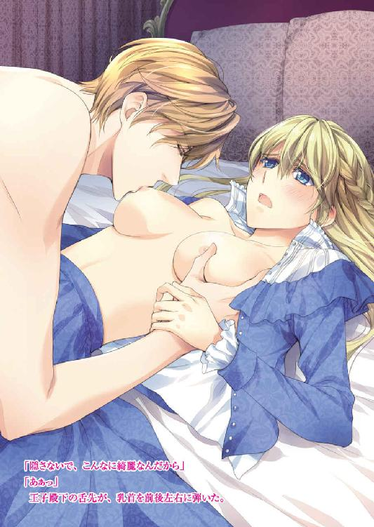
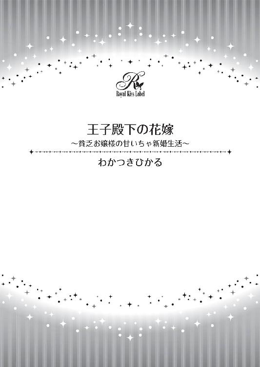
この物語はフィクションであり、実在の人物・団体・事件等とは、いっさい関係ありません。
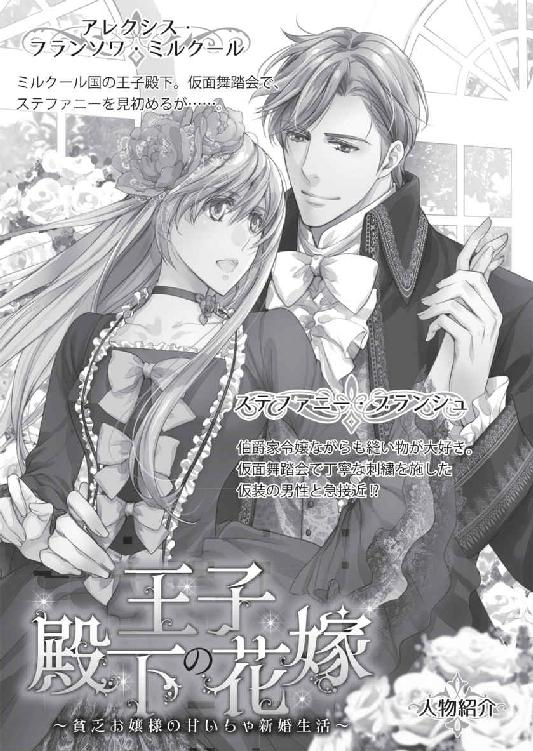
イラスト・ＯＤＥＫＯ
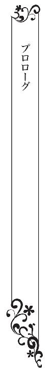
ステファニー・ブランシュは膝に広げた布の上で、細やかに針を使って手を動かしていた。ドレスを縫っているのである。
裾をまつると完成なのだが、ふくらみを保たせるためにダーツをたくさん取ったから、時間がかかってしまっている。
「ステファニー、お茶が冷めるわよ。ドロシーが困ってるわ。早く席に着きなさい」
母の声に振り返ると、メイドのドロシーが、ティーポットを持ったままで待っていた。
両親と弟のルシアンが席につき、ステファニーを待っている。
テーブルにはスコーンとサンドイッチとショートケーキを乗せた三段スタンドの銀トレイと、湯気の立つ紅茶が用意されている。
「もう、こんな時間っ!? ドロシー、ごめんね」
さっき昼食を食べたばかりなのに、もうアフタヌーンティーの時間になってしまった。
針を動かしていると楽しくて、時間が経つのを忘れてしまう。
「お母様。お父様。すみません。ルシアン、ごめんね」
ステファニーは糸を切り、あわてて席についた。
ドロシーは、ティーポットを傾けて紅茶を入れてくれる。
白い陶器に、琥珀色の液体が満たされていく。
紅茶の芳香が立ち上った。
「お嬢様、お砂糖はふたつになさいますか？」
「ありがとう。ドロシー。お願いね」
いつもは砂糖はひとつなのだが、疲れたときは甘いものがほしくなる。
ずっと我が家に仕えてくれているメイドのドロシーは心得ていて、スコーンやサンドイッチではなく、タルトタタンをトングで取って皿に載せてくれた。
「ステファニー、なぜ食堂で縫い物をするの？」
母が聞いた。
「窓際だと明るくて、糸が見やすいの。テーブルも広いから」
「縫い物なんかやめなさい。ブランシュ家は伯爵です。れっきとした貴族です。あまり豊かではないとはいえ、世が世ならステファニーはお姫様なのよ。裁縫なんて、ブランシュ家令嬢のすることではないわ」
──またはじまってしまったわ。
ステファニーは、気付かれないようにため息をつき、紅茶を飲んだ。
針仕事が好きで、ドレスを縫うのが得意なのだが、伯爵家の令嬢として生まれた以上、お針子になれるわけがない。
貴族の娘は年頃になればしかるべきところに嫁に行き、子どもを産み育てる。もしくは修道院に入る。
「早く嫁に行け。ステファニー。でも、いいところに嫁に行くなよ。持参金が払えないからな」
父の軽口に、ステファニーは苦笑した。
「大丈夫ですよ。お父様。私、もうすぐ二十歳です。家格のいいところから申しこみなんて来ませんわ」
十九歳はそろそろ嫁き遅れだ。若くて綺麗な令嬢がたくさんいるのに、いささかトウのたったステファニーに結婚を申しこむ酔狂な男性などいるわけがない。
「姉さん。それ自分で言っていて情けなくならないか？」
弟のルシアンが言った。
「もう、ルシアンったら、そこはあいまいにしておいてよ」
「僕は姉さんが心配なんだよ。姉さんは、ちょっと変わってるし地味だけど、優しいし、気立てもいいし、美人だし、いいお嫁さんになりそうなんだよ。なのに、なんで嫁に行けないんだろう？」
「そうなの。ステファニーは、雰囲気は地味だけど、綺麗な顔をしているのよ。優しい子なのにねぇ。もっと舞踏会やお茶会や晩餐会に行かせるべきだったわねぇ。お母さんが悪かったわ」
母が嘆息した。
「社交界なんて嫌だって言って、舞踏会に行かなかったのは、ステファニーだろ」
父が言った。
王宮で文官として働いてきた父は、今はもう仕事を辞し、貴族年金をもらって悠々自適の生活を送っている。
ブランシュ家は先々代に領地を失っているので、父の貴族年金と、ルシアンが王宮勤めをしていただく給与が主な収入だ。
「お父様。私、ダンスが苦手なんです。綺麗なドレスを見るのは好きなんだけど、知らない人とおしゃべりするのはあまり好きではないんです」
「普通は舞踏会で知り合って伴侶を見つけるんだぜ。僕みたいにさ」
ルシアンが自慢げに言った。
ルシアンは公爵家で開かれた舞踏会で、かわいい令嬢と知り合った。つい先日、彼女が我が家にやってきたのだが、透き通る金髪とやさしい笑顔が印象的な、素直そうなお嬢様だった。
「キャロラインさん。かわいい娘さんだったな。ルシアンにはもったいないぐらいのすてきなお嬢様だ」
父が言うと、母はうれしそうにうなずいた。
「うちの息子とお似合いよ。クレメンテ子爵の娘さんなら、家格もつり合いますからね。美男美女のカップルですわね」
その通りだ。ルシアンは二枚目だ。昔は頼りなかったのだが、最近ではぐっと大人びて、我が弟ながら美青年だと思ってしまう。
「半年後に結婚式なんて楽しみだな。ルシアンも仕事をがんばってるしなぁ」
父が言った。
弟のルシアンは、ステファニーとひとつ違いの十八歳で、王宮で働いている。騎士ギルドに所属しているので、もしも戦争が起これば剣を取って戦うが、平時は文官として書類を書いたり計算尺を動かしてたりしている。
ルシアンとキャロラインはお似合いで、いい夫婦になるだろう。
「だからさ、姉さんには早く結婚して、家を出てほしいんだよ」
「うーん。結婚って、なんかめんどくさそうなのよね。お針ができるお家にお嫁に行くならいいんだけど」
お針子になりたい。ドレス工房に勤めたい。
それが無理なら、縫い物をしていても嫌がらない夫がいい。
「お針なんかやめて結婚しなさい。さもなきゃ修道院に行ってもらいます」
母が断固とした口調で言った。
「キャロラインだって、姉さんが家でだらだらしてると窮屈だよ」
「ブランシュ家は、若夫婦のために新しく屋敷を建てるような余裕はないんだ。領地もないし、私は年金暮らしだからな」
父が言った。
居心地が悪くなったステファニーは、強引に話題を変えた。
「お母様。これ、作ったの。着てくださらない？ まだ裾をまつってる途中なんだけど」
「私のなの？」
「ええ。お母様は、工房で作ってもらうドレスは窮屈だし、太って見えるから嫌だっておっしゃっていたでしょ？ お母様に似合うかなと思って作ってみたの」
あまり裕福ではない貴族は、ドレスの縫製をドレス工房に依頼する。
工房は、同じ型紙でドレスを縫うから、専門のお針子を雇ったときのようにはいかない。
「まあ、ほんとう？ わぁっ。すてきなドレスじゃないの!?」
母はドレスの肩を持って広げると、身体の前に合わせて顔をほころばせた。
そしてドレスを抱きしめると、いそいそと部屋を出た。メイドのドロシーがくすくす笑いながらつき従う。
「キャロラインさんにもドレスを作ろうと思ってるの。かわいらしい方だから、サーモンピンクのタフタで作ると、きっとお似合いになるわ」
「それはうれしいけど......」
「ルシアン、安心して。私はルシアンとキャロラインさんの迷惑にならないようにするわ。もらい手のないときは修道院に行くから。修道院でも奉仕活動で縫い物ができるみたいだし」
ほんとうはドレスを縫いたい。レースにフリル、タフタにオーガンジ、リボンに刺繍。布をさわっていると心が浮き立つ。できれば綺麗なものを作りたいが、裁縫ができるだけ幸せだと思えばいい。
「奥方様。よくお似合いでございます」
「とっても着心地がいいのよ」
メイドのドロシーと母が廊下で話す声が聞こえてきた。
「ふふっ。見て見て」
ステファニーが作ったドレスを着た母が、部屋に入ってきた。輝くような笑みを浮かべて、横を向いたり身体をひねったりしている。ドレスの裾が左右に揺れる。
「よかった。ぴったりだわ。どうしてこんなにぴったりなものが作れるの？」
スカートに張りを持たせ、切り替えを高めに入れたおかげですっきりして見える。
「お母様のドレスを元に型紙を作ったからよ。お母様が窮屈だとおっしゃっていたウエストは緩みを持たせて、首のあたりは細くしたの。お母様は肩から首へのラインが美しくていらっしゃるから」
「ほんとだ。ぴったりだ。似合ってる」
「綺麗だよ。母さん。若々しく見せる」
ルシアンだけではなく父も母を褒めた。母は頬を染めて言った。
「ありがとう。ステファニー。すてきなデザインだわ。工房のものよりずっといいわ。縫い方もていねいね」
そう言われるとうれしい。
綺麗なドレスを縫って、着てもらって、お礼を言われる。最高だ。
着飾りたいとは思わないが、綺麗なドレスを縫い、着てくれた人が笑顔になる。それが楽しい。
「だって私、工房で縫い方を教えてもらったもの。お針子さんみたいに早く縫えないけどね」
結婚も修道院も気が重い。
工房のお針子になって、生きて行ければいいのに。
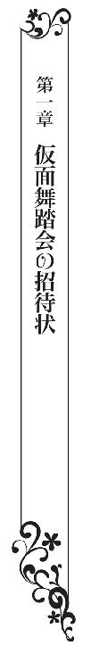
ステファニーは机に向かい、紙に羽根ペンを走らせていた。
弟の恋人であるキャロラインへプレゼントするドレスのデザイン画だ。パステルカラーが似合いそうな愛らしいお嬢さんなので、キュートなドレスを作りたい。サーモンピンクのシフォンを重ねたデザインはどうだろう。
いやいや、コットンレースの清楚なかわいさも捨てがたい。
若い人なのだから、最新流行のデザインを取り入れたい。どうもイメージがまとまらず、ペンの先から生まれる線は散漫だ。
ノックの音がして、ドア越しに声がかかった。
「ステファニー。入っていい？」
「はい。お母様」
ステファニーはあわてて席を立ち、ドアを開けた。
母が輝くような笑みを浮かべ、部屋の中へと入ってくる。
「いま、王宮からお使いが来たのだけど、これを渡されたの」
母が招待状を差し出した。
羊皮紙を巻いて封蝋を施した正式なものだ。
封蝋には王家の紋章である百合の意匠が刻印されている。
「ステファニー宛の、仮面舞踏会の招待状よ。場所は王宮の舞踏の間!! 王家が主催してくださるのよ！」
「どうして私が招待されたのかしら？」
「ブランシュ家は名門です！ 今は昔ほどは裕福ではないけど、家柄だけはすばらしいのよ」
ステファニーは苦笑した。
母は娘をよそに、王宮からの招待状を手にはしゃいでる。
「すごいわっ。王宮のパーティよっ！ 仮装しても、仮面だけでもいいって。ああ、どうしよう。きっと豪華なんでしょうね。私が若かったら絶対行くのにっ!!」
ステファニーの脳裏に、ドレス姿のプリンセスや令嬢が華やかに踊っている様子が浮かんだ。
仮面で顔を隠すから、ステファニーの密かなコンプレックスである平凡な容姿もごまかせる。
ダンスは苦手だが、隅のほうで目立たないようにしていたら、申しこまれる心配もないだろう。
それになにより、最新流行のドレスを見ることができる。
王宮は流行の発信地だ。
プリンセスの纏うドレスは、流行のエッセンスを抽出されアレンジされて、上流階級から庶民へと流れていく。
「お母様、私......」
母が機先を制した。
「断ることは許しませんっ！ 行きなさいね。ステファニー。絶対よ！ こんな機会、二度とないわ!! そして、すてきな男性と知り合って結婚するの！ ステファニーだけの騎士を見つけるのよっ！ いいわねっ!?」
熱弁をふるう母に苦笑する。
すてきな騎士と仮面舞踏会で知り合って結婚なんて、ステファニーにはできそうにもないが、姫君や令嬢たちのドレスを見たい。
「参加しますわ。お母様」
「え？ ほんとに？」
断ると思っていたのだろう。
母は本気なのかしら？ とでも言うような表情を浮かべている。
舞踏会やパーティのお誘いは、今までずっと断っていたのだから当然の反応かもしれない。
「はい。参加したいんです」
「まぁ、どうして急に？」
お姫様のドレスを見るためだと言うと、母は渋面を作るに違いない。それどころか、そんな気持ちで舞踏会に出席しても、騎士を見つけることはできないとお説教をはじめるだろう。
「えっと。そのう。......私だけの騎士をみつけたいんです」
「すばらしいわっ。なんていう風の吹き回しかしら！ ドレスはどうしましょう。......ドロシー、来て来てっ！」
母がパンパンと手を叩いた。
「はい。奥方様」
ドロシーがやってきた。
「ステファニーが仮面舞踏会に出席するそうなのよ。ドレスをどうしたらいいと思う？ ドレス工房に行く方がいいかしら？ 私のドレスを貸してもいいけど、流行遅れよね。でも、工房のドレスもたいしたことないのよね」
ドロシーはにこにこしながら言った。
「ご心配なさらなくても大丈夫です。ステファニー様がご自分にいちばん似合うドレスをお作りになられますよ」
「そうね！ その通りだわっ。ステファニー、お針をなさいな。ああ、仮面舞踏会が楽しみだこと。口紅や白粉も、新しいものを買ったほうがいいかしら。バックと靴はどうしましょう」
「奥方様。お化粧やバッグや靴は、ステファニー様のドレスができあがってからでいいと思いますよ」
ステファニーが裁縫好きなことを知っているドロシーが言った。
「そうね。口紅の色もドレスに合わせるべきよね。ステファニー、急いでドレスを作りなさい」
「奥方様、肩こりがひどいとおっしゃっていたから、私、肩もみを致します。お部屋に戻りましょう」
ドロシーは、ごゆっくり、とばかりに、ステファニーに目配せをした。
ステファニーはドロシーに目で礼を言った。ドロシーも、いいんですよ、とうなずく。
メイドのドロシーは年齢こそ若いのだが、ブランシュ家の皆の性格を知り抜いている。ステファニーがお針に集中できるよう、気を利かせてくれたのだ。
母とメイドが出ていき、ひとりになった部屋で、ステファニーは伸びをした。
散漫なデザイン画が踊っている紙を裏返す。紙は高価だから、無駄使いはできない。
仮面舞踏会は、どんな格好をしようか。かわいくて素朴で清楚なドレスがいい。目立たなくてもいいのだが、とても似合うドレス。
そうだ。舞踊劇に出てくる村娘の格好をしよう。エプロンドレスにチロリアンテープを飾って、エプロンの胸当てには刺繍の飾り。スカート丈は膝が隠れる程度の長さにして、裾にはフリルをたくさん作ろう。スカートは花びらを重ねたようなデザインにしよう。
ステファニーは、羽根ペンを走らせた。
☆
ステファニーは、王宮の豪華な廊下を歩いていた。
舞踏会に向かう仮面をつけた紳士淑女が散見され、華やかなことこの上ない。
──どうしよう。私って場違いかしら。
──帰ろうかな。
──だめだめ。逃げちゃだめ。招待状をもらってやってきた、れっきとした招待客よ。
──顔は仮面で見えないんだし。ドレスもかわいいのを着てるんだし。
ドレスは自信がある。
シフォンのスカートにエプロンドレス、チロリアンテープをあしらった清楚でかわいらしいデザインだ。急いで作ったわりには上手にできた。自慢のドレスは、ステファニーを愛らしく飾っている。
廊下に敷かれた緋色の絨毯は足が沈むほどにふかふかで、王宮ならではの重厚さに圧倒される。
管弦楽団が奏でるワルツの調べが聞こえてくる。
ステファニーは、会場の前で足を止めた。
「どうぞ。お嬢様」
王宮勤めの衛兵の手により、舞踏会場のドアがステファニーの前で開かれた。
「ありがとう」
色彩と音楽の奔流にひるみそうになったが、気後れする気持ちを叱咤するようにして舞踏会場へ足を踏み入れる。
舞踏会につきものの、来訪者の名前を独特の抑揚をつけて読みあげる儀式はない。
ここは無礼講の仮面舞踏会。
奥に宮廷楽師がリュートやバイオリンを奏でている。会場の中央には踊りの輪ができていて、仮装した男女が手に手を取って踊っている。
華やかに装った紳士淑女が、早いリズムの舞踊曲に合わせてくるくると回っている様子は、大輪の花が水に揺れているようだ。
華やかさに心が浮き立つ。
騎士に狩人、戦士の姿の紳士たち。
妖精に扮した姫に、東洋のキモノ姿のお嬢様。
みんな仮面をつけている。
最新流行のデザインばかりで目に綾だ。
──わぁ。なんてすてきなの。さすがみなさん、ドレスが垢抜けていらっしゃる。いったいどこの工房に頼んだのかしら。
工房に頼むのは、お針子を雇う余裕のない家に限られる。この人たちはきっと、お針子に頼んでいるのだ。
──いいなぁ。私もお針子になりたいなぁ。
ステファニーは、そっと会場の隅のほうに移動した。
「お客様。カクテルはいかがですか？」
メイドの持つトレイには、カラフルな液体をたたえたカクテルグラスが並んでいた。オレンジに赤にゴールド。グラスに入ったカクテルの透明感のある色が美しい。
「アルコールは入っていますか？」
家での晩餐では食前酒を飲んでいるが、外では飲まないようにしている。甘い食前酒はおいしいが、しゃっくりがでるからだ。
しゃっくりは行儀が悪いとされていて、ステファニーとしてはなるべく避けたい。
「入っております」
「アルコールなしのものが飲みたいんですが」
「かしこまりました。オレンジジュースかレモンジュースになります。どちらがよろしいですか？」
「レモンで」
「すぐにお持ちします。少々お待ちくださいませ」
「ありがとう」
目の前をたくさんの参加者が行き交う。
──あのドレスがいいわね。
青いドレスの女性が目立っていた。青い仮面で目の周りが隠されているのにもかかわらず、整った美貌の女性だとわかる。
青いドレスに大きなリボンを斜めにあしらっているデザインで、くっきりと大きく見えた。すっきりして印象的だ。
──リボンって子どもっぽく見えるものだけど、あんな風にあしらうと大人っぽくなるのね。すてきなデザインだわ。
──だけど、あのリボン、腰の横で大きな蝶々結びになっているから、引っかかりそうだわ。動くのに邪魔になるデザインはよくないわね。
──それにキャロラインさんには似合わないかも。もっとフワフワしてるほうがいいわ。
──あのドレスも綺麗。すとんとしたシルエットだけど、風に揺れる薔薇の花みたい。生地はシルクタフタかしらね。
──切り替えを斜めにして、スカートをふんわりさせてみようかな。
頭の中の画用紙に、ドレスのデザインを描いていたときのことだった。
「なんてことをするのっ!?」
ステファニーのすぐ横で叱咤する声が響き、ものが割れる音がした。
「失礼をっ」
カクテルを乗せたトレイを持ち、会場を縦横に移動しているメイドが、顔を青くさせて平謝りしている。
グラスが床に落ちて割れ、透明な液体を散らしていた。
ステファニーがジュースを頼んだメイドだ。
青いドレスの女性とぶつかり、グラスを落としてしまったらしかった。
「不注意だわ。どうしてくれるのっ」
青いドレスの女性は、感情的にメイドを叱りつけている。リボンを斜めにあしらった垢抜けたドレス。
仮面で目が隠されているが、際だった美貌だ。勝ち気な性格をしているようだ。
「申し訳ありません」
メイドはかわいそうにおろおろしている。
「すみません。私が頼んだんです。悪いのは私です」
ステファニーはそっと口を挟んだ。
失態をかばったステファニーを、メイドが驚きの表情で見ている。
「私を誰だと思っているの？ 私はイザベラ・アジャニー。アジャニー伯爵の長女よ。私のドレスがだいなしになってしまったわ。どうなさるおつもり？」
ジュースがかかったのかと心配したが、飾りのリボンが引っ張られて穴が開いていた。
とめつけていた布のところが破れたらしい。
腰の横に大きな蝶々結びを作ったデザインなので、引っかかりそうだなと思っていた。
だがそれは、イザベラが悪いわけではない。
目立つことを優先して、着心地を犠牲にしたお針子の責任だ。
「はじめまして。イザベラさん。私は、ステファニー・ブランシュ。ブランシュ伯爵家の娘です。大丈夫ですよ。すぐに直ります」
ステファニーは、ソーイングセットを取り出した。
リボンをほどいて折り曲げてお花を作り、穴が開いたところに縫いつける。
これでリボンが引っかかることもなくなるし、穴もふさがる。
片手を広げたほどの大きさのお花が咲いてかわいらしい。
「あなた、お針子なの？」
「ふふ。お針子になれたらいいんですけど」
「ありがとう。いくら払えばいいかしら？」
「私もいちおう貴族なので、お金をいただいたりすると、母に叱られてしまいますわ。お針で身を立てるというのは理想なんですけど」
「変わっているのね」
「よく言われます」
ステファニーは笑った。
「ありがとう。助かったわ」
イザベラは、自分のドレスに咲いたリボンの花を見て、満足そうな表情を浮かべている。
「美しいプリンセス。私と踊っていただけませんか？」
イザベラにダンスの誘いが来た。
緑のズボンにギザギザのついたグリーンの上着、エメラルド色の帽子。
背中に矢筒と矢を背負った狩人の格好をし、目の周りを仮面で隠した青年だ。衣装には、土の汚れがいくつか散っている
──あら、この生地、シルクタフタだわ。
しかも、シルクタフタにつきものの織りむらがまったくない。最高級の品だ。
──この土汚れ、刺繍だわ！ すごく手がこんでるわ。
ステファニーは、狩人の扮装をうっとりと見つめた。
いっけんみすぼらしく見えるこの扮装が、恐ろしく高価で手のかかっているものであることが、ステファニーにはわかる。
狩人の扮装を着た青年は、裕福な貴族のようだ。
イザベラはそっぽを向き、気付かないふりをした。
──どうして踊らないのかしら？
狩人の扮装は、みすぼらしく見えて、イザベラのお眼鏡にはかなわなかったのだろうか。
イザベラはぷいと横を向くと、知らないフリで歩き去っていった。
「困ったな。嫌われてしまった」
狩人の青年は困ったような表情を浮かべた。
目の周りを仮面で隠しているのに、声の調子と気配で表情がわかってしまう。
「ふふ。イザベラさんは、お疲れなのかもしれませんわ」
「君は誰とも踊らないのですか？」
「はい。お誘いもないですし」
「だったら私が誘ってもかいませんか？」
──どうしよう。ダンスは苦手なんだけど。
だが、狩人さんはイザベラに断られたばかりだ。ステファニーまで断ると、恥を掻かせることになる。
それに、狩人さんは、馬が合うというか、話していて楽しい。知らない男性と話をするのなんて気が重いと思っていたのに、会話のリズムが合って居心地がいい。
「はい」
「美しいプリンセス。私に姫君と踊る栄誉をいただけないでしょうか？」
大仰なおじぎをされ、ステファニーは笑った。
「ありがとうございます」
スカートの裾をつまんでおじぎをし、手を差し出す。
温かい大きな手が、ステファニーの手を握ってくる。
ちょうどよく音楽が変わった。
手に手を取って、会場の中央へと歩いて行く。
ダンスをやめて壁際へと戻る組、踊りの輪に加わろうとする組が交差する。
両手を取り、お互いに見つめ合って踊り出す。
ゆっくりしたリズムの舞踊曲だ。
ステップの入るところがわからずモタモタしていたら、彼が手をくいっと引いた。
引かれるままに足を踏み出すと、もうステップが踏めている。
スロースロークイッククイック、ウィスク、ハーフターン、サイドシャッセ、ナチュラルターン。
くるくると回ると、心が浮き立ち、楽しくなってきた。
「楽しいわ」
「私もです。君は踊りが上手ですね。なんて軽やかに踊るんだ」
「いいえ、私はダンスが苦手なんです。狩人さんのリードがお上手だからです」
つないでいる手とステファニーの背中に回っている彼の手が、引いたり押したりすることで、おもしろいぐらいに簡単にダンスができる。
「ダンスが楽しいなんてはじめてですわ」
リズムに乗って踊っていると、胸が弾んだ。
ダンスは苦手だと思っていたのに、彼と一緒だとこんなにも楽しい。
この青年とは呼吸が合う。
「それはよかった。あなたは美しい。そのドレスも良くお似合いです。かわいらしくていらっしゃる」
ステファニーは笑った。
かわいいとか美しいとか、冗談にもほどがある。
ステファニーは地味で平凡な容姿で、十九歳の嫁き遅れ。しかも顔は仮面で隠していて見えない。
歯の浮くようなお世辞なのに、からかわれている気分にならなかったのは、狩人さんの纏うどこか上品な雰囲気と、真摯な物腰のせいだろう。
「君はなんてかわいらしく笑うんだ。綺麗な人はたくさん見たが、君以上にかわいらしい女性を見たことがない」
「狩人さん。笑いすぎてお腹が痛くなるからやめてください。歯が浮きませんか」
「私の歯は頑丈です」
「あらすてき。私も虫歯はないんですよ」
「気が合うね」
青年が真顔で冗談を言ってくるものだから、おかしくてたまらない。
「ふふっ」
曲が終奏に入った。もうすぐ曲が変わる。こうした舞踏会では、同じ相手と何回も踊ることは行儀が悪いとされている。
だが、もう少し踊っていたい。
「あの......」
「もう一曲お願いできませんか？」
まるでステファニーの心を読んだかのような申し出に、声が弾んだ。
「はいっ！ 私も、狩人さんと、もっとダンスしたいと思っていました！」
「一晩中でも踊り続けましょう」
「体力が持ちませんわ」
曲が変わった。
「もう少し近寄ってください」
抱き寄せられて、ひゃあっと声が出てしまう。
ほっそりして見えたのに、服越しに感じる彼の身体はたくましかった。
厚い胸板やがっしりした腕は、日ごと夜ごと鍛錬している男性のものだ。
騎士としか思えないが、織りむらのない最高級のシルクタフタを仮装に仕立ててしまえるなんて、いったいどういう人だろう。
「どうしました？」
「い、いえ......そ、その......」
密着したら恥ずかしくなってしまった。
顔が熱い。
胸がどきどきと鼓動を打つ。
息が弾んできた。
「お疲れですか？ 曲が終わりますね。休憩にしましょうか？」
「はい」
どこかほっとした気分で踊りの輪を抜け出る。
トレイを持ったメイドが、ステファニーの前で足を止めた。
トレイの上には、透明な液体が満ちたグラスがひとつだけ載っている。
「どうぞ。承りましたレモンジュースです。お嬢様。さきほどはありがとうございました。助けていただき、感謝しております」
「ごめんなさい」
「え？ どうして？」
「ジュースをお願いしておきながら、あなたを待たせてしまったわ」
「まあ、そんなことはいいのですよ。それが私の仕事でございますから。ぬるくなっておりますね。取り替えて参りましょうか」
「いただきます。喉が渇いていたところよ。ありがとう」
ステファニーはグラスを受け取り、半分ほど飲み干した。
確かにぬるくなっていたが、その分甘みがはっきりと感じられ、疲れた身体にちょうどいい。
「おいしいわ！」
「私もいただきます」
狩人さんがステファニーの飲みかけのグラスを持ち、ぐっと飲み干した。
「そんな、私の飲みかけなのに」
間接キスになってしまった。顔がかっと赤くなった。
「おいしいよ。ありがとう」
メイドがはっとした表情で青年を見た。狩人さんは、意味ありげに目配せをした。メイドは心得たように言葉を呑みこむと、ていねいなおじぎをして去って行った。
──あらら？ 何かしら？
ステファニーはメイドの後ろ姿と狩人さんの顔を見比べた。
違和感を覚えたが、仮面で目の周りを隠した青年の顔からは、なんの思惑も読み取れない。
──気のせいだったのかしら。
「ふたりにさせてくれ、と頼んだのですよ」
ステファニーの困惑を見て取ったのか、狩人さんが説明した。
狩人さんはごく自然な様子でステファニーの手を取り、エスコートする。
開け放したままのドアから中庭に出た。
等間隔に篝火が焚かれ、昼を欺くほどに明るい。篝火が燃える様子は美しく、お祭りのように華やかだ。
夜の冷気が、ダンスで火照った身体を心地良く冷やしてくれる。
中庭には、料理を並べたテーブルが用意され、仮面と仮装の男女が談笑している。
会場はダンスフロアで飲み物だけ、料理とおしゃべりは中庭でするようだ。
料理は立ったままで食べられるよう、小さく焼いたエッグタルトやローストビーフをくるくる巻いて串に刺したもの、オレンジをくりぬいて作った器に入れたサラダなどが並んでいる。
クロカンブッシュ（プチシュークリームをタワー状に飾りつけたケーキ）の横には白い帽子を被ったコックがいて、シュークリームを取り分けて客たちに渡している。
紫黒色の空に猫の爪のような銀の月と金の星がまたたき、薔薇のアーチや彫像の飾りを照らしている。
「何かお取りしましょうか？」
料理はいかにもおいしそうだったが、雰囲気に酔ったのか食欲はなかった。
「胸がいっぱいで食べられそうにありません」
「私も同じです。村娘さんと話しているだけで満足です」
「そう仰っていただけて光栄です。仮面舞踏会に出席してよかったわ。狩人さんと知り合うことができたんですもの」
「私も村娘さんと知り合えてうれしいですよ。村娘さんはすばらしい人柄をしていらっしゃいますね」
「ありがとうございます」
「実は、レディ・イザベラといさかいを起こしていた様子を見ていたのです。村娘さんは冷静でしたね。お針子かと聞かれても、怒りもしなかった」
「あら、私、お針子なの、って言われて、うれしかったんです」
「村娘さんは、伯爵家の令嬢でいらっしゃるのですよね？」
「私、縫い物が好きなんです。だから私には褒め言葉です。それに、こういう楽しい場で、雰囲気がとげとげしくなるのは、みなさんに悪いですわ」
狩人さんは、息を呑んでステファニーを見つめた。
何か間違えたことを言ったのだろうかと心配になるほどの沈黙だ。
「すばらしい。村娘さんのような美しい女性に出会えたのは、神のお導きとしか思えない。キスしてもいいですか？」
手の甲へのキスだと思ったステファニーは、狩人さんの大げさな言い方に笑いながら同意した。
「ええ。よくてよ」
狩人さんはステファニーを抱き寄せて唇を奪った。
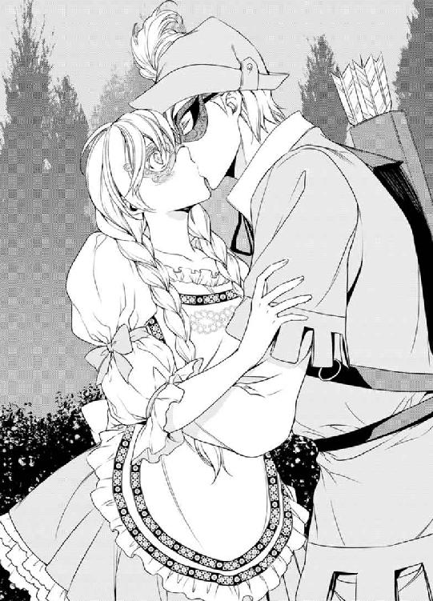
──えええええっ!?
狩人さんの腕の中でもがいたところ、さらに強く抱き寄せられた。
──私、キスしてるっ!?
驚きのあまり、身体が硬くなってしまった。
篝火が照らす中庭は充分に明るいが、同時に闇も作り出す。恋人同士のようにキスするふたりを、暗闇が隠している。
「村娘さんが好きです」
耳元でささやかれた。
唇の先だけを合わせる軽いキスだと思っていたが、キスは次第に深くなり、彼の熱い舌が、歯列を割って入ってきた。
──きゃあっ。舌が！
身体がかっと熱くなり、考えることができなくなった。
「ん......んっ......」
熱くて柔らかい舌先が、驚きのあまり縮こまっているステファニーの舌先を絡め取る。
キスは甘く、心地良く、レモンの味がする。
炎天下の下のアイスクリームのように、身体がとろり、溶けていく。
──どうしよう。なんだかすごく、気持ちがいい......。
「ん......、あ......ぁ......っ」
背中を抱く狩人さんの大きな手が、宝石を扱うような繊細さで背中をそっとさすっている。
舌を絡め、深いところを探り合うような恋人のキス。
フレンチキス。
ディープキス。
恋人のキス。
甘くて熱くて融けてしまいそうになる。
身体の芯が熱くなり、頭の芯がぼうっとする。
舞踏会で出会った見知らぬ紳士に、いきなりキスされていい気持ちになっているなんて信じられない。
なのに、もっと続けていたい気分になる。たくましい腕に抱かれ、息が止まるほどの熱い接吻を受けるのは、うっとりするほど気持ちがよかったのだ。
背中を抱いていた彼の手が、臀部をスルッと撫でた。お尻なんて触られるのは嫌なはずなのに、まるで魔法にかかったように、ふんわりと心地よい。
「あっ......んっ......はぁ......」
そのとき、背後で人の気配がした。
陶酔が覚めて一気に冷静になった。
「きゃあっ」
ステファニーは抱擁をほどいて飛び退いた。
──私は何てことをしてしまったの!?
唇に手を当ててじりじりと後ずさる。
「村娘さん」
狩人さんが、心配そうに手を伸ばしたが、恥ずかしくて照れくさくて、いたたまれない気分になる。
ステファニーは踵を返して逃げ出した。
王宮の廊下を走るステファニーを、仮装と仮面の参加者と、王宮に勤める人たちが、不思議そうな表情をして見つめていた。
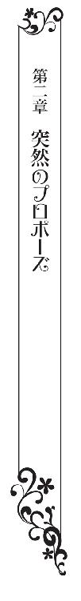
ステファニーは、膝に乗せた布の上で、針を動かしていた。
食堂の窓際のテーブルが、ステファニーの定位置だ。ここのテーブルは広く、陽が差しこんで明るいから、縫い物には最適の場所だ。
「痛っ」
指先に針を刺してしまい、左手の人差し指の先にぷつっと赤い血の雫が盛りあがった。
指を舐めると、キスされたときの感触が蘇り、顔がかっと赤くなった。
仮面舞踏会から一週間。
今まで通りの日常が戻ってきたが、狩人さんのことばかり考えてぼんやりしてしまう。
花を生けていたドロシーが聞いた。
「ステファニー様。大丈夫ですか？ 薬箱を持って参りましょうか？」
「ええ。ありがとう。指を刺してしまっただけ。もう血が止まったから、大丈夫よ」
「珍しいこともありますね。ステファニー様は縫い物が得意でいらっしゃいますのに」
その通りだ。普通は針を動かしていると、時間を忘れるほどに夢中になるものなのに、どうも気が散じている。
──狩人さん......。今、どうしていらっしゃるのかしら？
織りむらのないシルクタフタ。手のこんだ刺繍の衣装。
彼はいったいどういうつもりでステファニーにキスしたのだろう。
美しいとかかわいいとか言われたが、顔は仮面で隠れて見えない。
好きだと言われたが、二曲ほど一緒に踊っただけで好きになるなんて信じられない。
しかも狩人さんが先にダンスを申しこんだのは、ステファニーではなくイザベラだった。
──からかわれたのかしら？
狩人さんは、人たらしだったが、誠実そうだった。高い会話力と、紳士然とした身のこなしは、身分の高い人なのだろう。
女性をからかって喜ぶような、軽薄な男性には思えない。
──なんとなく盛りあがって、勢いでキスしたのかしら？
それがいちばんありそうな気がする。
──私の容姿は平凡だし、雰囲気は地味だし。貧乏貴族だし。十九歳の嫁き遅れだし。シルクタフタを着る男性から、選ばれるわけがないのよねぇ......。
はぁ、とため息をついたところ、それがやけに重苦しく響き、ドロシーが心配そうにステファニーを見た。
「お疲れではいらっしゃいませんか？ ステファニー様」
「そ、そうね。根を詰めすぎたのかしら。疲れてしまったわ」
縫い物をして疲れていることにしよう。仮面舞踏会でキスした男性のことを考えて、暗くなっているなんて、ドロシーに説明できない。
「お茶を用意しますから、休憩になさいませ」
ドロシーは優しそうに笑いながら言った。
心遣いがありがたいが、アフタヌーンティーが終わり夕食にはまだ間があるこの時間は、メイドにとってゆっくりできる時間だ。
いわばメイドの休憩時間に働かせるのは気がひける。
「ありがとう。ドロシーも一緒にお茶を飲まない？」
「そんな、お嬢様、もったいないです」
ドロシーは盛大に恐縮した。
使用人が仕えている家の令嬢と同じ席に座ってお茶を飲むのはありえない。
ステファニーと父と弟は、使用人はねぎらうべきだと考えているのだが、母は身分の差については厳格で、もしも母に気付かれたら、叱られるのは必至だった。
「お嬢様ではなく名前で呼んでって言ってるのに。お茶はひとりで飲むより、ふたりで飲むほうが楽しいわ。何なら私がドロシーにお茶を入れてあげるわよ」
「わぁぁっ、ステファニー様っ！ それはやめてくださいっ!! ドロシーは使用人ですのにっ」
「だったらお茶を一緒に飲みましょう。いいわね？」
「はい。もう、ステファニー様にはかないませんわ。お待ちくださいませ。お茶を用意して参ります」
ドロシーは、品のいい仕草でおじぎし、下がっていった。
「ステファニー！」
母が呼ぶ声が聞こえてきた。
「ここにいるわ。お母様」
母が食堂に入ってきた。
母はいったいどうしたのだろう。やけに機嫌がいい。にこにこと笑いながら、後ろ手に何かを隠し、弾むような足取りで歩いてくる。
「ふふっ。見て見てっ！」
羊皮紙を差し出された。
「ステファニー宛の、王宮のお茶会のお誘いよ」
「お茶会？ なんで急に」
「急じゃないわ。舞踏会もパーティもお茶会も、定期的に開催されてるの。ブランシュ家は名門ですからね。王宮からも公爵家からもお誘いが来るのよ。なのに、嫌がって行かなかったのはステファニーじゃない？ 仮面舞踏会、楽しかったんでしょ？ うっとりしながら帰ってきたものね。参加したらどう？ お茶会もきっと楽しいわよ」
「お茶会って、どんなドレスを着るべきかしら？」
仮面舞踏会は無礼講だから、ドレスコードは気にしなくてすんだ。
だが、お茶会はそうはいかない。
王宮にお呼ばれするのにふさわしい服装で行くべきだ。
「あら、ステファニー、お茶会に行くつもりになっているのね？」
「はい。お母様」
お茶会に行けば、狩人さんと逢えるかもしれない。
狩人さんはステファニーのことを覚えていないかもしれないが、それでもいい。もう一度逢いたい。
たとえ再会できなくても、狩人さんがどんな人なのか、知ることができるかもしれない。
──そうだわ。お母様に聞けば、狩人さんのことがわかるかも。
そのとき、ドロシーが、ふたり分のお茶を用意して持って来た。茶器はドロシーの個人もちのマグカップではなく、アフタヌーンティーに使う正式なものだ。母の声を聞いて、すぐさまカップを変えたのだろう。
「奥方様、お茶はいかがですか？」
ドロシーはすかさず言った。
「あら、ありがとう。気が利くのね。今は休憩時間なのに、気を遣わせて悪いわね」
ドロシーは、どういたしまして、というふうに会釈した。
ステファニーは、ドロシーに、またあとでね、必ずお礼をするから、と目配せした。
ドロシーは、作法に則った手順で茶器を用意し、ティーコゼーを外し、ティーポットを傾ける。
「お茶会は、昼間の開催だし、王宮だし、アフタヌーンドレスになるわね」
「じゃあ、ローブ・デコルテかしら？」
裾をふくらませていない襟の開いたドレスは、昼間のお出かけにぴったりだ。
「首回りが広がっているドレスは、お茶会向きじゃないのよ。ましてステファニーは未婚だもの。ローブ・モンタントで、清楚な感じのものになさいな」
「どうしましょう。私の持っているローブ・モンタントは、子どもっぽいデザインだわ」
「いま、ステファニーが縫っているドレスがぴったりよ。優しい色だし、ステファニーに似合いそう」
「これはキャロラインさんのために作ってるのよ」
「あら、じゃあ。着心地を確認するために着てみたらどう？」
「......そうね......そうしようかしら......」
キャロラインとステファニーは体型が似ている。
ドレスが縫いあがったあとは、いったん洗濯してプレスしてから渡すのだから、お茶会の数時間だけ着てもかまわないだろう。
「ふふ。ステファニーが縫い物が得意でよかったわ」
「お母様。仮面舞踏会でシルクタフタの狩人さんとダンスしたの。お名前も聞かずに別れたのだけど、どういう人か、調べることができるかしら？」
「シルクタフタの狩人さん？ 狩人の扮装の青年と知り合ったってことね？ お住まいの場所とか、家柄とか、お名前とか聞いてないの？」
「家柄なんて聞けるわけないわ」
「ステファニーはそうよねぇ。顔とか、目の色とか、年齢は？」
「顔は仮面で隠していたからわからないの。目の色は青で金髪で、細いけどがっしりした身体つきだったわ。年齢は私より少し上だったわ」
「金髪碧眼で二十歳ぐらいの青年なんて、たくさんいらっしゃるしねぇ。お茶会に行けばわかるわよ。気軽な集まりなんだから、気楽に行ってらっしゃいな。狩人さんに出会えるかもよ」
気楽な集まり、という言葉が、ステファニーの緊張をほどいた。
「そうね。お母様に相談してよかったわ。私、お茶会、行ってみる」
「その狩人さんが好きになってしまったのね？」
「え？」
意外なことを言われて面食らう。
そうかもしれない。
こんなにも彼のことが気になるのは、狩人さんが好きになっていたからなのか。
「そうね。好きかも」
「あら、よかったわね。お茶会で狩人さんに出会えるわよ。きっと」
「そうだといいわね。ありがとうお母様」
ミルク入りの甘い紅茶は香りが良く、身体の芯が温かくなる。
ドロシーが、にこにこと笑いながら応援するようにうなずいている。
☆
馬車の揺れが納まり、やがて完全に止まった。
「どうぞ。お嬢様。到着しました」
御者が馬車の扉を開けてくれた。目の間に王宮の威容が広がる。なんという美しいお城だろう。
庭は端正され、雑草のひとつもない。庭師を雇うのが三ヶ月に一度のブランシュ家とは違う。
「ありがとう」
馬車の下に置かれた足台を使って馬車を降りる。
王宮の馬車なので、御者の物腰も品が良い。
ここは王宮のすぐ前の、馬車を巡らせるための円形の広場だ。
「ステファニー・ブランシュ様。お待ちしておりました。こちらでございます」
待ち構えていた初老の文官に案内され、王宮へと通じる石造りの道を歩く。
門のところに立つふたりの衛兵が、扉を開けてくれた。
「ステファニー様。よくぞおいでくださいました。殿下が首を長くしてお待ちでございます」
──殿下？ フェルディナンド様？ 違うわ。フェルディナンド様は結婚してらっしゃるし、国王陛下におなりあそばされたのだから、王弟殿下のアレクシス王子殿下だわ。
ミルクール王家には、ふたりの王子がいたが、一昨年国王陛下が体調の悪化を理由に王権の委譲を行った。
現在は二十五歳の若い王、フェルディナンド国王陛下が統治している。
ミルクール王家で、殿下と呼ばれる男性はひとりだけ。
アレクシス王弟殿下。
肖像画でしか見たことがないが、すらっとして格好いい青年だ。
違う世界に住んでいる人だと思っていた。
「このお茶会は、王弟殿下......アレクシス王子殿下の主催なのですか？」
「さようでございます」
驚いたが、当然といえば当然だった。
王宮からの正式な招待状で、王宮が迎えの馬車を寄越している。そういえば招待状には王子の名前が入っていたような気がする。狩人さんのことで頭がいっぱいでそこまで考えが回らなかった。
「ご招待された方は、何人いらっしゃるのですか？」
廊下を歩きながら聞く。
「ステファニー様だけでございます」
「私だけ？」
胸の奥がザワザワした。
なにかひどい錯誤に陥っているような、そんな不安に襲われたのだ。
文官に案内されて、まがりくねった廊下を歩き、王宮の再奥部へと入っていく。
衛兵が扉の前で待機している。
不安が最高潮に達した。
「王弟殿下。ステファニー・ブランシュ嬢をお連れしました」
「入ってもらってくれ」
聞き覚えのある声がした。
ステファニーの目の前で扉が開いた。
狩人さんが立っていた。
シャツにベスト、ズボンにサッシュベルトを巻いた気楽な服装で、笑みを浮かべている。
肖像画で見た、アレクシス・フランソワ・ミルクール王弟殿下。
ブルーダイヤモンドの瞳に、蜂蜜色の髪。
オペラ歌手が裸足で逃げ出しそうなほど高貴な顔立ち。すらっとしているにも関わらず、しっかりと筋肉がついた身体つき。
文官はおじぎをして部屋を出て行く。
ステファニーは呆然として、狩人さんを見つめた。
「狩人さん......」
「村娘さん。久しぶりですね。仮面のないあなたは想像以上の美しさだ」
ステファニーは呆然としていた。
狩人さんが王弟殿下？
織りむらのないシルクタフタを着ることのできる人だから、裕福な貴族だと思っていたが、まさか王弟殿下だとは思わなかった。
「どうぞ。お座りください。ご足労をいただき、ありがとうございます」
「ご足労なんて......馬車で迎えに来てくださったのに......」
「ほんとうは、私が迎えに行きたかったのですが、じいやに止められました」
「な、何のために？」
「ステファニーさんと話がしたくて」
──話って何の話？ 私、失礼なことをしてしまったのかしら？ そうだわ。私、キスされたのに逃げたんだわ。王子殿下とは知らず、狩人さん、なんて呼んでたし。
──どうしよう!? どうしたらいいの？
ステファニーはもう逃げ腰だ。
頭の中がぐるぐるして、考えることができない。
「どうなさいました？ うかない顔ですね。お加減でも？」
アレクシスが手を伸ばしてきた。
動揺が最高潮に達した。
「すみませんっ」
ステファニーはおじぎをすると踵を返して逃げ出した。驚いた表情を浮かべる衛兵の横を通り過ぎ、廊下を走る。
「えっ、ちょっと、ステファニーさんっ!! 待ってくださいっ！」
アレクシスの声が背中を追ってきたが、足を止める余裕はない。
「まぁ、お客様。あのときのお客様ですよね？ どうなさったのですか？」
廊下を歩くメイドが心配そうに声を掛けてきたが、ステファニーは無視して走り続けた。
──あれ？ ここどこ？
見慣れない景色に足を止める。
こんなところ通っていない。
あわてて元来た道を戻るが、王宮はあきれるほどに広く迷路のようだ。廊下はどこも同じようなつくりで、どこを歩いているのかもわからない。
──私、迷子になってしまった......。
廊下を行き交うメイドに聞けばいいのかもしれないが、不審者として通報されるのではないかという不安に襲われる。
小半時（三十分弱）ほども廊下をうろうろしたステファニーは、中庭に置かれた彫像の台座に腰を掛けた。
ふくよかな女性が壺を持ち身体をひねっている彫像は、笑みをたたえてステファニーを見下ろしている。
──お家に帰りたいの......。出口はどこ？
彫像に問いかけても、答えてくれない。
──そうだわ。出口が見つかっても、ひとりでは帰れないんだわ。
仮面舞踏会のときは、ブランシュ家が用意した馬車で帰ったが、今日は、迎えの馬車に乗って王宮に来たのだから、ひとりで歩いて帰らなくてはならない。
社交に熱心な貴族の娘ならまだしも、パーティや舞踏会を欠席してばかりのステファニーは、帰りの道は知らなかった。
──私、どうなってしまうのかしら。
ここは怖いほどに静かだ。ひとけはなく、話し声もせず、風が梢を揺する音がするばかり。
──寒いわ。
ローブ・モンタントのシフォンドレスは、風を通すためにやたらと寒い。しかも、ここは日陰で風が強い。寒さと心細さのあまり泣きそうになっていたときだった。
「殿下、お嬢様はこちらに」
「ありがとう。マリアンヌ。仕事に戻ってくれたまえ」
話す声が聞こえてきた。
見ると、メイドがアレクシスにおじぎをしていた。
──あの人......。
仮面舞踏会でイザベラのドレスのリボンを引っかけたメイドだ。
メイドはステファニーに向かって、がんばってくださいね、とばかりに目で合図すると、もう一度ていねいなおじぎをした。
さっきの礼はアレクシスに対するものだが、今度のおじぎはステファニーに対するもの。
そういえば、廊下を走っているとき、彼女に声をかけられたような気がする。動揺のあまり足を止めることもせず逃げ出した。
「アレクシス王子殿下......」
ステファニーは立ちあがり、アレクシスに貴婦人の礼をする。
「困った人ですね。私がお嫌いですか？」
「いいえ、そ、その......驚いてしまって......。嫌うどころか、狩人さんともう一度お逢いしたいなと思っていました」
逃避癖は、ステファニーの悪い癖だ。
対処できないことが起こると、踏みとどまって立ち向かうのではなく逃げ出してしまう。
「私もですよ。村娘さん。君ともう一度話したいと思った。だから、あなたを招待したのです」
「狩人さんが王子殿下なんて......。普通の貴族のご子息でいらっしゃると思っていました。普通の方ならよかったのに......」
「なんてかわいいお嬢様だ。私は、私が王子であることがうれしいですよ。あなたのようなすばらしい令嬢を娶ることができるのですから。どうぞこちらに」
「娶る......？」
思いがけないことを言われて面食らう。
──信じられない。
──考えられない。
──ありえない。
──いろいろすっ飛ばしている。
王子の結婚は、国益にかなう姫が文官によって選ばれるものではないのか。
「お妃選びの舞踏会に来る令嬢は、私ではなく、私の身分と結婚したい人ばかりなので、仮面舞踏会にしたのです」
「あれはお妃選びの仮面舞踏会だったのですか？」
ドレスを見に来ただけなのに、お妃に選ばれてしまった？
「私はステファニーさんを好きになりました。さあ、私と一緒に来てください」
優雅な仕草で手を差し出された。
ステファニーはおずおずと手を取った。
「冷たい手だ」
アレクシスは上着を脱ぐと、ステファニーに着せかけた。
「ありがとうございます」
「早く部屋に入って、温かい紅茶を飲みましょう」
「はい」
手をつないで廊下を歩いて行くと、すれ違うメイドや文官たちが道を譲り、壁際に立って垂頭した。
皆がいっせいにおじぎする中央を、アレクシスに手を引かれて歩いて行く。
この人は特別な人なのだという思いが、実感となって迫ってきた。
「......王子殿下。そんなに強く手を握らないでください。恥ずかしいです」
「すまない。君が逃げ出しそうで不安だったんです......さあどうぞ」
王子の私室に案内される。
くつろぎの空間であるらしく、部屋はシンプルだが居心地の良い調度だった。
部屋は暖かくてほっとする。
かじかんでいた身体から、緊張がほどけていく。
お茶会のはずだが、お茶を淹れてくれるはずのメイドはいない。とまどっていたら、王弟殿下がテーブルに茶器を並べた。
「お茶を淹れましょう」
ステファニーはあわてた。
メイドのすることを、王子殿下にさせるなんて申し訳ない。
「ええっ。そ、そんな......もったいないですわ。私が淹れますっ......きゃっ！」
お茶を淹れようとして、ワゴンの上のポットを倒しそうになった。ティーコゼーがはらりと落ちる。
「危ない！」
アレクシスの手がステファニーのお腹に回り、背中をきゅっと抱きしめた。
「君がやけどしなくてよかった」
「はい。でも、カップが落ちてしまいました」
「カップぐらいいいよ。ステファニーさんのほうが大事だ。ステファニーさんの美しい手に、やけどのあとが残ったりしたら、後悔してもしたりない」
耳元でささやかれ、身体がかぁっと熱くなる。
「ステファニーと呼んでください」
「だったら私も、王子殿下でも王弟殿下でもなく、アレクシスと呼んでください」
「アレクシス様」
名前で呼ぶと、彼との距離が近くなった気がした。
「愛している。私の女神」
頬にキスをされ、耳元にささやかれる。
「私も、王弟殿下......アレクシス様が好きです。仮面舞踏会の夜からずっと、狩人さんのことを考えていたんです」
「それはよかった」
アレクシスの大きな手が、肩を持ってくるっと回した。青い瞳が、ステファニーを見つめている。
唇を奪われた。
「んっ......ぁ......っ」
唇の先だけを合わせる軽いキスは、すぐに情熱的な熱い口づけに代わった。
体温が伝わってきてドキドキする。
「ステファニー、あなたは美しい」
「そんな......私なんか......。私よりも若くて美しい方がいらっしゃるのに」
「私にはあなたがいちばん美しく見えるのです。今日はお時間よろしいですか？」
「はい。大丈夫です」
「それはよかった」
アレクシスはステファニーの膝の後ろに手を回すと、お姫様だっこで抱きあげた。
「きゃっ」
身体がぐっと浮いた。
お姫様のように抱きあげられるなんてはじめての体験で、彼にきゅっとしがみついてしまう。
「いやだわ。私、重いのに」
「羽根のように軽いですよ」
アレクシスはステファニーを抱いたままで隣室に入っていく。
天蓋から下がっているカーテンは開けられて、ベッドがやけに大きく見えた。
そっとベッドに乗せられた。
──えええ？ 私、どうなってしまうの？
怖くて身体をすくめていたら、アレクシスがシャツを脱ぎ、ベッドに乗ってきた。
彼がカーテンを後ろ手に閉めると、もう密室に代わってしまう。
ほっそりして見えるのに、鍛えあげられた身体つきだ。ドキドキが募り、ステファニーはもう真っ赤だ。
「あ。そうだ」
彼の上着を肩に掛けたままだったことにやっと気付く。
上着を脱いでアレクシスに渡す。
「ありがとうございました」
「自分で脱ぎますか？」
──違うわ。そういう意味ではないのに。
あまりにも自然に流れてしまったので、考える余裕がなかった。
「えっ？ あ、あの......む、無理です。......あ、無理っていうのは、アレクシス様がだめって意味じゃなくて......そ、その......」
「あはは。なんてかわいい人なんだ」
ベッドの上に押し倒され、もう一度唇を奪われる。
「んっ......んんっ......」
甘い甘いディープキス。
彼の大きい手が胸をまさぐる。
背筋にゾクッと戦慄が走った。くすぐったいようなその感触は、ステファニーを内から熱くさせていく。
「......ん......う、......はぁ」
アレクシスに触られているところが熱くなった。
キスは強い酒のようにステファニーを酔わせた。
「かわいい胸ですね。薔薇のつぼみのようだ」
指摘されてはじめて気付く。
甘くてとろとろのキスにうっとりしていたら、襟ボタンが全て外され、胸が露出させられていた。
「きゃあっ」
手で胸を隠そうとしたら、彼の大きな手が手首をつかんだ。
「隠さないで。こんなに綺麗なんだから」
胸のふくらみにちゅっとキスをされ、乳首をれろっと舐められる。
「あぁっ」
舌は温かくて柔らかく、それでいて硬い。
王子殿下の舌先が、乳首を前後左右に弾いた。
「あっ......あ......んっ......んんっ......は......」
片方の乳房を揉まれ、片方の乳首を舐められる。
宝石を扱うような優しい手つきが心地良い。大事にされているんだという気分になる。
「綺麗な肌だ。手に吸いつくみたいだ」
あまりにも褒められて恐縮する。
「そんな......私、十九歳の嫁き遅れですのに......」
「私と出会うために、結婚せずに待っていてくれたんだね」
──結婚？ まさか......。
うれしいより、とまどいの気持ちが強く、何が何だかわからない。王弟殿下の結婚相手は、国益にかなう姫が選ばれるのではないのか。ステファニーは困惑するばかりだ。
ちゅっと乳首を吸われ、肌の下の浅いところを戦慄が走っていく。
背筋が弓なりに反ってしまう。
右の乳房を揉みながら、左に乳首を吸っていた彼は、今度は左の胸のふくらみにキスをした。
「はぁ......ん......っ、......くっ......あっ」
「ふふっ、あえいでいる君も美しい」
「いやっ！ やめて、恥ずかしいっ！」
恥ずかしさが募り、ステファニーはうつぶせになった。
彼が背中を抱いてきた。
うなじにキスされ、耳にフッと息を吹きかけられる。
「愛している。私のかわいいひと。君に出会えてよかった」
甘い言葉をささやかれ、信じていいのか不安になる。なのに、からわかれていると思えないのは、彼の態度には真摯なものが感じられ、嘘をついているようには思えないからだ。
──気の迷いだわ。きっとそうよ。
──王子殿下は、こういうことしょっちゅうしていらっしゃるのかしら？
添い寝をし、背中を抱いてきたアレクシスの手が、鳩尾をまさぐった。ホックの位置を探しているのだ。
ふう、とため息をつきながら言う。
「女性の服はわかりません。お手上げです」
「このドレス、私が作ったんです。ホックを飾りボタンで隠して、ドレープを崩さないようにしたんです。これがホックなんですよ」
説明しながら自分でホックを外す。
「それはすばらしい。ドレスの縫い方はどうやって覚えたんですか？」
「ドレス工房に入り浸って、お針子のみなさんが縫うところを見て、お給料はいらないから縫わせていただけませんか、と頼んで......」
話しているうちに、ドレスを脱がされてしまった。コルセットでがちがちに締めあげるのは好きではなく、キャミソールとペティコートしか着ていないから、すぐに肌が露出してしまう。
恥ずかしくて両手で顔を覆っていたら、秘部に指が当たった。敏感な秘芽を指先でつままれた。
「きゃっ」
ヒリヒリするような刺激に襲われて、声をあげて悶えてしまう。
「あぁっ、......は......、はぁ......んっ......」
アレクシスは、優しい手つきで秘裂を割り、女陰の中に隠れている花びらをひらひらさせてから、秘口に指を入れた。
「きゃっ」
痛くはなかったが、自分でもよくわかってないところに入りこんだものに驚いてしまう。膣に入った指は、ぐるっと回したあとで引き抜かれた。
──これは、そのう......つまり......。
ドレス工房に入り浸っていたとき、お針子が話しているのを聞いたことがある。初体験は痛いのだそうだ。
──やだ。怖い。
未知の恐怖と苦痛の予感に目を閉じて身体を硬くしていたら、与えられたのは甘いキス。フッと秘部に息がかかり、秘芽をぺろっと舐められた。
「んっ......んんんっ......あぁっ、あっ、はぁ......っ。だめ、もったいない！ あぁっ、やめて......」
恥ずかしさと困惑と恐縮で、思わず下肢を閉じたところ、内腿でアレクシスの頭を挟んでしまい、あわてて膝を開いた。
まるでもっと舐めて、とばかりの態度になり、恥ずかしさがつのった。どうしていいかわからない。シーツをつかんで悶えるばかりだ。
秘部へのキスは甘く心地良く、ふんわりといい気持ちになっていく。
舌の柔らかくて硬い感触が、熱くて熱くてとろけそうだ。
「ああ......んっ......んっ、んんっ......は......ぁっ」
意識がふわふわしてあいまいになってきた。アレクシスの舌先が秘芽を前後左右に弾くたび、ゾクゾクするような快感がしのびあがる。
身体の奥から熱い蜜液が湧きだして、ぺちゃぺちゃと音が鳴るのも恥ずかしい。ステファニーは、白い肌をピンクに染めてあえいだ。
恥ずかしい、もったいない、申し訳ない。なのにとても気持ちがいい。
もっとしてほしい気分になる。
王子殿下がチュッと秘芽を吸いあげたとき、ビリビリする快感が頭蓋の内側でヒリッと弾けた。
「あぁああっ」
フッと意識があいまいになり、ぼんやりしていたら、そのあいまいな視界にアレクシスの綺麗な顔が近づいてきた。
花芯に、つるんとした硬いものが当たった。
「入れますよ。いいですね？」
よくわからないままにうなずくと、王弟殿下は優しげに笑った。
「ふふっ、ステファニーはかわいいね」
秘裂に押し当てられた熱い肉の楔は、入口を探すように動いていたが、秘口にずぶっと入った。
「きゃあっ」
処女膜で覆われた狭い入口を、ムリヤリに押し広げられる違和感と拡張感に悲鳴をあげる。
「うっ、狭い、な......」
アレクシスがうなる。
「くっ、くぅっ......うぅっ」
ステファニーは白い肌に汗の雫を纏いながらあえいだ。
処女膜が先端を押し返していたが、やがて、プツッと何かが弾ける気配がして、ひりっとした痛みが走り、ずぶずぶと彼の身体のある部分が奥に沈んだ。
「あっ......あぁああっ......あぁっ」
みっしりと合わさった狭い襞を掻き分けて、灼熱の陽根が押し入ってくる。
やがて先端は、最奥に到達して侵入が止まった。
お腹の奥を押されて息苦しい。
「入ったよ。全部。君の中に......」
「はい」
身体の内側がいっぱいにされ、少しでも揺らすとあふれてしまいそうだった。
「痛いですか？」
「いいえ」
破瓜の瞬間は痛かったものの、全部入ってしまった今はなんともない。
それよりも大きいのは、ふたりの距離がゼロになった感慨だった。
しっかりと抱きしめられ、額をくっつけて話をする。
なんと幸せなのだろう。
「それはよかった」
アレクシスはゆっくりと腰を動かした。
「んっ......んんっ......んっ......あぁあ......っ」
身体の奥が引っ張られる感じがした。
気持ちいのか悪いのかわからない。
「ステファニーのなかは、熱くてぬるぬるしていますね」
「すみません」
「私は......うっ......褒めてるのです......君に囚われてしまいそうだ」
アレクシスがいい気持ちになってくれていることはわかる。
自分の身体で、彼を喜ばせることができているなんてすばらしい。
「王弟殿下が、気持良くなってくださるなら、うれしいです」
「君はあんまり感じてないようだね」
「すごく熱くて、よくわかりません。ですが、幸せな気分でいっぱいです」
本音だったのだが、アレクシスはにこにこと笑った。
──なんて綺麗な方なのかしら。
灼熱の楔で身体の奥をかき混ぜられるのは息苦しいことだったが、彼が腰を動かすたびに、身体の芯がむずっと来る。
身体の中に差し込まれているものが引かれるときは、隠していた本音までも引っ張り出されそうになるし、押しこまれるときは身体の内がいっぱいにされる。
奥からわき起こってくる、この感触はなんだろう。まったくはじめての感覚で、ステファニーはとまどうばかりだ。
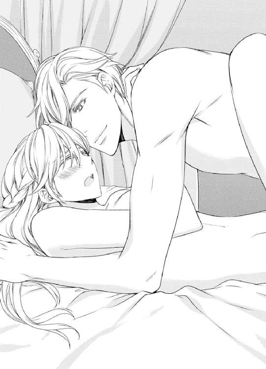
「あっ......ぁあ......っ、んっ......んんっ......はぁ......っ」
彼の動きがだんだん速くなってきた。
身体全体を揺すりあげられ、ステファニーはアレクシスにしがみついた。
抱きついていないと、どこか遠いところへ放り投げられてしまいそうだった。
「気持ち、いいですか？」
「はい。いいです。気持ちいいです」
ステファニーは考える余裕がない。アレクシスの質問をオウム返しに答えたとき、はじめて気付いた。
──これって、気持ちがいいんだわっ!!
最奥を押されるたびに、快感がブワッとばかりにふくらんで、弾けてしまうのではないかと思うほど。
「んっ......はぁ......あぁっ......はぁはぁ......っ、あぁ......」
「なんて......なんて、すごい......！ 君は最高だっ！」
最高なんて言われると、いい気分になってしまう。
身体が芯から揺すりあげられ、前後に振り回される。揺すられた脳裏が、キラキラの幻を見せる。乱暴なほどの勢いが、ステファニーをふんわりいい気持ちにさせている。
「うっ、うっ、そろそろ......」
何がそろそろなのだろう。もう終わるという意味だろうか。
このフワフワとキラキラを、もっともっと味わっていたい。
彼の動きはだんだん早くなってきて、怖いほどの勢いになった。
「うっ！」
王弟殿下はいきなり動きを止めた。
腰の奥で陽根がビクビクッと動き、熱い液体を噴出している。
身体の奥がジワッと熱くなった。
これは射精だ。精液を噴き出しているのだ。
ふんわりふわふわ、いい気分だった。
ステファニーは目を閉じて、甘い快感を味わっていた。
アレクシスが身体を離した。
「ステファニー、大丈夫ですか？」
「はい、大丈夫です」
ステファニーはよろよろと起きあがった。
腰や足のつけ根が痛い。
のろのろと身だしなみを整える。
「近いうちに、ブランシュ家に、正式に結婚の申しこみに行くよ」
「......はい」
「君を僕の妃にしたいんだ」
「...私が......」
まだ夢の中にいるみたいだ。
王子殿下の妃になる？ 私が？ 特技といえばお針だけで、十九歳の嫁き遅れの私が？
うれしくて幸せで困惑する。もったいない。怖れ多い。ひどいどんでん返しが待ち受けていそうだ。
アレクシスがステファニーを抱き寄せた。
「愛している。僕のプリンセス」
たくましい彼の身体に抱きしめられる感触は心地良く、身体の疲れも手伝って、ステファニーは目を閉じた。
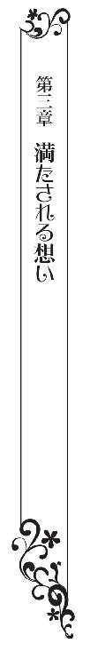
ステファニーは、食堂の窓際のテーブルで、針を動かしていた。
キャロラインにプレゼントするドレスを自分が着てしまったから、違うドレスを縫っているのだ。
型紙は同じだし、手が慣れているので、それほど時間がかからずに縫いあがるはず。
ここはいつもは陽だまりで明るく、好きな場所なのだが、窓の外は雨模様だ。
鈍く垂れこめた雲から、絶え間なく雨の雫が落ちて、ステファニーを憂鬱にさせる。
──あれは何だったのかしら？
ステファニーは、ぐずぐずと考えている。
王宮主催のお茶会で狩人さんと再会した。織りむらのないシルクタフタを仮装に使えるほどだから、裕福な貴族の子弟だと想像していた。だが、ミルクール王家の王子殿下で、王弟殿下だとは思わなかった。
彼に抱かれてしまった。だいそれたことをしてしまい、穴があったら入りたいほどだ。思い出すだけで照れくさくて、逃げ出したくなってしまう。
娶りたいとか、結婚したいとか、嫁にしたいとか言われたのだが、ほんとうだろうか。
あれから三日。
正式に勅使をよこすとアレクシスは言ったが、便りもなければ結婚の申しこみもない。何の変化もない日々が過ぎて行く。
なかったことにされたのだろうか。
不安だった。
フンワリ甘いあの体験は、夢だったのかと思うほどだ。いや、夢のほうがいいのかもしれない。
──もしもほんとうに結婚したりしたら、いじわるなメイドさんが、私をじゃけんにするに決まってるわ。
秘部には棒を飲んだような違和感が残っていたが、それも消えた。
「ハッ！」
ステファニーの物思いを粉砕するような勢いで、気合いの声がほとばしる。
弟のルシアンが剣舞をしているのだ。
雨だから仕方ないのだが、落ち着かないことこの上ない。
いつも食堂の中央に置かれているテーブルは、壁の隅に移動してある。
弟が練習用の木剣を振るうたび、空気がひゅっと鳴る。緊張感で、首の後ろがちりちりする。
「ルシアン、剣舞は自分の部屋でしてちょうだい」
「ごめんごめん。僕の部屋、狭いしさ。剣の練習しないと身体がなまるんだよ。僕は王宮勤めの文官だけど、同時にミルクール王家と国家に忠誠を誓う騎士だからね。もしも戦争が起こったら、王族と国民を守って戦わなくてはならないんだ」
「戦争なんて起こらないよね？」
「うん。今は平和だしね。円卓会議に侍る上級文官も戦争は起こらないって考えてる。でも、僕ら騎士は、身体を鍛えないといけないんだ。何が起こってもいいように。アレクシス王子殿下も剣の練習は熱心でいらっしゃるよ」
「アレクシス王子殿下って、王弟殿下でしょう？ まだ結婚されていないのよね？ どういう方かしら？」
ステファニーは、それとなく探りを入れてみた。
騎士ギルドに所属しているルシアンは、アレクシスと面識がある。
弟なら、王弟殿下の人となりを知っている。
「すばらしい方だよ。男の目から見ても格好よくて、品性高潔な方だ。剣も強いし、頭もいい。ちょっと強引なところがあるけど、王族というものはそういうものだと思うんだ。二枚目でモテモテなんだから、早く結婚して、国民を安心させてほしいな」
「王弟殿下の結婚相手は、どんな方になるのかしら？」
「そりゃ、国益にかなうプリンセスと政略結婚だろ。国交を保ちたい外国の姫君か、国家の重鎮である公爵家の王女殿下、もしくは資産家の令嬢じゃないかな」
「そうよね......」
ステファニーはため息をついた。ステファニーは、外国の王女でもなければ、資産家の令嬢でもない。
「伯爵家の娘だと、妃殿下になれるかしら？」
「うーん。どうだろう。我が国は長子相続を原則としているから、フェルディナンド国王陛下に親王ができたら、王弟殿下の王位継承権は下がるんだ。伯爵家と王弟殿下なら、つりあいは悪くないね。でも、文官としては、国を富ませる相手と結婚してほしいところだね」
「王弟殿下が国益にかなわない娘と結婚した場合、その娘はどうなるの？」
「どうなるんだろう？ 妃殿下は、ファーストレディで、外交官でもあるんだよ。ファッションリーダーでもあるから、国民のあこがれを誘う気品ある美しい姫君でないと勤まらないと思うよ」
国を代表する女性、ファーストレディ、外交官、国民のあこがれを誘う気品ある美しい姫君。
──私には無理だわ。
弟の話は、ステファニーを絶望させた。
「アレクシス殿下が、気品のない貴族の娘と結婚したいとおっしゃったら、どうなるのかしら？」
「王弟殿下は聡明でいらっしゃるから、国益に反するような女性とは結婚なさらないよ」
とどめだった。
ステファニーは重々しいため息をついた。
──私では、妃殿下なんてとても無理......。十九歳の嫁き遅れだし、お針しか特技はないし、美人じゃないし、気品なんてないし......。
悪いほうへと考えてしまうのは、ステファニーの悪い癖だ。
──もしも私がアレクシスと結婚したら、国王陛下や王子殿下や文官や国民やいろんな人たちに迷惑を掛けてしまうわ。
ステファニーを抱きしめたアレクシスのあの熱い手は、本気だった。
だが、ミルクール国と王子殿下のためには、ステファニーは身を引くほうがいいのだろう。
逃避癖が頭をもたげた。
──修道院に入ろう。
アレクシスに抱かれたことを思い出にして生きて行こう。
もしも修道院に入るまでの間に、正式な結婚の申しこみが来たら考え直そう。
だが、きっと、勅使は来ない。
そんな気がした。
「どうしたんだよ。姉さん。珍しいな。王子殿下のことを気にするなんて。......あ、そうか、おとつい王宮主催のお茶会に行ったんだんだよな。もしかして王子殿下にお逢いしたのか？ すてきな方だったから興味があるんだろ？」
「そうね」
「何かヘンだなぁ。姉さん、ずっとぼーっとしてる。お茶会で嫌なことでもあったのか？」
「嫌なことはなかったけど、私には王宮のお茶会は向いてないみたいね」
無理して笑うと、泣きそうになった。
「うっ......」
嗚咽する。涙が零れた。弟が心配そうな顔をした。
「やっぱヘンだよ。姉さん。熱でもあるのか？」
「なんでもないの」
「いつもの思い出し泣きか？ でも、なんか妙だな」
手の甲で涙を拭うが、なかなか涙が止まらない。
「ドロシー！ 母さん。誰か来てくれ」
ルシアンは、パンパンと両手を叩いた。
「お呼びですか？」
ドロシーがやってきた。
「母さんは？」
「奥方様は、舞踊劇にお出かけでいらっしゃいます」
「姉さんの様子が変なんだ」
「ルシアン、大げさよ。体調が悪いだけなの」
「失礼します」
ドロシーのひんやりした手が額に乗った。
「熱はありませんが、お疲れではないのですか？」
「そうかもね」
「ステファニー様、お休みになられたほうがいいですよ。ドクターを呼んでまいります」
「たいしたことないわ。熱もないし、ドクターを呼ぶほどじゃないの。それより、シスターに逢いに行きたいの。お母様が帰ってこられたら相談します」
「ドクターよりシスターって？ まさか修道院に？」
ルシアンが不審そうに聞いた。
ステファニーは、修道院に入ることを嫌がっていたから、なんで急に心変わりをしたのかと思っているようだ。
「そうよ。私は修道院に入ります。私の部屋を、キャロラインさんの部屋にしてね。キャロラインさんも、自分の部屋が必要だと思うから」
「姉さん。どうしたんだよ。急に？」
「急じゃないわ。ずっと前から考えていたの。私の未来は、お嫁に行くか、修道院に行くかの二者択一ですもの」
「ステファニー様。お話はあとにして、今日は薬を飲んでお休みください。こういうときに人生の重大事を決断するのはよくありません」
ドロシーが言った。
「そうね」
ステファニーは膝の上のドレスをテーブルに置いて立ちあがった。
☆
その翌々日。
ステファニーは、目の前にそびえる修道院を見て、息を呑んでいた。
裏口とはいえ、端正された庭と、宗教的美意識が感じられる建物は、神の花嫁であるシスターの屋敷にふさわしく優美そのものだ。
だが、ステファニーには、まるで墓標がそびえ立っているように、おどろおどろしく見えた。恐怖感のあまり、小さなバッグを胸に抱く。
バッグの中には、洗面用具や化粧水や下着の替えなど、身の周りの品が入っている。
──大丈夫よ。怖くない。一日も早くなじまないと。
──修道院からいらないと言われると最後よ。がんばりましょう。
「ステファニー、嫌だったらやめたらいいんだからな」
「そうよ。かわいい私の娘。仮修行でやめてもいいのよ」
「とりあえず十日間だけやってみろ」
両脇に立つ両親が口々に言う。
「大丈夫よ。お父様、お母様。私、がんばります」
シスターになるのは簡単なことではない。まず、十日間の仮修業をして、シスターの適性を見極められる。
もしも十日間で、シスターの適性なしと判断されたら、その修道院から追い出されてしまう。
この修道院は、貴族の娘が多いところで、規律が比較的厳しくなく、自由度が高いと言われている。
奉仕活動でドレスを縫うことができるそうで、それならここでお世話になろうと考えたのである。
もしもこの修道院で適性なしと判断されると、牢屋のような修道院しか行くところはなくなる。そうなると、裁縫を楽しむことは不可能になる。
修道院に行きたいと言った次の日に、仮修行のために修道院を訪問することになるとは思わなかったが、シスター長が幸いステファニーを気に入ってくれ、ちょうど欠員があるからと、とんとん拍子に話が進んだ。
──最後に狩人さんにお別れを言いたかったわ。
十日間だけの仮修業とはいえ、この世の終わりのような気分になっている。
裏口のドアの前には、歳若いシスターが待ち構えていた。
「ステファニー・ブランシュです。はじめまして。お世話になります」
「お待ちしておりました。レディ・ステファニー」
黒衣のシスターがおじぎする。貴族の娘なのだろう。立ち居ふるまいが上品だ。
「どうぞ中へ」
シスターは、一緒に入ろうとした父を押しとどめた。
「申し訳ありませんが、殿方はここまででございます」
「ステファニー、身体に気をつけろよ」
「はい。気をつけます。ごきげんよう。お父様」
心配そうな顔をする父をエントランスに残し、修道院の中に入る。
明るいところから暗いところに入ったから、一瞬視界が利かなくなった。
「やあ。ステファニー、四日ぶりですね」
聞き覚えのある声がした。
「えっ!?」
「お忘れですか。アレクシスですよ」
ステファニーは混乱のあまり呆然としていた。
──なんで男子禁制の修道院に王子殿下がいらっしゃるの!?
ようやく目が慣れてきて、シスターが遠巻きにする中央に立つ、アレクシス王子殿下が見えた。
礼装ではないが、騎士服の彼は、くっきりと大きく見えた。
なぜアレクシスが修道院にいるのか。恋しさのあまり夢を見ているのではないか。
「狩人さん......」
「まあまあ、アレクシス王子殿下。ご尊顔に拝し奉り、光栄至極に存じます。はじめてお目にかかります。ステファニーの母です」
母が膝を折って挨拶する。
さすが伯爵夫人だけあって、礼儀に則ったおじぎだ。
ステファニーもぎくしゃくとおじぎをする。
思いがけないなりゆきに頭の中がぐるぐるして、考えることができない。
「お目にかかれて光栄です。ご子息のルシアンとは、騎士ギルドで顔を合わせますが、お母上とお逢いしたのははじめてですね」
「つかぬことをお聞きしますが、アレクシス王子殿下は、実は王女殿下でいらしたのですか？」
母がズケズケと聞いた。
「お母様っ!? なんてことを言うのっ」
「だって、修道院に出入りしてらっしゃるから」
「男ですよ。正真正銘男です。王族は、神に選ばれて王権を神授されていますから、修道院に出入りすることが可能なのです」
「まあ、そうでしたの。......ステファニー、良かったわね。修道院暮らし楽しそうね。目の保養になるわね。ステファニーの憧れの狩人さんって、王子殿下だったのね」
母が小声でささやいた。
ステファニーは顔を真っ赤にして下を向いた。
アレクシスに聞かれているのではないかと不安になる。
「王子殿下は、そんなにしょっちゅうおいでになるわけではありませんよ。今回がはじめてです」
シスター長がにこにこしながら話す。
王子殿下しか視界に入らなかったので、シスター長がアレクシスの横に立っていることに、今はじめて気がついた。
「私が修道院に来るのは、特別な用事があるときだけです」
「特別な用事でございますか？ ステファニーを娶りたい、って理由だったりしてね」
母が小声でささやいた。
「お母様、はしたないわ」
母のドレスの袖を引っ張って黙ってもらうように頼んでいたときのことだった。
アレクシスから、爆弾発言が飛び出した。
「その通りです。私は、ステファニー・ブランシュ伯爵令嬢に、結婚を申しこむために来たのです」
「きゃあああっ」
嬌声をあげたのは、遠巻きにしているシスターたちだった。
黒いシスター服に身を包み、慎み深く生きているはずの彼女たちだが、中身は普通の娘なのだ。
「そ、そんな......結婚なんて......めっそうもない......」
ステファニーは怯えて後ずさる。
「お茶会では、私の求婚を受けてくださったのに、私がお嫌いですか？ ルシアンから聞いて、あわてて参ったのですよ」
弟のルシアンは騎士ギルドに所属しているため、アレクシスと面識がある。
弟がアレクシスに話したのだろう。
「で、でも、お茶会では、なんというか雰囲気でそうおっしゃっただけで、気の迷いだと思ったのです。勅使を送るとおっしゃったけど、便りも来なかったし」
「結婚するためには、父上や兄上に話したり、文官長を納得させるたり、いろいろと根回しが必要なのです。時間がかかってしまい、あなたを不安にさせてしまいました」
「まあ、でしたら時間はかかってませんわ。お茶会から四日しか経っていませんもの。娘が心配性なだけですわ。ステファニーは、何か困ったことが起こると逃げだそうとしますの」
「お母様......」
「ステファニー、トラブルが起こった時、立ち向かうのではなく、自分から身を引こうと考えるのは、美点ではなく欠点なのよ」
その通りだ。ステファニーは恥じ入るばかりだ。
「お母さんもね。若いときは遠慮がちだったけど、今はずずずいっと前に出るようにしていますわ」
母は豊満な胸を張った。
「私はそのう、お母様のようにあ......」
あつかましくなれません。と言いかけて口をつぐむ。
「ステファニーも私ぐらいの年齢になれば、平気になるわよ」
なりたくないわ、と心の中でだけ思っておく。
「ブランシュ伯爵夫人。私も悪いのです。花を贈るとか、手紙を託すとか、何か方法があったはずですよね。私はそういう心遣いの部分が弱い。やり方が強引だと、兄上からも言われます。失礼いたしました」
「そ、そんな」
「レディ・ステファニー、私はお嫌いですか？」
「いいえ、アレクシス様は好きです。仮面舞踏会で出会ったときから好きでした。王子殿下ではなく、普通の貴族の子弟ならどれほどよかったか。......そのう、私では身分が......」
「あら、ブランシュ家は名門ですのよ！」
母が胸を張った。アレクシスも同意する。
「その通りです。ブランシュ家は由緒ある名家です」
「私では、国益にかないませんわ」
「国益を気にするのは王位継承権のある王族と文官だけです」
ルシアンは文官だ。
なるほど国益を気にするわけだ。
「我が国は長子相続を原則としているので、私の王位継承権は低いです。まだ発表前ですが、ロレイン王妃陛下は妊娠されています」
「まぁ。王子様か王女様が誕生なさるのですね」
母が言った。
「はい。ですから、王位継承権一位は甥か姪です。私がレディ・ステファニーと結婚することによって損なわれる国益など存在しません」
「は、反対される方がいらっしゃるに決まっているわ」
「根回しはほとんど終わりました。皆、歓迎してくれています」
「持参金が......」
「必要ございません」
「いじわるなメイドさんが、私に厳しく当たるのではないでしょうか」
「そんなに心配なら、私が一緒に王宮暮らしをして目を光らせてやるわよ」
「それはやめてくださいっ！ お母様っ」
「もう一度改めて申しこみます。レディ・ステファニー、私と結婚していただけませんか？」
アレクシスは片膝をついておじぎをした。
プリンセスに対する騎士の礼。
きゃああっと嬌声があがった。シスターと母が悲鳴をあげているのだ。
なんとこの人は格好いいのだろう。
ステンドグラスから差しこむ光がアレクシスに当たり、くっきりと切り抜かれたように見える。
神に選ばれ、神に愛された王子殿下。
顔がかぁっと熱くなり、胸が早鐘を打った。
──こんなにもすてきな人に、私は必要とされているんだわ......。
胸が熱くなるほどにうれしい。
「喜んで」
ステファニーは、王子殿下に向かって手をさしのべた。
殿下はその手を取ると、手の甲にキスをした。
拍手が響いた。
シスター長も、シスターたちも、母もいっせいに拍手している。
ステファニーは、晴れがましさを味わっていた。
☆
「王子殿下、妃殿下。おめでとうございます」
「末永くお幸せに」
祝福の声が木霊する中を、天蓋のない馬車が粛々と進む。馬車は四頭建てで、その前後を正装の近衛兵が騎馬で随行している。
ステファニーは馬車に座り、笑顔を浮かべて手を振っていたが、夢の中にいるみたいだった。
こんなに早く結婚式になるとは思っていなかった。
修道院でのプロポーズからわずか三カ月後の式である。
──早く式をあげないと、ステファニーが逃げだしますからね。
アレクシスはそう言って、早く式を挙げるようにと文官たちをせっついたそうで、弟のルシアンが忙しがっていた。
諸外国の要人を招待したり、パレードの警備の配置をしたり、文官は多忙を極めたそうだ。
結婚式を早めたことと、王弟殿下の結婚式ということで、小規模な祝典になったそうだが、ステファニーにはむしろ好ましいことだった。
神殿でついさきほど式を挙げたばかりなので、今はもう正式な夫婦であり妃殿下である。
神殿から王宮までの街道は、両脇に国民が並び、ミルクール国の国旗と王族旗を振っている。百合を意匠化した王族旗は、ミルクール一族の紋章だ。
暑くも寒くもないいい天気で、空はロイヤルブルーに輝いている。
「なんて美しいプリンセスなんだろう」
「王子様もすてき。あのおふたり、お似合いね」
祝福の声が木霊する。
──美しいのはドレスと化粧のせいだわ。きっと。
ステファニーは、白のウエディングドレスを着ていた。
ドレスの仮縫い、結婚式のリハーサル、メイド長による礼儀作法の勉強会、親族の顔合わせの晩餐会、毎日予定が入っているようなありさまで、目の回るような忙しさだった。
ほんとうはドレスは自分で作りたかったのだが、とてもそんな余裕はなかった。
スレファニーが縫ったのはウエディングベールだけ。
デザイン画を描いて、型紙を起こすところまでは自分でやったのだが、あとは王宮のお針子が縫ってくれた。さすがに縫製が上手で、着心地がいい。
化粧は嫌いだと思っていたのだが、王宮の化粧担当のメイドがメイクし、金髪をアップにすると、びっくりするほど綺麗になった。華やかさと晴れがましさに気後れする。
「なんだか照れくさいわ」
「主役はステファニーだよ。今日の君は美しい」
隣席のアレクシスがささやいた。
「ふふっ」
笑うと街道からひときわ高い声があがった。
「きゃーっ。妃殿下、笑ってる。かわいい」
「王子殿下と仲良さそうでいらっしゃるわね」
「いいなぁ。すてき」
やがて王宮が見えてきた。馬車は城門へと入っていく。
馬車を降りると、待ち構えていたメイドたちがわらわらと寄ってきた。
「妃殿下、お召し替えです。こちらにどうぞ」
「王子殿下はこちらに」
別々の部屋に案内され、ドレスを着替えさせられる。
ピンクと白のチュールレースが重なった清楚なデザインだ。リボンを花にして飾りつけたもので、リボンの花はステファニーが作った。
「化粧を直します」
メイドたちの手で結いあげてあった髪が下ろされ、髪にもリボンの花が飾られる。
「お肌のきめが細かくていらっしゃるから、化粧ののりがいいですね」
「色白でいらっしゃるから、ピンクの口紅がお似合いになりますね」
「なんて美しくていらっしゃるのかしら」
メイドたちに褒められて、恐縮しながら礼を言う。
「ありがとうございます。お姫様みたいでうれしいわ」
「まっ。ふふっ。妃殿下はプリンセスでいらっしゃるのですよ」
「ああ、そうだったわ。忘れてしまうの」
「かわいいお姫様でいらっしゃいますわね」
メイドたちの手によって、髪にティアラを乗せられた。髪を巻き、メイクした顔はびっくりするほど綺麗に見えた。リボンの花で飾ったピンクと白のチュールドレスがよく似合い、いつもの自分ではないように思える。
「わぁ。すごく綺麗になったわ。ありがとうございます」
「どういたしまして、素材がいいからですよ」
メイドたちに送り出されてドアの外に出ると、アレクシスが待ち構えていた。
アレクシスは肩から金のモールが下がった騎士礼装だ。勲章を胸につけ、帽子を乗せている。
「お似合いですわ」
彼はほっそりして見えるのだが、剣で鍛えた青年に特有の、がっしりした身体つきをしているので、腰に帯を巻いた騎士礼装がよく似合っている。
「今日の君はいちだんと美しい」
どちらともなく手をつないで隣室に向かうと、正装のフェルディナンド国王陛下とロレイン王妃陛下が待ち構えていた。
車椅子のボールドウィン前国王もいる。
ステファニーは、前国王と国王、それに王妃に向かってていねいなおじぎをする。
「おめでとう」
両親とルシアン、それにキャロラインがいる。キャロラインはステファニーの手作りドレスを着ている。
「いや、めでたい。ステファニー。父さんはうれしいぞ」
「おめでとう。綺麗よ。さすが私の娘ね」
「お姉様、このたびはおめでとうございます。お綺麗でいらっしゃいますわ」
父と母とキャロラインが交互に言った。
「まさか僕よりも姉さんのほうが早く結婚するなんてなぁ。びっくりした」
「私もびっくりしてるわ」
「皆様方、そろそろバルコニーへ」
文官が促す。
王族のお出ましを告げるファンファーレの音が響き、わぁっという歓声があがった。
アレクシスの腕を取り、ステファニーがバルコニーに出ると、歓声と拍手が起こった。
「ステファニー・ブランシュ・ミルクール妃殿下、おめでとうございます」
「ご成婚おめでとうございます」
「ミルクール王家に栄光あれ！」
王宮の中庭には、着飾った国民がいっぱいいて、皆がステファニーを見上げている。
ステファニーは圧倒され、言葉を失った。
パレードのとき、圧迫感がそれほどなかったのは視線が水平だったせいだろうか。何百人もの人に見上げられ、拍手と歓声で迎えられるというのはまったくはじめての経験でひるんでしまう。
「手を振ってあげてくれ」
「は、はいっ」
おずおずと手を振ると、歓声がひときわ大きくなった。
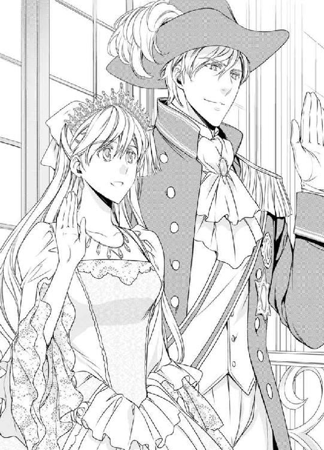
ドロシーがいることに気がついた。
ブランシュ家のメイドで、ステファニーの味方だった。おいしいお茶を淹れてくれた。家を出るとき、ドロシーからお祝いの花をもらったので、ステファニーは自分の宝石入りのネックレスとハンドメイドのポーチをプレゼントした。
──ステファニー様、どうかお幸せに。
ドロシーが言ってくれた言葉が耳に蘇る。
「自信を持ってください。ステファニーは美しい。私の自慢の妻です」
抱き寄せられ、唇を重ねられた。
アレクシスのひんやりぷるぷるした唇は、オレンジの味がした。
ロイヤルキスに歓声がひときわ大きくなる。
前国王も、国王陛下も王妃陛下も、みんな拍手している。
ステファニーは、雲に乗るような気分を味わっていた。
☆
「疲れただろう？」
「はい。でも、心地良い疲れです」
ステファニーは、アレクシスと向かい合う席に座り、彼の手でグラスに注がれる琥珀色の液体を見つめていた。
神殿での結婚式からはじまって、神殿から王宮へのパレード、バルコニーで国民に挨拶をしたあと、晩餐会と続いた。
諸外国の王族や要人、貴族からお祝いを言われた。
長く続いた祝祭がようやく散会となったのは、夜も更けた頃である。
ティアラは外され、化粧を落とした素顔に白いナイトドレスだが、まだ身体に晩餐会の賑わいが残っている。
「明日から三日間は離宮暮らしだよ。ようやくふたりきりになれるね」
「楽しみです」
王弟殿下であるアレクシスは、フェルディナンド国王陛下の補佐役として、政務の一端を担っている。
さらに騎士ギルドの一員であるため、昼間は政務を執り、夕方からはギルドで貴族の子弟と一緒に剣の練習をして汗を流す。
安息日以外は、そんな毎日が続くので、アレクシスは強引に三日間の休みを取ってくれた。
ミルクール王国の南の端、フォトローダ地方にある王家の離宮で、ふたりきりで過ごす。
新婚旅行の代わりだ。
王宮はたくさんの人がいて、どうも落ち着かないので、ステファニーは新婚旅行を楽しみにしていた。
「どうぞ」
「ありがとう。いただきます。......あら？ これ、お酒？」
「シャンパンだよ」
流線型のグラスの中で泡が弾ける琥珀色の液体は、心地良く喉を滑り落ちていき、ステファニーの内側を熱くさせた。
「甘くておいしいわ」
「君は晩餐会でもアルコールを飲んでなかったから、少しぐらい飲んでもいいと思う。シャンパンは祝いの酒だからね」
「アレクシスはたくさん飲んでましたね」
「たしなむ程度だよ。騎士ギルドで、みんなで飲みに行くんだ」
「王子殿下が......ですか？」
「私は王弟殿下だよ。今は王位継承権二位だが、義姉さんに子どもが生まれたら継承権はさらに下がる。晩餐会が仰々しくてびっくりしたかもしれないけど、ミルクール国は小さな国だし、気楽にやってくれたらいいよ。ああ、そうそう、妃殿下には大事な役割があるんだ。お茶会や舞踏会を開くとき、ゲストを歓待してほしいんだ。招待客は文官が決めるから」
お茶会と舞踏会は、貴族の子女の出会いの場になっている。
ステファニーがアレクシスと知り合い、愛し合って結婚したのも、仮面舞踏会とお茶会がきっかけだった。
「未婚の貴族の出会いを作る大事な役割ですね」
「それだけじゃなくて、貴族との親睦を深め、動向を探る場でもあるんだよ。彼らの話をよく聞いておいてほしいんだ。金回りのいい貴族がいるって噂があって、文官に命じて調べさせたら、領地の税を規定より多く取って差額をポケットに入れていた、なんてこともあったよ」
「責任重大ですね」
「気楽にやってくれたらいいよ」
「......ひっく」
しゃっくりが出た。
あわててグラスを置く。
「すみません。私、アルコールを飲むと、しゃっくりがでるんです」
「あはは。かわいいなぁ。ステファニーは。それで飲まなかったのか。お酒が飲めないわけじゃないんだね」
「はい」
アレクシスがグラスを煽った。そのままで唇を合わせてくる。
喉にシャンパンが滑り落ちていく。
アルコールを口移しで飲まされて、驚きのあまりしゃっくりが止まってしまった。
「おいしいだろう？」
「はい。おいしいです」
アレクシスはもう一度シャンパンを口移しで飲ませた。ごくっと喉が鳴った。
「いやだわ。はしたない。失礼を」
「あはは。恥ずかしがるステファニーはかわいい。もっと恥ずかしがらせてやりたくなった」
アレクシスの手が伸びてきて、腋の下や脇腹をくすぐった。
立ちあがって逃げるが、彼が追ってきた。
「きゃあっ。やだっ！ くすぐり返してやりますわ」
くすぐりあいっこになってしまった。
きゃあきゃあとはしゃいでいたら、ベッドに押し倒された。アレクシスの整った顔が迫ってきて、ちゅっとキスをされた。
「かわいい私の奥さん。これからずっと一緒だね」
「はい。いい妃殿下になれるように努力します」
「今のままの君が好きになったんだから、無理しなくていい。王妃はさすがに大変だけど、王弟殿下の妻の役割はそんなに厳しくはないんだ。美しいドレスを着て式典に出て、国民のあこがれを誘うぐらいかな」
「私にできるのでしょうか？」
「もう黙ってくれ。せっかくの初夜なんだから」
──初夜......。
唇が合わさった。彼の舌先が口唇に入ってきて、ステファニーの舌を絡め取る。
「んっ......」
シャンパンの味のする甘いキス。
ディープキスは優しくて、それでいて熱烈にステファニーの唇を奪う。まるでアレクシスの性格を表しているようだった。
「応えてきた」
「え？」
「ステファニーは、私がキスをしても、されるがままだった。でも、今は、応えてきた」
「失礼しました」
「私は喜んでいるんだよ。君が乱れてくれるとうれしい」
乱れるなんて恥ずかしい。気持良くても我慢したい。
再び唇を奪われる。舌先が触れあうたび、身体の芯にジンと熱い戦慄が走る。
彼のキスにおずおずと応えると、ふわふわと気持ちよくなってくる。
「んっ......んっ......」
漏れ出る吐息さえもったいなく思えて、ステファニーはさらに深いキスを続けた。
送りこまれた唾液を飲み干す。
彼の大きな手が襟から中に入り、胸をいじってきた。ナイトドレスはボタンがなく、脇腹のヒモで結んでいるだけなので、襟がすぐにゆるんでしまう。
「あぁ、いや、恥ずかしい」
ナイトドレスはちゃんと着ているのに、胸が丸出しになってしまい、ステファニーは恥ずかしさにうめいた。
「吸いつくみたいな綺麗な肌だ。ステファニー。愛している。私の奥さん」
剣の練習をかかさない彼の手は、見た目と違ってごつごつしている。その手が繊細に動いて、ステファニーから官能を引き出していく。
首や頬にキスをされ、耳にフッと息を吹きかけられた。
「あぁ......」
背筋にゾクッと戦慄が走り、指先までも痺れてしまう。
キスの位置が下がってきた。
首から鎖骨、胸の谷間と移動してきた唇は、乳首にちゅっとキスをした。ひんやりした唇が乳首を捉え、舌先で弾くように動く。
「ん......はぁ......あぁ......」
ステファニーは、両腕で彼の頭を抱いて悶えた。
二の腕に当たる髪のさらさらが心地好かった。
アレクシスは、交互に乳首を吸った。乳首をちゅっと吸われると、鋭い快感が身体の芯を走り抜ける。
「あぁ......んっ......はぁっ......はぁ......あぁ......」
ステファニーはとろんとなっていた。
お茶会での初体験は、驚きと困惑と罪悪感で、気持良さに浸れなかったが、今はただ純粋に気持ちがいい。
身体が溶けていきそうだ。
秘部は絶え間なくあふれる蜜液でどろどろになり、下腹の奥がきゅんと疼く。
キスの位置が乳房の真ん中から鳩尾、お腹からお臍へと下がっていく。
ステファニーはあわてた。
このままだと花芯にキスをされる。
「ああっ。だめぇっ」
それは彼に悪い気がして、ステファニーは夫の腕の中で横に転がってうつぶせになった。
背筋をれろっと舐められて、ひゃうっと妙な声が出てしまう。
再び仰向けになると、アレクシスの頭を肘で打ってしまう結果になった。
ゴンと音がして、肘にびりっと来た。
「きゃあっ」
「うっ」
「大丈夫ですかっ!?」
「あはは。つ、妻に肘打ちされるとは思わなかった」
アレクシスは笑った。
ステファニーも笑う。
「ふふっ、ごめんなさい。......だって、そのう、恥ずかしいんですもの」
「こうしてやる」
手首をつかまれて手首を重ねられ、タイでぐるぐる巻きにされた。
手を動かすとすぐにほどけてしまいそうなゆるい縛りだが、手首が拘束されたことで言い訳ができた気分になる。
ナイトドレスの裾に手が入り、ショーツを取られた。
うつぶせにされ、腰を持って引きあげられる。
肘と両膝で身体を支えている状態になった。裾をめくられて、お尻が丸出しになる。
「い、いや......こんな姿勢、......恥ずかしい」
肘をついた四つん這いでお尻を突き出しているのだから、恥ずかしさは今までにも増して強い。しかも遊びのような縛りとはいえ、手首を拘束されているのだ。
「恥じらっている君はかわいい」
彼の気配が近づいてきた。この姿勢だとシーツしか見えないから、何をされているのかわからない。腰の脇を持たれ、秘裂につるんとしたものが当たった。
彼は、先端で花唇を前後になぞりはじめた。
「あっ、あぁっ......んっ、んんっ」
もどかしい刺激にじりじりする。下腹の奥がキュンとして、身体の奥深いところがむずっと来て、熱い蜜液がジワッとあふれる。
「はぁ......はぁはぁ......んっ、んっ......アレクシス......っ」
早く入れてほしいような、今すぐにでも止めてほしいような気分になり、どうしていいかわからない。
蜜液がとろとろあふれ、秘部が熱い。
下腹の奥がキュンと疼く。
花襞が無意識にうごめいた。
──早く入れて......。
だが、言えない。恥ずかしい。
アレクシスがいきなり言った。
「困ったな」
「え？ 何ですか？」
「ステファニーを焦らしてやろうと思っていたが、君が欲しくて欲しくて、我慢できなくなってしまった」
「私もです......」
「そうか。気が合うな」
「夫婦ですから」
「あはは。そうだな。......ああ、もうだめだ......。君が欲しい！」
アレクシスの大げさな口調がおかしい。
「ふふっ」
ステファニーは噴きだした。
──いやだわ。私ったら、初夜なのに、笑ってばっかり。
アレクシスと身体を合わせる行為は楽しい。
先端がずぶっと秘口にはまりこんできた。熱くて硬い、たくましいものが身体の奥へ奥へと沈んでいき、やがて最奥を突きあげて止まった。
「あぁっ」
ステファニーはぶるっと震えた。
正常位とは当たるところが違うのか、尾骨の内側がじわっと熱い。
すごい深さだった。身体をいっぱいにされたという感じがする。
空虚だったところを満たされて、甘いため息がでてしまう。
「はぁ......あぁっ、あぁ......き......」
気持ちい、と言いそうになり、あわてて口をつぐむ。
アレクシスがぶるっと身体を震わせた。
「うっ、君の、ココは......最高だね......っ！ くっ、よ、よじれる......っ」
「嫌です！ 言わないでっ!! 恥ずかしい」
「う、また、締まった」
「言わないでくださいっ」
「あはは。そんな、嫌がらないでくれ。君はかわいくて心根が美しいばかりか、ココも最高だね。愛しているよ。私の奥さん」
秘部の性能を褒められても、喜んでいいものかどうかわからないが、ステファニーがアレクシスをいい気持ちにさせているというのはうれしい。
「よかった、です。私だけ、気持ちよくなると、アレクシスに悪いから」
「うっ、私はこんなに興奮しているのに、......ううっ......君は冷静だね。......ステファニーを、感じさせて、うぅっ、やりたくなった」
彼はゆっくりと腰を動かしはじめた。
灼熱の楔がステファニーの身体の内側を穿ち、最奥を押して後退していく。
確かめるような動きだったが、身体の奥に圧力にズンと響くたび、声が漏れる。
「んっ......んっ......あぁ......っ」
身体が前後にゆさゆさと揺すりあげられる。
手首を縛られているせいで、身体を支えるものがない。
頭がシェイクされそうだった。
手首を縛られているので、身体を支えることが難しい。ステファニーはシーツをつかんで悶えた。
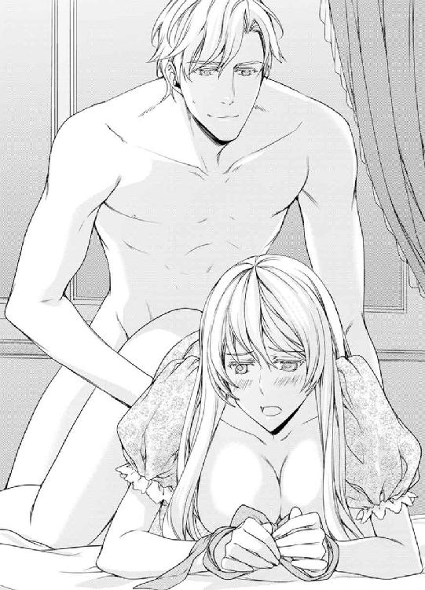
「君のココは、うっ......熱いな......っ。ぬるぬるだ......」
「アレクシスの......も、大きくて......熱くて......あぁ......溶けそう......っ」
彼の楔は大きくて力強く、乱暴なほどの勢いで、ステファニーの膣内を出入りする。とくに、奥を突かれるときがたまらなかった。
先端が子宮口を押しあげるとき、身体の芯に重くて太い戦慄が走り、背筋がぶるぶる震えてしまう。
はじめてのときは、とまどいと驚きと罪悪感があった。
だが、今は、ただ純粋な気持良さと安心感がある。
彼になら、身体を任せられる。彼にいいようにされたい。
初夜だから。新婚だから。夫だから。
信頼と愛情が、快感をいっそう強くさせていく。
「んっ......あぁっ......んん......っ」
目の裏がちかちかして、意識がフワフワと空に浮く。ステファニーは陶酔のただ中にいた。
「ステファニー、腰、あげてくれ。抜けそうだ」
あまりにも気持ちがよくてぼんやりしていたら、秘芽にするどい快感が走った。
「きゃあっ！」
「ご、ごめん。腰が下がっ......うっ、し、締まるっ」
ぼんやりしていたら、腰がずるずる下がってしまったらしい。彼の身体の一部が抜けそうになり、彼は手を前に回して腰を引きあげたのだった。
そのさい、アレクシスの指が秘芽を押さえた。
秘芽をこりっと押さえた指から、肌の下の浅いところを鋭い快感が走り抜けていく。
「あぁあああぁっ」
結合部に意識が行っていたから、陰核に受けた刺激は強烈だった。
爪の先まで痺れてしまう。
「ウッ、し、締まるっ！ ううっ」
彼がググッと肉の楔を打ちこんできて、そのまま動きを止めた。
最奥に熱い何かが広がっていく。
射精しているのだとはっきりわかる。
その瞬間、目の裏で散発的に起こっていたちかちかした光の玉が、大きなカタマリになり、ぱんと音を立てて弾けた。
「あぁああぁっ」
意識がフウッと薄れていく。
どこか遠くに行かされそうだ。
ステファニーは身体を硬くしていたが、彼が楔を抜くと同時に、身体の芯が外れたようになり、ベッドに力なく腹這いになった。
運動したあとのように身体がぐったり疲れていた。
「すまない。ステファニー。縛ったりして」
彼が手首のタイをほどいてくれた。
手を引っ張るとすぐにほどけてしまいそうな緩い縛り方だったのに、言い訳ができた気がして、そのままにしていた。
だが、アレクシスが恐縮している様子がかわいくて、拗ねてみせた。
「そうね。痛かったわ」
上目遣いで怨ずると、彼が手首をさすってきた。
「悪かった」
「嘘です。ぜんぜん平気でした」
「からかったのか、あはは。ひどいな」
ひどいと言いながらも、夫は楽しそうに笑っている。
「ふふっ。私たち、笑ってばっかりだわ」
「大好きだよ。私の奥さん」
「大好きです。アレクシス」
添い寝してきた彼が、ステファニーのおでこにチュッとキスをした。
ステファニーはだるい身体を起こして、みだしなみを整えた。
秘部から精液と蜜液が混ざったものが垂れているのを、布で押さえる。
「赤ちゃん。できるかしら」
ひとりつぶやくと、ベッドに仰向けになっている夫が言った。
「できたらうれしいけど、別にできなくてもいいよ。私はステファニーが欲しいから結婚したんだ。世継ぎが欲しいから結婚したわけじゃない」
ステファニーはベッドに乗り、彼に身を寄せた。
「明日から離宮暮らしだ」
「ええ。楽しみです」
腕枕で夫の胸に頬をスリスリしていると、穏やかな眠気がやってくる。
彼の体温が伝わってきて心地良い。
夫となった男性の規則正しい寝息を聞きながら、ステファニーは眠りについた。
明日からの離宮行きに思いを馳せながら......。
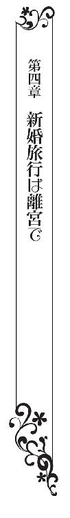
馬車の揺れが止まった。
「王弟殿下、妃殿下。到着しました。どうぞ」
御者の手によって馬車のドアが開かれた。
「私が先に下りるよ」
いつもはレディファーストでステファニーに先を譲ってくれるのだが、馬車から降りるときはアレクシスが先に出て、手を取ってくれる。
「どうぞ。私のプリンセス」
差し述べられた彼の手を握り、ステップを下りる。
「なんてかわいくて豪華なお城」
思わず声が出た。
ミルクール王宮は壮麗なお城だが、堅牢な要塞であり、文官や武官の仕事場でもあり、同時に王族の起居する場所でもあるため、どこか生活感がある。
だが、池のほとりに立つ離宮は、童話の一場面のようにかわいらしく、まるで美術品のようだった。
ミルクール王家の持ち物で、王族が避暑のために訪れる別荘地だ。
白のお城が、池の青い湖面に映って美しい。
白鳥が数羽、湖をすいすいと泳いでいる。
「王宮と違って小さいし、使用人もじいやとばあやのふたりだけだから、そんなに豪華じゃないよ」
「私はそのほうがいいわ。だってアレクシスとふたりきりになれるもの」
扉が開いた。農夫のような格好をした、優しそうな初老の女性が立っていた。
「アレクシスぼっちゃん。若奥様、お待ちしていました」
「ばあや。元気そうだね」
「ええ。ぼっちゃんも立派になられて」
「紹介するよ。僕の妻だ」
アレクシスはいつも自分のことを私と呼ぶのだが、気を許しているときは僕になる。
「ステファニー・ブランシュ・ミルクールです。はじめまして」
「ご結婚おめでとうございます。かわいらしいお姫様でいらっしゃる。ばあやはうれしいです」
「じいやは元気かい？」
「夫はボートがすぐに使えるように、オールを磨いています。呼んできましょうか？」
「いいよ。僕がいくよ」
「でしたら、ばあやはアフタヌーンティーの用意をしてきます」
「おーい。ばあや、どこに行くんだい？」
「お茶に浮かすミントの葉を摘んできます」
自分で扉を開けて離宮に入ると、キラキラした色彩が出迎えた。
壁一面がステンドグラスになっていて、差しこむ陽光がグラスの色を含んで華やかに踊っている。青にピンクが重なって、花が揺れているようにも見える。
掃除は行き届いていて、テーブルには花が飾られ、ウエルカムフルーツが置かれている。ひとけがないところがうれしい。
「すてきね。こんなドレスを作りたいわ」
「んっ？」
「光がキラキラ。すごく綺麗。透明感のあるパステルなんて最高。明るい水色で、ピンクが入っていて、チュールレースで優しい色にして、回転するとふわっと裾が翻るドレスよ」
「いいね。作って、美しく装ってくれ。お茶会や舞踏会で、綺麗なドレスを着て、招待客を歓待してほしいんだ」
そうだった。妃殿下はファッションリーダー。
正直なところ、人の前に立つのは苦手だが、慣れていかなくてはならないのだ。
「がんばります」
「がんばらなくていいよ。気楽にやってくれ。僕の奥さん」
抱き寄せられ、チュッとキスをされた。
「ええ、あなた」
彼に抱きついて甘えていたとき、玄関先で声がした。
「荷物はこちらに置いておきますよ」
「ありがとう。気をつけて」
御者とばあやさんの会話だ。
恥ずかしくて、パッと抱擁をほどいてしまう。
アレクシスも同じだったらしく、照れくさそうな顔をしている。
照れくさい空気をふりほどきたくて、明るい声をあげる。
「散歩をしたいわ。池が綺麗だから」
「そうだね」
ふたりで手をつないで歩き出す。
池は青く透明で、陽を弾いてキラキラしている。端正された芝生には、黄色やピンク、赤や紫の花が咲き乱れている。
吹き過ぎる風が爽やかだ。
フォトローダ地方は、王都から馬車でわずか二時間ほどなのに、風光明媚で閑静な別荘地だ。
「綺麗ね。すてきだわ」
ブランシュ家は貴族とは名ばかりの貧乏伯爵だ。昔は避暑地に別荘があったそうだが、とうに手放していて、夏の暑い時期も屋敷で過ごしていた。
離宮とはいうものの、お城のような白亜の宮殿。青く澄んだ池、美しい庭園、青い芝生。
暑くも寒くもなく、池の端を歩いているだけでうっとりする。
白い木材でできた船着き場があり、白いボートが浮かんでいる。青い池に浮かぶ白いボートは、絵のような光景だ。
「ボートに乗ったことはあるかい？」
「いいえ」
「乗ってみようか？」
「乗りたいわ。でも、なんだか怖いわ」
「大丈夫だよ。じいやが手入れしてるから。それにあの池、深くないんだ。かりにボートがひっくり返っても、僕がステファニーを助けるよ」
「だったら乗ってみようかしら」
アレクシスは、屋敷の裏側に回りこんだ。管理人の家だろうか。木造の小屋が目立たないところに建っている。
「じいや、いるかい？ ボートを使いたいんだが」
声を掛けると、小屋から人の良さそうな老人がでてきた。
「アレクシスぼっちゃん。何年ぶりでしょうか。このたびはご結婚おめでとうございます。かわいいお姫様でいらっしゃいますなぁ」
「あはは。じいや。久しぶりだね。妻のステファニーだ」
「ステファニーです。はじめまして」
じいやはオールを選び出すと、ボートにセットした。
「あのヤンチャ王子が奥さんをもらうなんて、じいやはうれしゅうございます。早くお子さんを作ってくだされ」
「あはは。そうだな」
ヤンチャ王子扱いされたアレクシスは苦笑している。
「ステファニー、おいで」
先にボートに乗りこんだアレクシスが、ステファニーに向かって手を差し出した。
「君は奥に座ってくれ」
「怖いわ」
おそるおそるボートに乗りこむ。
「急に立ちあがらないでくれよ。座ってるぶんには安全だけど、立つとバランスが崩れてひっくり返るよ」
ボートは思っていたよりも安定感があり、ひっくり返る心配はなさそうだ。
アレクシスがオールを漕ぐと、ボートはすいすいと進みはじめた。
「きゃあっ。動いてるわっ！」
「そりゃ動くよ」
避暑の経験がないステファニーは、動くものといえば馬車しか知らなかったので、池の上を滑るように走っていくボートは驚きだった。
池を渡る爽やかな風が頬を撫でる。
「速いのねっ。楽しいわっ！ 白鳥がいるわ。すごく綺麗。競争してるみたいに泳いでる。すごい。滑るように動くのね」
「あはは。楽しそうだね。よかった」
ボートの動きが止まった。
アレクシスがふーっとため息をつく。
「そんな残念そうな顔をしないでくれたまえ。ちょっと休憩だ」
彼のたくましい腕に汗が浮かんでいる。王子殿下が、ステファニーを楽しませようとして一生懸命になっていることがわかり、胸の奥がほこほこと温い。
「汗が......」
ハンカチで彼の額を押さえたら、アレクシスのたくましい手がステファニーの手を握ってきた。
手を取り合って、池の真ん中でゆらゆらしているボートに乗っていると、この世の中でふたりきりという気分になる。
──なんて美しい人なのかしら......。
ステファニーはアレクシスに見とれた。
整った顔立ちは、名人の手による彫刻のように美しい。この造作の優れた男性が、ステファニーの夫なのだ。
「君はなんて綺麗なんだ」
感に堪えないとばかりの口調で言われ、ステファニーは笑いだした。
「偶然ね。同じことを考えていたの。私の夫は、なんて綺麗なのかしらって」
「僕は見かけが綺麗だと言われると不愉快になるんだが、僕の奥さんに言われるのはまんざらじゃないね」
「私は自分が美しいなんて思わないけど、あなたに言われるのはうれしいわ」
「困った」
「え？」
「君が欲しくなったじゃないか」
ステファニーは、かっと顔を赤くさせた。
「そ、そうね。困ったわね」
「テニスや乗馬で楽しく過ごすつもりだったんだよ」
「いいわね。乗馬、教えてください」
「あはは。ステファニーの性格だと、そう言うと思っていた。乗馬はきっと好きになると思うよ」
「私の性格......？ 私は困ったことが起こると立ち向かうのではなく逃げ出して......手芸とお裁縫が好きで......。私は引っこみじあんで、地味な性格なのに......」
「ステファニーは、気立てが良くて、気配りができて、元気の良い、積極的なレディだよ」
「そ、そうでしょうか......」
頭の中がぐらぐら揺れる。
自己評価と違うことを言われて困惑する。
「私は王子殿下につりあいますか？」
「もちろんだよ。ずっと僕の側にいてほしい」
アレクシスの綺麗な顔が近づいてきて、チュッとキスをされた。
太腿に手を置かれ、サワサワと撫でさすられる。ドレスをめくられ、膝と太腿が丸出しになる。
「だめです。アレクシス。そういうのはふたりきりのときに......」
「そうか。わかった。だったら......」
向かい合う席に座る彼は、靴を脱ぐと、足を伸ばしてきた。ソックスを穿いた足指が、ステファニーの膝の合わせ目に入った。びっくりして膝を緩めたところ、彼の足指が秘裂をぐっぐっと押してきた。
「だ、だめ......。アレクシス......。あぁ......」
下穿きの上からだったが、秘裂を圧迫される感触は心地良く、顔から火が出そうなほどに熱い。
「そんな色っぽい顔をしないでくれたまえ。じいやが見てるよ」
ステファニーは、あわてて表情を繕ったが、下腹の奥がじわっと熱くなった。
「はぁ......はぁ......だ、だめ......」
彼の足指は繊細に動き、秘芽を押した。下穿きの布越しとはいえ、敏感なところをいじられて、腰がぶるっと震えてしまう。
「んっ......。足で、なんて......いや......」
「わかった。手でいじってあげよう」
アレクシスが場所を移動し、ステファニーの横に腰を掛けた。
そして、ステファニーの肩を抱きながら、太腿に手を乗せ、スカートをめくってくる。
下穿きの中に入った手は、秘芽を捉え、指先でくるくると丸めるようにいじりはじめた。
「んっ......はぁ......はぁ......っ。い、いや......恥ずかしい」
「大丈夫だよ。誰にもわからない」
ボートは船縁が高く、座るところが低いので、秘部がいじられていることは誰にも見えない。新婚夫婦が肩を寄せ合っているようにしか見えないだろう。
下穿きの中に入った手は繊細に動き、敏感な陰核をいじり、花びらをヒラヒラさせ、やがて秘口へと入りこんだ。
「んッ！」
ステファニーは、腰をひねって逃れようとしたが、肩を抱いていた手が胸に移動し、ふくらみをキュッと握った。
「あぁ......」
立ちあがろうとしたが、急に立つとバランスが崩すと言われたことを思い出して思いとどまる。
「いや......、人に、見られ......ます......」
「そうだな。見られないところだけにしよう。足をもっと開いてくれ」
ステファニーは言われるままに下肢を開いた。
アレクシスは秘芽をいじりまわした。
指の腹で、陰核をなぞるように動かしているだけだが、指紋のザラザラにさえも感じるほど、身体が敏感になっていた。
「あっ、あぁ......」
ヒリヒリした戦慄が皮膚の下の浅いところを走り抜け、つま先から抜けていく。
痺れるような快感に、身体がブルブル震える。
「そんな顔をしていても、ステファニーは美しい」
耳に息を吹きかけられるようにささやかれ、身体がゾクッとした。
強い刺激は、だんだんに慣れてくる。
まるでシャンパンを飲んだみたいに、甘い刺激に酔いはじめた。
「気持ちいいかい？」
「はい。気持ち、あぁ......いい、です......」
快感はふくらむようでふくらまず、ステファニーはただ、執拗なほどの秘芽なぶりに耐えているだけだ。
「そうか。それはよかった。イかせてあげよう」
彼は、秘芽を人差し指と親指で挟むと、陰核をぺたんこにするようにして力を入れたのだ。
ビチュッと蜜液が噴き出して、目の裏がチカッと光った。
「んんっ！ んんんっ!!」
ステファニーは悶えた。
痛いほどの快感が身体に満ちて、あふれそうになってしまう。
視界に映る湖畔の景色さえも曇って見えるほどの快感に襲われて、ステファニーはぶるぶる震えた。
空がやけに青いなと思いながら見ていると、パンッと青いカタマリが破裂し、光の雫となった。きれいな幻覚にうっとりしていたら、フッと意識が途切れた。
「ステファニー、起きてくれ」
揺すり起こされて、はっと気付くと、ボートは船着き場に戻っていた。
「私、眠っていたんですか？」
「失神していたんだよ」
「失神？」
そうだった。夫の執拗な秘芽なぶりに耐えきれなくなって、頭の中がぱんと音を立て、ふわっとなって......。......そして失神したのだ。
あわてて膝を見るが、スカートは直されていて、ペッティングにいい気持ちになっていたことなんてわからない。
じいやさんが駆け寄ってきて、ボートのロープを船着き場にくくりつけた。
「アフタヌーンティーの用意ができております」
「ありがとう。じいや」
先にボートから下りたアレクシスが、手を差し出してきた。
「どうぞ。僕のお姫様」
高貴な人なのに、気配りがうれしい。
「はい。私の王子様」
彼の手を取ってボートを下りる。
「今晩は寝かさないよ」
耳打ちされた。かっと顔が赤くなった。
☆
「テニス、楽しかったわ」
ステファニーは鏡台に向かって髪をとかしながら言った。
離宮には管理人夫婦がいるものの、世話を焼いてくれるメイドはいない。
みだしなみは自分でしなくてはならないのだが、むしろそのほうがふたりきりという感じがして居心地がいい。
ボートのあとはアフタヌーンティー、そのあとはテニスをした。摘み立てのミントを浮かせたお茶は、王都で飲む紅茶と違って香り高く、おいしかった。
テニスは、ボールを打ち返すだけの遊びなのに楽しくて、時間が経つのを忘れるほどだった。
「君はなかなか勝ち気な女性だね」
ベッドに腰掛け、ブランデーのグラスを傾けているアレクシスが言った。
「そうですか？」
「テニスって性格が出るんだよ」
「すみません。むきになってしまいました」
「僕はうれしいんだ。ステファニーは美しくて性格がよく、やさしいばかりか、ここぞというところでは気丈になれるんだと思う。愛しているよ。僕の奥さん」
「私も愛してるわ。あなた」
「そうだ。ステファニーのいいところ、ひとつ言い忘れていた。君は身体も最高だ！」
「アレクシス！ は、恥ずかしいこと、い、言わないで、くださいっ!!」
「ごめんごめん。早くベッドに来てくれ」
「はい」
どきどきしながら彼のとなりに座ると、彼は、ブランデーグラスをベッドサイドに置いた。そしてグラスの中に指を入れ、ブランデーのついた指でステファニーの顎をなぞる。
アルコールが体温で気化して、熱いのにひんやりする。ブランデーの香りが鮮明に立ち上る。
「気持ち良さそうだね？」
「ええ、気持ちいいわ」
彼に背中を抱かれ、仰向けにさせられる。
とかしたばかりの髪をシーツに乱して横たわるステファニーは、鎖骨に滴り落ちてきた一滴のブランデーに身体をぴくりと震わせた。
「冷たいわ」
ブランデーの香りに、酔ってしまいそうになる。
「僕の奥さんは、いい身体をしているから、君をいい気持ちにさせてからではないと、早く終わってしまうからね」
ブランデーの雫を肌に塗りこめるように手を動かされ、ひんやりしているのに熱い刺激に震えてしまう。
ナイトドレスは、脇腹でヒモで結んでいる留めているだけだから、あっというまに胸が露出した。
またブランデーを垂らされた。鎖骨のくぼみに溜まった琥珀色の液体は、表面張力で盛りあがったあと、ぷるぷると揺れながら肌の上を滑っていく。
「あぁ......そんな......酔いそうです......」
彼は強い酒のようだった。ステファニーを酔わせてしまう。
アレクシスがステファニーに覆いかぶさってきた。垂れたブランデーをぺろりと舐め取る。
「はぁっ、はぁ......っ」
熱いのだか冷たいのだかわからない。
乳首にブランデーが垂らされる。
ブランデーの芳香に、舌が這うときのゾクッと来るほどの気持ちよさ。舌先で乳首を弾くように舐められて、身体がぶるぶる震えだす。
彼は、胸の谷間にブランデーを垂らしては、舐め取ることを繰り返した。
舐められる感触は心地良かった。
「あぁっ......あぁ......んっ......んっ......」
ステファニーは白い肌をピンクに染めてあえいだ。
乳首を舐められると、胸の奥がキュンキュンして、なぜか秘芽と下腹の奥のほうまで疼き出した。
昼間の船遊びで、執拗なほどの秘芽なぶりをされたせいで、まだ触られてもいない秘芽がヒリヒリする。
彼はブランデーを垂らしては舐め取ることを繰り返した。
「あぁ......あっ......んっ......はぁ、あぁ......」
肌に当たるときはそうでもないのだが、乳首や乳輪のような繊細なところに落ちると、ヒリヒリ感が強い。
身体の芯が熱くなってきた。
彼はちゅっと乳首を吸っては放すことを繰り返している。
「あぁ......だ、だめ......だめぇ」
「そうか。だったら、お腹に垂らすことにしよう。
ブランデーが鳩尾に垂らされた。
お腹のへこみを伝ってお臍に溜まったブランデーを、彼が舐め取る。
このまま進むと、秘部にブランデーを掛けられるのではないか。
「い、いや......あぁ......だめ......やめて......」
そのまさかだった。
恥丘に垂らされたブランデーは、秘芽をヒリヒリさせ、秘裂の内側に流れた。
「あぁ......。だめ、染みる......」
彼が股間に顔を埋めた。秘芽を舌先で舐め回したのである。
「あぁっ......はっ、はぁ......っ」
ステファニーは悶えた。
ブランデーの甘い香りに酔ってしまう。
恥ずかしくて足を閉じそうになったが、内腿で彼の頭を挟んでしまうことが悪くて、大きく膝を開いた。
彼は、ブランデーを垂らしては秘部を舐めた。雫が落ちたときは冷たいのだが、すぐに熱くなり、気化してひんやりする。
彼は、ブランデーを掛けて舐め取ることを繰り返した。フッと息がかかるときのくすぐったさ、舌のとろりと柔らかい感触がたまらない。
蜜液は、あとからあとから湧きだして、秘芯が熱く火照ってる。ぴちゃぴちゃと猫が水を飲むような音がするのが恥ずかしい。
花びらを割って入りこんだ舌が、秘口を舐めまわしているのだ。
「甘いよ。君の、ココ」
「い、いや......恥ずかしい......恥ずかしい......やめて......っ」
舌はやわらかくて硬く、それでいてぬるぬるしている。恥ずかしくて申し訳なくて、どうしていいかわからなくなる。
昼間、ボート遊びのさいに、執拗に受けた秘芽なぶりのせいか、ブランデーのせいなのか、快感がいつにも増して濃い。
「あぁ......あっ、あっ......はぁ......はぁ......っ」
あまりの気持ち良さに、身体が小刻みに震えはじめた。
ステファニーは膝を大きく開き、彼の頭に手を乗せて悶えた。
まるでもっと舐めてとねだっているみたいで恥ずかしいが、王子殿下の頭を押しのけるわけにいかないから、こうなってしまう。
彼は秘芽を唇でくわえると、ちゅるちゅると吸いあげた。
「あああぁああぁああっ!!」
真冬にドアノブに触れたときのような、ビリビリする戦慄が皮膚の下の浅いところを走り抜け、爪の先から抜けていく。
身体がガクンガクンと震え、前後に揺すられた目の裏が、チカチカする幻を見せる。
「だ、だめぇ......っ！」
フッと意識が途切れた。
ふんわりいい気分でぼんやりしていたら、つるんとした熱いものが、秘裂に押し当てられていた。
「力をぬいて」
「はい」
感触が先にきて、膣の内側がむずっと来た。先端が秘口に沈み、擬似的な感触が陽根に取って変わる。
「あっ、あぁ......あぁ......」
身体に沈みこんでくる肉の楔は、狭いところを押し広げながら奥へと進み、やがて子宮口を押しあげて止まった。
「うっ......熱いな、ステファニーは......君は......最高だ！ 幸せすぎて君から離れられなくなりそうだ」
「ああ、いっぱい、いっぱいです。......アレクシス......私も幸せです」
彼と深くつながっている。幸せな気持ちが胸の奥から湧きだしてくる。
このままじっとして、この満足感を味わっていたい。
「キスをしたいんだが、かまわないだろうか？」
「はい」
唇にチュッとキスをされた。
ついばむような軽いキス。
アレクシスはほっそりして見えるのだが、腕や胸板はたくましい。彼自身を深く挿入されたままで抱きしめられてキスをされるのは、心地の良いことだった。
「愛してる。僕の奥さん」
「私も愛してますわ。あなた」
「君はなんて魅力的なんだ」
頬をスリスリさせられた。
「ふふっ」
ステファニーは笑った。夫の大げさな言葉がおかしかったからだ。
「うっ」
彼がうめいた。
ステファニーが笑ったことで膣が締まったらしかった。
「うっ、うっ」
彼がゆっくりした動きで抜き差しをはじめた。
「ああぁ......っ」
ステファニーは、彼の背中を抱いて、ペニスが膣を出入りする感触に耐えた。
先端が子宮口を押すとき、身体の奥に重くて濃い戦慄が走り、甘い声が出てしまう。
なによりもたまらなかったのは、刺激で敏感になった陰核が、彼の下腹部で圧迫されることだった。
「あぁ......あっ......あっ......んっ......んんっ、はぁ......っ」
秘芽と最奥を同時に圧迫され、息が止まりそうになった。
「うっ、うぅ......っ」
彼は、ゆっくりした動きで腰を前後させていたが、だんだん動きが早くなっていく。
「あぁっ......はっ......はぁ......っ」
目の裏がチカチカしはじめた。
ベッドがギシギシと鳴り、身体が前後に揺すられる。
上気した肌が汗でしっとりと濡れ、肌に塗りこめられたブランデーの香りが立ち上る。
子宮口が押されるたびに、身体の芯で甘い何かがふくらんで、あふれてしまいそうになる。
「あぁっ、ああぁっ......あっ」
甘すぎるケーキが苦みを感じるのにも似て、快感が過ぎるにつれて息が止まりそうになってくる。
気持ちいいのか悪いのかわからない。
「うっ、く、くぅっ。君の身体は、良すぎる......っ！」
アレクシスがうなり声をあげている。
私が気持ちよくなるだけだと悪い。彼にも感じてほしい。
夫の綺麗な顔が、ステファニーの上で揺れている。
眉根を寄せた表情は、彼が陶酔していることを示している。
アレクシスの顔は汗まみれになっていた。
顎を伝って汗の雫が落ちて、ステファニーの鼻先ではじけた。
夫はこんなにも一生懸命に私を愛してくれているのだ。
「うれしい。愛してます。アレクシス。私で、いいのなら......もっと、もっと......」
ステファニーはあえいだ。
ぶるぶると身体が震える。
幸せな気分と愛されている満足感、それに快感が身体に満ちて、弾けてしまいそうになる。
彼の動きが性急になってきた。
「くっ、くぅっ......」
汗の雫が落ちる。いつも涼しげで、汗など掻きそうにもないアレクシスが、汗まみれになっている。
アレクシスは、ステファニーを突き壊しそうな勢いで腰を前後させる。
脳裏で火花が散り、意識がふわふわあいまいになってきた。
ブランデーの香りと、彼の激しさに酔いそうだ。
「あぁ、だめ、ふわふわするっ！」
「くっ」
彼が先端をひときわ深く突き入れて動きを止めた。
熱い液体の弾丸が、最奥を叩いている。
その瞬間、ステファニーの脳裏で光のカタマリが破裂した。
幻覚だとわかっていてもキラキラの幻影は美しい。
ステファニーは上り詰めてしまっていた。
時間が止まるような錯覚に、ふーっと意識が薄れていく。
ステファニーは、そのまま陶然としていた。
また失神していたのかもしれない。
「ステファニー？ 大丈夫？」
揺すり起こされて目を開くと、アレクシスの青い瞳が心配そうに覗きこんでいた。
「大丈夫よ」
「愛してるよ。僕の奥さん。僕はステファニーの騎士だ」
アレクシスはちゅっとキスをした。
「ふふっ。私の騎士さん。愛しているわ」
ステファニーは起きあがり、身だしなみを整えた。
アレクシスはベッドに腰を掛け、飲みかけのブランデーを飲んでいる。
上半身裸で足を組んで座り、ブランデーグラスを持つ彼は、格好良かった。
──なんて綺麗な男性なのかしら。
容姿の整った青年にありがちな軟弱さがないのは、ほっそりしているのにもかかわらず、剣で鍛えたたくましい身体つきをしているせいだろう。
「君はブランデーのように香しい」
顔がかっと赤くなった。
こんなにもキザなセリフを、臆面もなく言えるものだ。
「私には、アレクシスがブランデーのように思えるわ。だって私は、あなたに酔ってしまったもの」
「僕も君に酔わされている」
アレクシスはブランデーを飲み干すと、からっぽになったグラスをテーブルに置き、ナイトウエアを纏うとベッドに仰向けになった。
「おいで」
「はい。あなた。でも、もう許してね。私、もう眠いの」
「そうか。僕は一晩中でもステファニーを抱けるんだが......」
「そんなことをしたら、明日起きられなくなるわ」
「そうだな。明日は乗馬をしよう」
「すてきね。はじめてよ」
「僕が教えてあげるよ」
「一緒に乗ってくださいね」
「もちろん」
身体が汗ばんでいた。
ブランデーの匂いもまだ肌に残っている。
「バスに行ってきます」
バスルームに行き、ぬるくなったお湯を浴びて汗を流す。
部屋に戻ると、アレクシスはすうすう寝息を立てて寝ていた。
「ふふっ」
ステファニーは、彼の横に横たわった。
彼に身を寄せると、彼がキュッと抱きしめてきた。
腕と太腿がステファニーの身体に乗って重い。
「あなた、重いわ......」
「んっ......すまない......眠くて......」
腕と足を避けてくれたが、寝ぼけている彼はかわいかった。
愛を交わすのも楽しいが、こうやって身体を寄せているだけでも楽しい。
ひとつのベッドで、夫の腕枕で身体を寄せていると、おだやかな気分になってきて、すぐに眠気がやってきた。
ステファニーは、夫の二の腕に頭を乗せ、彼の体温を感じながら眠りについた。
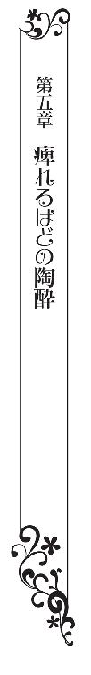
ステファニーは、アレクシスに鼻面をこすりつけてきて甘える馬を、驚きの表情で見つめていた。
「エクレール。プランタン。久しぶりだなぁ。元気だったか？ 僕だよ」
大きな馬が、まるで恋人のようにアレクシスに甘えている。
じいやさんとステファニーもいるので、広い厩舎が狭く感じるほどだ。
アレクシスは馬の首に腕を回し、顔にチュッとキスをした。
「恋人みたいね」
「あはは。そうだね」
馬なんて大きいし怖いし臭いのではないかと思っていたが、厩舎は綺麗に掃除され、馬はアレクシスになついて、子犬のように甘えている。
エクレールという名前なのに穏やかな馬だ。
「奥さま。どうぞ」
じいやさんから人参を差し出された。
「なにこれ？」
「馬の好物だよ。仲良くしましょうって、エクレールとプランタンにあげてごらん」
「怖いわ」
「手の平に乗せて差し出すんだ」
「はい、どうぞ」
こわごわと差し出すと、馬がぱくんと食べた。
「わぁっ。食べたわ」
「エクレールにもあげてください」
「はい。どうぞ」
じいやさんから受け取った人参を、もう一馬に差し出すが、こちらはぷいと顔を背けている。
「エクレール、仲良くしましょう。人参よ」
「食べないね」
「お腹いっぱいなのかしらね？」
「それ、もう一度プランタンにあげてほしい」
アレクシスに言われて、人参をプランタンに食べさせた。
「おいしそうな顔で食べてるのね」
「おやつみたいなものだけどな」
「そうなのね。馬には人参がヴィスキュイってことなのね。触ってもいい？」
「ああ」
人参を食べてくれた馬の、鼻のあたりを撫でる。しっとりした手触りで、体温が感じられる。毛は短くて柔らかい。
「二頭とも同じに見えるわ」
「鼻に稲妻模様の白斑があるのがエクレールだよ」
「そのなのね」
「ぼっちゃん。鞍を乗せますよ。奥さまがお乗りになるなら、エクレールのほうがいいですかね？」
じいやさんが鞍を持ちながら言った。
鞍はつやつやと光る皮でできていて、見るからに重そうだ。
「じいや。大丈夫だよ。久しぶりに逢ったんだから、エクレールとプランタンの世話は僕がしたいんだ。じいやも歳だから、座っててくれ」
「わかりました」
「手伝いましょうか」
ステファニーは申し出たが、アレクシスは笑った。
「馬の世話は無理だよ。危ないからね。慣れてないとできないんだ」
アレクシスは慣れた手つきで馬の背に鞍を乗せ、轡を噛ませる。
エクレールは大人しく、あっという間に馬具がセットできた。
「馬の世話、慣れてらっしゃるんですか？」
「当然だ」
「王子殿下なのに？」
「乗馬と剣は騎士の必須要素だよ」
「弟のルシアンも、よく剣舞をしています」
「ほんとうは、毎日剣の練習をするべきだけど、新婚旅行ぐらいはいいだろうと思ってね。練習用の木剣も持ってこなかった。僕は君との時間を大事にしたい」
「ふふっ。ありがとう」
「エクレール、来い」
彼は、手綱を引いて厩舎から馬を出した。
ステファニーは横を歩く馬を見上げた。
馬は大きくて圧迫感がある。
「乗るかい？」
「私はそのう、いいです」
後ずさると、アレクシスはにっこり笑った。
「そうか。じゃあまずは僕が乗ってこよう」
馬場まで引いてきたアレクシスは、後ろ手に柵を閉めながら言った。
「ステファニー、危ないから柵の外で見ててくれ」
「はい」
青い空に緑の芝生。馬場をぐるりと取り巻く柵は、白く塗られている。緑のフエルトに白いレースを広げたみたいだ。
緑と青と白の取り合わせは美しい。
アレクシスは後ろ手に柵を閉めると、あぶみに足を掛け、さっと馬に乗った。
馬上の人となったアレクシスは、まっすぐに背を伸ばして手綱を握っている。つばの小さい帽子が彼の美貌を際立てている。
「その帽子、すてきね」
「これはヘルメットなんだ」
「そうなの」
「エクレール、さあ行こう！」
アレクシスは、足で馬の腹を軽く蹴った。
馬は軽い足取りで歩き出した。
軽く走らせたり、手綱を引いて馬をその場でくるくると回らせたりしている。スキップするように歩かせたあとは、８の字を描くように馬を歩ませる。
仕草のひとつひとつが高貴だった。
ブリティッシュスタイルの美しい乗馬。
ああ、この人は、本物の王子殿下なのだと感心する。
「いい子だな。エクレール」
首をなでてねぎらう彼は、楽しげな笑みを浮かべている。
「ダンスみたいね」
ステファニーが柵に手を置いて叫ぶと、アレクシスは手綱を裁き、馬を常足で進ませて近づいてきた。
「ダンスと乗馬は同じなんだよ」
「姿勢のこと？」
ぴんと伸ばした背中は、ダンスを思い起こさせた。
「馬を女性に変えたのがダンスだって説があるんだ」
「女性は馬なの？」
「馬は繊細で優しくて利口な動物だよ」
「エクレールって、女の子？」
「そうだよ。でも、エクレールは七歳だから、人間でいうと女盛りかな。どうだい、なかなかのセクシー美女だろ？ たまにしか逢えないのが残念だけど」
なんとなく不愉快になった。
馬がねたましくなってしまったのだ。
「私も乗りたいわ！」
「ああ、いいよ」
じいやさんがヘルメットを差し出した。
「奥さま。危ないんで帽子を被ってください」
言われるままに帽子を被る。かっちりしたつくりで、これが金属を布で包んだものだとわかる。
アレクシスはひらっと馬を下りた。
体重がないかのような軽やかな身のこなしに見とれてしまう。
「おいで。ステファニー」
手綱を持ったままで言う。
ステファニーはどぎまぎしながら、柵の戸を開けて馬場に入った。
アレクシスに手招きされて、馬の近くに寄る。
「あぶみに足を掛けることはできるかい？」
「やってみます」
「ステファニーは右利きだろ。右から乗るほうがいいよ」
ドレスの裾を乱しながらも、高い位置にあるあぶみに足を掛けることに成功する。
「鞍に手を置いて、身体を引きあげて、左足を鞍の向こうに回すんだ」
「そんな、無理よ」
鞍を持った手に力を入れて、身体を引っ張りあげようとするのだが、あぶみは高い位置にあり、力を入れるのが難しいばかりか、ゆらゆら揺れて安定感がない。
馬に乗るのがこんなに大変だとは思わなかった。
「抱きあげるから大丈夫だよ。せーの！」
「きゃあっ」
彼の手が脇腹を持ち、ステファニーの身体を押しあげた。
ステファニーは、左足を回して鞍にまたがることに成功した。
彼がステファニーの後ろに乗ってきた。
馬にふたり乗りしている状況になった。
背中が彼の胸板に密着してドキドキする。
「背を伸ばして」
言われた通り背筋を伸ばす。
「もっとだよ。ダンスでもそうだろ？ 顎を引いて」
「こうかしら」
視界が広がっていた。
「高いわ！」
馬の背に乗っているからだろうか。ただ単純に高い位置に座っているというだけではなく、自分が大きくなったみたいな爽快感があった。
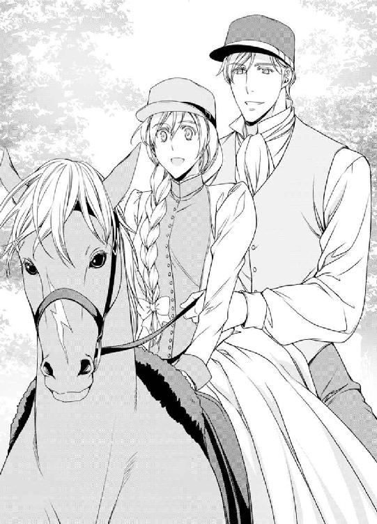
「馬の腹を軽く蹴ると馬が進むよ」
「こうかしら？」
馬の腹を足の内側で蹴ると、馬がゆっくりと歩き出した。
「わぁっ。すごい。進んだっ！」
「そうそう。上手だよ。これが常足と言って、ウォークのことなんだ」
「ほんとね歩いてるのね」
「速くなるとトロット、速歩になって、もっと速くなるとキャンターになる。駈足のことだ。馬の腹を両足で強く挟んで、手綱を引くと止まるよ」
「こんな感じ？」
馬がぴたりと止まった。
「手綱を右に引っ張ってみようか？」
「右ね」
エクレールが右に曲がった。
「すごーいっ。右に引っ張ると右に進むのね」
「そうそう。進む方向を、手綱で指し示すんだ」
「すごいわ。エクレールってかしこいのね」
「だろ？ 馬は繊細で利口な動物なんだよ」
「ほんとね」
「馬の首を優しく叩いてねぎらってあげてくれ」
「エクレール。私の言うことを聞いてくれてありがとう」
「この分だとひとりで乗れそうだな。僕は下りて、引き綱を持つよ。手綱を引いて、エクレールを固定しておいてくれ」
アレクシスが馬から下りた。
そのとき、何が起こったのか、急にエクレールが走り出した。
「きゃあああっ！」
「駈足だ！ 手綱を引いて、前傾姿勢を取って、足で馬の胴を挟んで腰をあげろ！ 落馬するぞっ」
アレクシスが叫んでいるが、風を切る音がびゅうびゅうと鳴り、言葉の内容まではわからない。
あたりの景色が流れていき、髪が風に引っ張られて痛いほどだ。
「エクレール、エクレール、どうしたの？」
ステファニーは、振り落とされないようにしがみつきながら、馬に叫んだ。
「お願い！ 止まってっ」
じいやさんがおろおろした表情を浮かべて走ってくるが、駈足で走る馬は速く、たちまちのうちにじいやさんが遠ざかっていく。
身体が前後に揺すりあげられる。
鞍から落ちてしまいそうだ。
そうだった。アレクシスは、足で馬の胴を挟んで腰をあげて、前傾姿勢になれと言った。
ステファニーは、手綱を短く持ち、腰をあげて上半身を倒した。
目の前に柵が見えた。
白い柵がどんどんステファニーに迫ってくる。
「ぶつかるっ！」
エクレールの身体がふわっと宙に浮いた。
馬場を囲む柵を、牝馬は跳び越えたのだ。
身体が天に放り出されるようだ。腰をあげた前傾姿勢を取っていなかったら、落馬していたのに違いない。
柵をらくらくと跳び越えたエクレールは、森の中へと入っていく。
はっと気付いた。
エクレールは私が嫌いなのではないか。
アレクシスが好きで、私に嫉妬しているのではないか。
「私、アレクシスのいい妻になる！ アレクシスに迷惑掛けたりしない。いい妃殿下になるからっ。だから止まって!! お願いっ！」
ステファニーは必死で話しかけた。
首に止まっている虫に気がついた。
蜂だ。
エクレールはこの蜂をふりほどきたくて走り出したのだ。
ステファニーは手の甲で蜂を払った。
虫は苦手だし、蜂なんて触りたくもなかったが、そんなこと言っていられない。
「もう虫はいないわ。止まって。エクレールも危ないでしょっ！ 森の中だし、怪我するわっ」
手綱をぐっと引くと、馬の速度が目に見えて弱くなった。
やがて速歩になり、常足になった。
「私はいい妃殿下になって、アレクシスを支えるわ。だから安心してね」
エクレールが止まった。
「止まってくれてありがとう。エクレール」
馬は完全に止まっているにもかかわらず、まだ疾風の感覚が残っていた。
緊張のあげくの弛緩に襲われ、呆然としてしまう。
首に抱きつき、両手で首をナデナデしながらぼんやりしていたら、アレクシスがプランタンに乗って駆けつけてきた。
「大丈夫か」
アレクシスは心配そうな表情を浮かべている。
「ええ。大丈夫」
「よかった。ステファニーはすごいな。よく落馬しなかった。君は勇気のあるレディだね。それにしてもおかしいな。エクレールは大人しい牝馬で、急に走り出したりしないんだが......」
「エクレールは虫がいやだったみたい。首に蜂がついていたの。蜂を手で払ったら静かになったわ」
エクレールが嫌だったのは、虫ではなくステファニーだ。
アレクシスが好きで、アレクシスの妻になったステファニーに嫉妬していた。
そんな気がした。
「君はすごいね。お嬢様というのは、虫など触れないものだと思っていた」
「はい。私も虫は触れないけれど、エクレールのためにと必死だったの」
「馬場へ戻ろう」
「はい。あなた」
手綱を引いて馬首をめぐらせ、馬を並べて森の中を歩いて行く。
「上手に乗れるようになったね」
「そうね。常足ならなんとか大丈夫そう」
急に駆け出されたせいで、常足で歩くのは平気になってしまった。
「馬を嫌いにならないでくれよな」
「嫌いにならないわ。エクレールも私も、アレクシスが好きだもの。エクレールとは友達になれそうよ」
「エクレール、僕の大事な奥さんを嫌わないでくれよ」
馬は「知らないわ」とばかりに、つんと顔を背けた。
「ふふっ。かわいい。エクレールはプライドが高いのね」
「そうだな」
森の中に、ふたりの笑い声が響いている。
☆
「このラタトゥイユ（野菜の煮込み料理）すごくとてもおいしい」
ステファニーはスプーンを動かしながら言った。
ライ麦のパンにポーチドエッグ、魚のフライ、ズッキーニーとトマトのラタトゥユ、デザートはラズベリーだ。
王宮の豪華な料理もいいが、こういう素朴な料理もいい。
「最後の晩餐だな」
「そうね。今日で終わりなのね」
乗馬にテニスにボートに読書、釣り、トランプ遊び。
ふたりが食べている魚のフライは、アレクシスが釣ったものだ。釣り糸を垂れて座っている彼の横で、ステファニーはスケッチブックを広げ、ドレスのデザイン画を書いて楽しんでいた。
ラズベリーはふたりで庭で摘んだもので、おかげでスプーンを握る指先が赤い。
離宮の休日はあっというまに過ぎてしまい、明日は迎えの馬車がくる。
「楽しかったか？」
「ええ。でも、ちょっと残念だわ。もっとゆっくりしていたかった」
「そうだな。次は避暑に来よう。夏はすぐだよ」
「そうね」
明日王宮に戻ると、妃殿下としての生活がはじまる。
──大丈夫かしら。私にできるのかしら。
「そんな不安そうな顔をしないで。大丈夫だから」
離宮の食堂は、王宮の大きな食堂と違い、アレクシスとの距離が近い。
「ええ」
エクレールにも、私はいい妃殿下になると約束した。
──がんばらないと......。
「今晩はゆっくりすごそう」
「そ、そうね......」
「一緒にバスに入らないか？」
「嫌よ。恥ずかしいもの」
かぁっと顔が赤くなった。
「でも、王宮に戻ると一緒にバスなんて不可能だよ」
その通りだった。
王宮にはたくさんの人がいて、常にひとめにさらされる。
バスさえも、メイドが背中を流してくれるありさまで、ふたりでお風呂なんてできるわけがない。
──どうしよう。恥ずかしいわ。
「顔が真っ赤だよ。僕の愛するプリンセスは、何を考えているのかな？」
アレクシスがからかうような口調で言った。
「もうっ。いじわるっ」
「ごめんごめん」
☆
「そのう、やっぱり恥ずかしいからやめます」
ステファニーはナイトドレスを胸に抱えたまま、じりじりと後ずさりした。
「そうか。それは残念だ。先にバスに行くよ」
アレクシスは、さして残念そうなそぶりもせずバスに向かう。
ステファニーは、部屋の中をウロウロした。胸の前でクロスした腕は、ナイトドレスを押さえている。
──どうしよう。恥ずかしい。
──でも、私はアレクシスのいい妻になって、妃殿下として夫を支えるって、エクレールに誓ったのよ。
もたもたしているうちに、濡れた髪を布で拭きながら、アレクシスが戻ってきた。ほかほかと湯気を立てている。
ナイトウエアのベルトをゆるく止めているので、たくましい胸がほとんど露出している。濡れた髪が整った顔に落ちかかり、ギリシャ彫刻のように美しい。
この綺麗な人が夫だなんて信じられない。
湯を使ってきたばかりの彼は、見とれるほどに綺麗だった。
──一緒にお風呂に入ればよかった。惜しいことしちゃった。
──ああ、私って、何を考えているのっ!?
「どうしたんだ？ 妙な顔をして」
ステファニーは、胸の前で抱いていたナイトドレスを、思わず背中に隠してしまった。
自分でも何をやってるのかわからない。
「何を隠しているんだ？」
「ななな何でもないの」
「そうか。バスに入っておいで」
ステファニーはかぶりを振った。
「んっ？ どうかしたのか？」
「バスはあとにします」
「わかった。何を飲む？」
アレクシスはナイトキャップが習慣になっている。
そのため、ばあやさんが、テーブルにお酒のボトルを並べている。ステファニーもつきあい程度に飲むようにしている。
しゃっくりが出るので、飲まないようにしていたが、アレクシスと一緒にお酒をたしなむうち、平気になってしまった。
「ワインを。甘いのが飲みたいわ」
「じゃあこれだね。君の好きなロゼにしたよ」
アレクシスは、グラスをふたつ用意し、コルク抜きでワインボトルのフタを開けた。
彼がボトルを傾けると、サーモンピンクの液体がグラスに満ちた。
「そうね。ロゼの色が好き。薔薇色で透明感があって、とても美しいわ。こんなドレスをつくりたいわ。綺麗でしょうね」
ステファニーは、ワイングラスの脚を指先で持ち、くるくると回した。
ワイングラスは、丸いカップを細い足で支え、脚の下に台がついている。
カップを持つのが正式な持ち方だが、脚を持って回すと、透明なボウルの中で薔薇色の液体がたゆたい、甘い香りを放つ。
ステファニーはその美しさに見とれた。
「ふふ、ステファニーは裁縫がほんとうに好きなんだね」
ロゼは甘くておいしい。アルコール度数が低いので、ブランデーのようにかぁっとならないところがいい。
「アレクシスは乗馬や釣りやテニスが好きなのね？ とても楽しそうだったわ」
「楽しかったのは、ステファニーと一緒だったからだよ」
「ふふ。ありがとう。私も楽しかったわ。舞踏会とかお茶会より乗馬やテニスが楽しいわ」
「奇遇だね。実は僕もそうなんだ。舞踏会もあんまり好きじゃなくてさ。まぁ、王子殿下である以上、義務だと思って愛想を振りまいているけど、正直言って、香水のきつい、気の強い女性は苦手だ。君と一緒にいるとホッとする」
「ありがとう。うれしい」
「愛しているよ。僕の奥さん。王宮に戻っても楽しくすごそう」
アレクシスが自分のことを僕と呼ぶとほっとする。
ステファニーにだけ、くつろいだ姿を見せてくれているのだから。
「そうね。王宮に戻っても、テニスと乗馬は続けたいわ。私、乗馬大好きよ」
「そうだね。ステファニーほど乗馬がうまい女性はいないよ。何しろ、はじめての乗馬から十分で、駈足をしてしまうんだからね」
「もうっ、言わないでください。ひどいわ」
笑い声がはじけた。
「エクレールはね、アレクシスが好きで、私に嫉妬していたの。でも、話し合ったら仲良くなったわ」
「そうか。話し合いは大事だな。バスに一緒に入ろうか？」
「アレクシスはさっき入ったばかりでしょう？」
「僕の奥さんの綺麗な裸を、いっぱい見たかったんだよ」
「だったら、好きなだけ、見てください」
自分で言っておきながら、顔がかぁっと赤くなる。
「いやだ。私ったら、何て恥ずかしいことを......」
ロゼワインの酔いが、ステファニーを大胆にさせていた。両手で顔を覆ってイヤイヤをしていたら、彼がその手を握ってきた。
「おいで」
「はい」
「ちょっとイタズラしたいんだけど、いいかな？」
彼はくすぐったそうな表情を浮かべている。
「はい？ そのう、いやらしいことですか？」
「楽しいことさ」
抱きあげるようにしてベッドに乗せられた。
「きゃっ」
ベッドのスプリングが、ステファニーを柔らかく受け止めたものの、身体が前後に弾んで目が回りそうだ。
横座りになり、両手を前について身体を支えていたら、彼が手首をつかんで引っ張った。ステファニーは髪を乱して仰向けになった。
手首がふたつに合わせられ、ベッドヘッドの枠に結びつけられていく。
「何を......？」
「僕は君が乱れるところを見たいんだ。嫌だったらやめるから」
「そうね。嫌なら言います」
一緒にバスに入ろうという誘いを断ったのはステファニーだ。少しは彼のお願いも聞いてあげたい。
どうもアレクシスは、ステファニーが恥ずかしがるとうれしいらしい。
縛られていることで、仕方なくされているという心理的な言い訳もできる。
「怖い？」
「いいえ。大丈夫です。あなたのすることなら、怖くない」
手首をベッドの枠に拘束されているとはいえ、手を引くとほどけてしまいそうな遊びのような縛りだ。
ナイトウエアではなくドレス姿なので、胸も裾もはだけないので、恥ずかしさはそれほどでもない。だが、彼を直視できなくて目を伏せていると、ベッドがギシッと揺れた。
アレクシスは、ベッドに乗ると、ステファニーの首筋に羽根ペンの先を這わせた。
「きゃあっ」
ゾクッとした戦慄が身体に走った。
耳にフッと息を吹きかけられ、羽根で首筋を撫でられる。触れたところが冷たく感じた。優しい刺激に、皮膚の下の神経組織が混乱を起こし、ひんやり感じてしまったのだ。
「や......やだ......あっ......あぁっ」
アレクシスは、ドレスの襟を大きく開くと、鎖骨のへこみをなぞるようにして羽根先を動かしはじめた。
肌の表面は冷たいのに、身体の内が熱くなる。
これは子どもの頃にふざけたくすぐりあいっこだ。なのに、ステファニーは感じていた。
「ん......あぁ......あ......だめ......ああ、許して......」
ステファニーは悶えた。手首を縛られているので、左右に転がることしかできないのだが、左を下にすると右のうなじを撫でられ、右を下にすると左の腋の下をくすぐられる。
くすぐったいはずの刺激なのに、手首を縛られているというスパイスがそうさせるのか、ゾクゾクして気持ちがいい。
「あぁっ......あっ......だめ......だめぇ......」
「君の肌は、興奮するとピンクに火照って綺麗なんだ」
羽根先を肌に滑らせる遊びのようなくすぐりに、肌がしっとり汗ばんできた。
触れるか触れないかという軽さの刺激が、ステファニーを敏感にさせていて、身体の奥が熱くなる。
ドレスをきちんと着ていたにもかかわらず、襟ははだけられて胸は丸出し、ドレスの裾は乱れて太腿のつけ根までも覗いている。
「んっ......んっ......はぁはぁ......」
乳房の丸みをなぞるように羽根を動かされ、ステファニーはドキドキした。このままだと乳首を羽根でくすぐられる。身体を硬くしたとき、羽根は反対側の乳首を襲った。
不意打ちの刺激に身体が混乱し、蜜液がたらっとあふれた。
「あぁ......だ、だめ......んっ......んんっ......」
アレクシスは、愛しくてならないとばかりの優しい手つきで、ステファニーの胸やら腹やらを羽根ペンの先でなぞり、ステファニーから悲鳴をあげさせていく。
肌はしっとり汗で濡れるが、羽根ペンの先はまっすぐに揃ったままだ。
「あっ、あぁぁっ、あっ」
乳首をすっと撫でられる感触は心地良く、身体がビクンビクン震えてしまう。
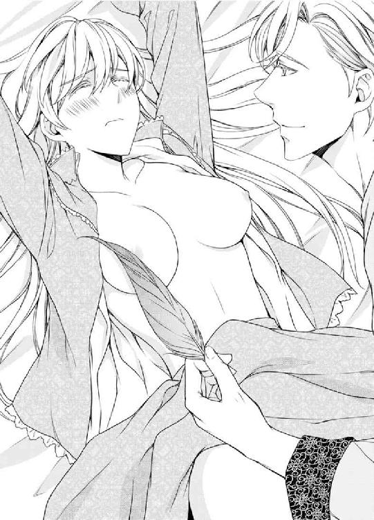
「い、いや......もう......あぁ......」
「僕の×××が欲しいんだろ？」
王子殿下の口から出た卑語にびっくりする。
「君に、僕がほしいって言ってほしいんだ。ステファニーはいつも品が良くて、あんまり僕を欲しがってくれないから。王宮に戻ると、君の美しさに、みんなが夢中になる。でも、君の見事な身体は、僕だけのものだ」
乳首の上をスルスルッと掃かれる。
「い、いや......違う......やめて、やめて......」
一滴の雫が、表面張力で持ちこたえていたコップから、水をあふれさせるにも似て、乳首を襲った羽根先に快感が爆発した。
「ああぁっ!!」
ステファニーは、ケイレンを起こしたように大きく震えた。
手首が縛られているために、手で身体を支えることができず、頭が前後に揺すられる。
フッと意識が途切れた。上り詰めてしまったのである。
「君が好きだ」
ちゅっと唇にキスをされ、愛の言葉をささやかれる。
「ええ。私も、私も好きです」
「僕の×××が欲しいって言って」
「アレクシスの×××が欲しい」
夫は、ほっとしたような表情を浮かべた。
それは不思議な体験だった。王子殿下がステファニーに執着している。品が良い、美しいと思ってる。ステファニーに求められたいと思っている。
貧乏貴族の嫁き遅れの令嬢で、修道院に入るしか生きて行く術はないと思っていたのに。
「手首、ほどいてください。私は逃げませんから」
「ああ、そうだね」
手首がほどかれた。ほっとしたとき、彼が覆いかぶさってきた。
下肢を腰で割り、つるっとした熱いものが秘裂に押し当てられる。
「その......入れるよ......」
アレクシスは、ご機嫌を取るような口調で言った。
「はい。入れてください。あなたが欲しいです」
彼の背中を抱きしめながらささやくと、先端がぬるっと秘口にはまりこんできた。熱い男根が身体の奥深くへと進んでいく。
彼の先端が膣奥を押した。身体の内側がいっぱいにされていて、少しでも揺らすとあふれてしまいそうだ。
「うっ！ 君のは......良すぎるっ」
アレクシスはいつも同じことをいう。
ステファニーの身体は優れているらしい。
「うれしいです......私は、アレクシスを......喜ばせてあげたい......」
「なんてかわいいんだ。君は」
チュッとキスをされた。
挿入したままでじっとしていることに飽きてきて、ステファニーはお腹の奥に力を入れた。
「うっ、キュッて......し、締まったっ!!」
彼がもう耐えきれないとばかりに腰を前後に動かしはじめた。
ぐっ、ぐっと、前後に腰を動かすたび、先端が最奥を押して、身体全体に重く響くような快感に襲われる。
「あっ、ぁあ......っ」
ステファニーは甘い声をあげて悶えた。深く挿入されるときがたまらなかった。敏感な奥と秘芽が同時に押される。
奥が突かれるときは、身体の芯に響くような重くて鈍い衝撃なのに、秘芽を彼の下腹部で押されるときはひりっとくる刺激だ。
それが同時に起こるものだから、快感が加速度的に増してくる。
「あぁ......、ああっ、......あっ、ぁあっ。......んっ......アレクシス......愛してます......あぁ......」
目の裏でチカチカと明滅した。
ステファニーは、快感のあまり、彼の背中に回す手に力をこめた。
何かにしがみついていないと、強制的にどこかに行かされてしまいそうだった。
「うっ、うっ......し、締まる......よじれる......っ、くっ......」
彼の動きがどんどん早くなっていく。
「あああああぁあっ！」
快感が極まり、ステファニーは、身体を弓なりに反らせた。腰の位置が高くなった。
パンッと何かが爆ぜたような錯覚に襲われ、意識が途切れた。彼の背中を抱いていた腕から力が抜ける。
「君は、何て......素晴らしいんだ......っ！」
彼は何を考えているのか、ステファニーの太腿を肩に乗せると、上からのしかかるようにして律動をはじめた。
「あ......っ、んっ......、あぁ......」
腰を起点に身体をふたつに折り曲げられ、膝小僧が顔の両脇に来る苦しい姿勢だ。
彼は膝立ちになって上から押しこむようにして律動している。
身体の芯を押される感じが今までにも増して強い。
「だめ......あぁ......もう、もう......いやぁ......っ」
快感は過ぎると苦しくなってくる。
ステファニーは右手で彼の手を握り、左手でシーツをつかみながら悶えた。
「あぁ......だめ......いや......アレクシス......許して......気持ち、よすぎて......」
彼は、律動をやめようとはしない。
この姿勢は、身体の奥深いところを突かれるために、快感が強い。
ステファニーは、だんだん苦しくなってきた。
「だめ、あぁ......深いです......あぁ」
「感じて、くれて、うれしいよ。君の身体は、そのう......良すぎる......から」
──だったら......。
ステファニーは意識的に膣を締めた。
だが、それは、ステファニーにとっても、快感が極まる行為だった。
襞が締まったことで、夫自身がよりいっそう大きさを増したように感じたからだ。
「あぁっ!!」
視界が銀に染まり、意識がフッと宙に浮く。
「うっ、くっ......」
彼がうめいた。
いっぱいに男根を押しこんだ状態で、彼が動きを止める。
身体の奥がジワッと熱くなった。
幸せな気分が身体の奥に満ちていく。
ステファニーは、あまりの快感にぼんやりしていた。
ふんわり甘くて心地良い。彼が愛しい。
アレクシスが、ステファニーの鼻のアタマにキスをしてから、身体を離した。
灼熱の楔が抜かれたことで、身体の奥に感じていた圧迫感がなくなり、ステファニーは安堵の吐息を漏らした。
痺れたような陶酔が、身体のあちこちに残っていて、多幸感でいっぱいになってしまう。
「大好きだよ。僕の奥さん。王宮に帰ったら、ちょっとしたプレゼントがあるよ」
王宮......。
夢のような快感にうっとりしていたステファニーは、現実に引き戻されて身体を起こした。
「妃殿下としての生活がはじまるのね」
「週に一回のお茶会と月に一回の舞踏会、それに公式行事のときだけ、綺麗に装ってすましていてくれたらそれでいいよ」
離宮で過ごしたふたりきりの楽しい日々は終わり、明日から王族の一員としての日常がはじまる。
──私にできるのかしら？
不安が兆したが、賽は振られてしまったのだ。
もう後戻りはできない。がんばるしかない。
ステファニーが不安そうな表情を浮かべたことに気付いたのだろう。
アレクシスが肩を抱いてきた。
「僕は王宮に戻ったらすぐさま地方の視察に行かなくてはならないんだが、自由にやってくれ。お茶会までには戻ってくる」
「愛してるわ。私の王子殿下」
「愛しているよ。ステファニー」
彼に甘えていると、不安が消えていく。
ステファニーは、アレクシスに肩を寄せ、頬をスリスリしてなついた。
──このまま時間が止まってしまったらいいのに。
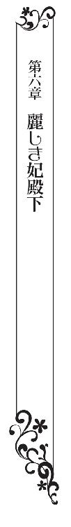
ステファニーはため息をついた。馬車の車窓から、城門が見えてきたからだ。馬車の振動が、不安なリズムを帯びて迫ってくる。
「うかない顔だね」
向かい合う席にいるアレクシスが言った。
「緊張してるの」
「ステファニーなら大丈夫だよ。君は美しく、品が良い。ドレスのセンスも良くて、優しくて気配りができる。最高のプリンセスだ。ダンスも乗馬も得意だしね。駈足ができる姫なんてめったにいないよ」
ステファニーは笑った。
「もうやめて。アレクシス、恥ずかしいわ」
王宮はいくつもの城門を連ねている。四つの城門をくぐったのち、最奥部の馬車留めで馬車が止まった。
「お帰りなさいませ。王子殿下、妃殿下」
メイドと執事、文官たちに歓迎されながら帰城する。
なんて美しいお城なのかと見上げていた王宮の内部に、ステファニーはいる。妃殿下として。生活をする場として。
「ただいま」
メイドが廊下の端に並び、おじぎをする前を歩いて行くのは、どこか落ち着かないことだった。
「お帰りなさいませ」
「マリアンヌ、頼んでいたものはできたかい？」
彼女は、仮面舞踏会でアレクシスと踊るきっかけを作ってくれたメイドだった。
ステファニーがお茶会で逃げ出したときも、マリアンヌがアレクシスを案内してくれた。
王宮のメイドには上級と下級があり、王族に侍ることができるのは上級メイドだけだという。
マリアンヌは上級メイドだというので、頼んで担当になってもらった。
「はい。できております。こちらです」
マリアンヌに案内され、小さな部屋に入ると、カラフルな色彩がステファニーの目を射た。
「わぁ......っ」
歓声があがった。
手芸部屋だった。
布と手芸用品がいっぱいだ。
「こちらが妃殿下の持ち物です。こちらはボタン」
ステファニーが今まで使っていたものは一角に集められ、小型キャビネットの小引き出しには、色とりどりのボタンが入っている。
ファスナーにホック、ハサミやリッパー（糸を切るための道具）、定規もある。糸と針に裁ち鋏も作業台に用意してある。
とくに目を引いたのは、布の豊富さだった。クレープジョーゼットも、織りむらのないシルクタフタもある。
ドレス工房並みの品揃えだ。
なによりもすごいことは、窓が大きくて明るいことだった。裁縫をするには最高の部屋だ。
ずっとほしいと思っていた裁縫用トルソーも、ピンキング鋏もあった。
ステファニーは、トルソーに歩み寄り、そっと触れた。
「トルソーは特注で、妃殿下と同じにしてあります」
「そうか。スタイルのいいトルソーだと思っていたが、私の奥さんと同じサイズか」
アレクシスがうんうんとうなずきながら言ったものだから、マリアンヌが吹き出す寸前でこらえている。
「アレクシス、やめてください。顔が赤くなりますわ」
夫は、おどけて大げさなおじぎをした。
「もしもお針子がほしかったら、王宮のお針子を呼ぶこともできますので、私におっしゃってください」
「いいえ。私は自分で縫いたいんです。ありがとう。アレクシス。最高のプレゼントだわ！」
「ふふ。君が喜んでくれるとうれしいよ。私は今日の晩から地方の視察に行かなくてはならないんだが、休日には遠乗りに行こう」
「ええ、たのしみにしてるわ......！」
☆
妃殿下としての日常は、おだやかに過ぎていった。
朝日とともに起き、マリアンヌの給仕で朝ご飯を食べ、ステファニーは手芸部屋に籠もって好きな裁縫をする。昼餐を食べたあとは、また手芸部屋だ。
裁縫をしていても、誰にも文句を言われない。夢のようだった。
夫がいないと、さびしというか頼りないが、針を動かしていると時間を忘れる。
心配していたいじわるなメイドもいず、マリアンヌはそれとなく気配りをしてくれて、ステファニーが居心地良いように心を砕いてくれる。
裁縫に疲れたら、中庭を散歩する。
庭師が端正したイングリッシュガーデンは、季節の花が咲き乱れ、緑が濃くて鮮やかだ。川や池もあり、小鳥も囀っていて、彫刻があちこちに飾られている。
静かな庭を散歩していると、おだやかな気分になってくる。
晩ご飯を食べて、アレクシスのおかげで習慣になってしまったナイトキャップを嗜んでから眠りにつく。
高貴な人はメイドにドレスの着替えやお風呂の介添えをしてもらうそうだが、ステファニーはひとりでできるからと言って断っている。
好きなだけ裁縫ができる環境が整ってうれしい。
幸せすぎて怖いほどだ。
ノックの音がした。
「妃殿下。マリアンヌです。入ってもよろしいですか」
「はい」
ドレスの型紙を切っていたステファニーは、手を止めてマリアンヌを迎え入れた。
「王子殿下からの書状が届いております」
新婚旅行から帰るなり、領地視察に行った夫からの手紙だ。
「何かしら？」
受け取って手紙を開く。
【親愛なるわが妻へ。
視察が延びて、帰城が一日遅れることになった。
お茶会はステファニーが主催してくれたまえ。
君の忠実な騎士より】
「大変だわ......。マリアンヌ、お茶会ってどうしたらいいの？ 私はアレクシスの横で、にこにこしているだけでいいと思っていたの」
「そうおっしゃると思って、招待客のリストを持って参りました。お菓子とお茶はメイドと料理人にお任せください。妃殿下は、美しく装って、にっこり笑って、招待客のみなさんを歓待していただけたらそれでいいのです」
妃殿下の初仕事だ。
適齢期の王子と姫、子息と令嬢は、こうしたお茶会や舞踏会に出かけて生涯の伴侶を見つける。主催するのは、王族や裕福な貴族たち。いわゆる社交界だ。
ステファニーは社交界に興味はなく、お茶会の誘いはずっと断っていたが、弟から聞いているので雰囲気はわかる。
王族は、裕福な貴族と親密な関係を作る必要があるそうだ。
アレクシスも、お茶会と舞踏会だけは、仕事としてがんばってほしいと言っていた。
「私は招待客の名前を覚えることが先ね。お菓子は私が選んでもいいのかしら」
「もちろんですよ。料理人に試作を出してもらって、妃殿下のご意向に添うものを作っていただきましょう」
「ドレスはどうしましょう」
「妃殿下のお好みでお選びください」
主役は招待客なのだから、派手にしないほうがよさそうだ。
お茶会は内輪の会なのだから、ローブ・モンタントで、地味すぎず、派手すぎないドレス。宝石はドレスに合わせて選ぼう。
今から作るのは無理なので、クローゼットにたくさんつり下げられているドレスから選ぶことにしよう。
「お花も飾りたいわ。私、生けたいの。手伝ってくださらない？」
「はい。お手伝いします。楽しみですね」
「あら、招待客にはキャロラインさんとルシアンがいるのね？」
弟のルシアンと、その婚約者のキャロラインは、結婚式に向けて準備をしている最中だ。
「はい。王子殿下が、妃殿下が緊張なさいませんようにと、リストに入れるようにおっしゃいました。あとは、文官が選んだ招待客でございます」
招待客のリストを見たステファニーは、眉根を寄せた。
ステファニーの顔色を見て取って、マリアンヌが聞いた。
「どうかなさいましたか？ 妃殿下？」
「ううん。何でもないの」
「アジャニー伯爵令嬢でございましょう？」
イザベラ・アジャニー。舞踏会で大きなリボンの飾りがついたドレスを着て来た。美しいが気の強そうな女性で、リボンに引っかけてしまったメイドのマリアンヌを叱りつけた、彼女だ。
「そうよ。でも、どうということはないと思うの」
「ええ。その通りでございます。妃殿下はプリンセスでいらっしゃいます。どっしりと構えていらっしゃいませ」
「ありがとうマリアンヌ。どっしりしとくわね」
「まっ。妃殿下ったら。ふふっ」
ステファニーとマリアンヌは笑いあった。
☆
「妃殿下、いい午後ですね。ご招待ありがとうございます」
「お待ちしておりました。どうぞこちらに」
ステファニーは、三々五々やってくる招待客を、笑顔で迎え入れていた。
ドレスは、白に近いピンク色のローブ・モンタントにした。
宝石はピンクダイヤモンドのネックレス。大粒ではないがピンクダイヤは非常に高価なもので、吸いこまれそうな輝きを放っている。
ドレスの生地は最高級のジャガードで、独特の光沢が美しい。シンプルなデザインのドレスにした。
お茶会の主役は招待客で、主催者は後見役だというのが、お茶会の建前だからだ。
紅茶の香りを引き立てるように、花は香りの強くない薔薇を選んだ。
白とピンクと赤の薔薇が、こぼれんばかりに花瓶に生けてある。
文官に案内され、キャロラインとルシアンがやってきた。
「お誘いありがとうございます。妃殿下」
「ようこそおいで下さいました。クレメンテ子爵令嬢キャロラインさん。どうぞ。こちらにお座りになって」
キャロラインはステファニーがプレゼントしたピンクタフタのドレスを着ている。
「妃殿下が作ってくださったドレス、ぴったりなんです。ありがとうございます」
「こちらこそ。着ていただいてうれしいわ」
「妃殿下。ご尊顔に拝し奉り、光栄至極でございます。ご健勝のよし衷心からお喜び申しあげます」
弟の大げさな挨拶に、ステファニーは笑ってしまった。
「どうぞ。座って」
「なんだよ。姉さん、僕だけ扱いがぞんざいだな」
「だってルシアンは弟だもの」
イザベラがやってきた。
あたりがぱっと華やいだ。ローブデコルテの緋色のドレスに、大粒のルビーのネックレスが鮮やかに光っている。
イザベラは品のいい仕草でおじぎをした。背中が大きく開いていて、彼女の美しさを引き立てているものの、お茶会の場にはそぐわないのではないかと思うほどの派手なドレスだ。
「お茶会にお誘いいただき光栄です。はじめてお目にかかります。アジャニー伯爵令嬢イザベラでございます」
──イザベラさんは、私のこと覚えてないみたいね。
ひらひらした赤いドレスは、薔薇のようで綺麗だが、引っかけてしまいそうだ。メイドのマリアンヌにそれとなく目配せをかわす。
──給仕するとき、ドレスに引っかけてしまわないように気をつけてね。
マリアンヌは、心得ました、というふうにうなずいた。
「ようこそおいで下さいました。イザベラさん。すてきなドレスと宝石ですね」
イザベラはステファニーを値踏みするような視線で見た。
あざけりの色が瞳に走った。
「さすが妃殿下はお目が高いわ。ヴィジョンブラッドですのよ。妃殿下はピンクトルマリンをおつけになっていらっしゃるのね。よくお似合いでいらっしゃいますね。妃殿下とは、はじめてお逢いした気がしませんわ」
ヴィジョンブラッドとは鳩の血の色という意味で、最高級のルビーのことだ。
ピンクトルマリンは安い宝石だ。私は妃殿下に宝石とドレスで勝っていると言いたいのだろう。
ピンクトルマリンではなく稀少なピンクダイヤだが、ステファニーは何も言わなかった。イザベラを刺激することはない。
やがて全員が席につき、お茶会がはじまった。
「今日はいい天気ですこと」
「ほんとね。こんな日に遠乗りすると気持ちいいでしょうね」
「お客様、ケーキはどちらがよろしいですか？」
「あら、かわいい。すてきだわ。これと、これと、どうしよう。全部ほしいわ」
マカロンに、花の形のマジパンを飾ったタルト・オ・シトロン、白鳥の形のシュークリーム、カリカリに焼いたヴィスキュイ。
いずれも、王宮の料理人が腕によりをかけたものだ。
「よかったら全部どうぞ」
「そんなに食べたら太ってしまうわ」
「キュウリのサンドイッチもスコーンもありますよ」
キュウリだけのシンプルなサンドイッチと、クロテッドクリームをつけて食べるスコーンは、アフタヌーンティーの定番だ。
紅茶は最高級のフィナー・ティピー・ゴールデン・フラワリー・オレンジ・ペコーで、つみたてのミントを浮かせている。
ミントの葉は、離宮でばあやさんが入れてくれたお茶が美味しかったので、料理人に頼んで取り寄せてもらった。
「この紅茶、さっぱりしていい味ね」
「ミントの香りがいいですね」
座が温まってきて、皆が会話を楽しみはじめた。
──あれ、これって、お針子と同じだわ。
ステファニーはドレス工房に入り浸って、ドレスの縫い方を覚えた。
工房の掃除を手伝ったり、雑用をしたり、報酬はいらないから手伝わせてと頼み、縫製を教えてもらったのだ。
お針子は、おしゃべりをしながら針を動かしていた。彼女らの口の端に上るのは噂話だった。
──貴族もお針子も同じね。
今年は小麦が豊作なので、どこそこの伯爵家の領地収入が豊かだとか、反対に燕麦は不作だとか、どこそこの令嬢が美しいとか、どこそこの騎士が乱暴者で迷惑だとか、およそどうでもいい話を楽しそうに話している。
ステファニーは、にこにこしながら相づちを打ち、耳を澄ました。
アレクシスが、お茶会が妃殿下の大事な仕事のひとつだと言った理由がわかる。
噂話を聞いていると、貴族たちの動向がいやおうなくわかってしまう。
ステファニーは、会話の内容を逐一記憶しようとした。散会したらすぐさまメモを取り、アレクシスに報告しよう。
「妃殿下は、社交界に関心をお持ちではなかったとうかがいました。王子殿下とどうやって知り合ったんですか？」
出席者のひとりが聞いた。
ふいに話を振られ、あわてて答える。
「仮面舞踏会で知り合ったんです」
スコーンを上品な仕草で食べていたイザベラが、ぴくっと眉尻を動かした。
「仮面舞踏会って、三月に王宮で行われた会ですよね？」
皆が興味しんしんステファニーを見つめている。
「あら、私も仮面舞踏会に行ったわ。王子殿下、来てらしたの!?」
イザベラが聞く。
「はい。お忍びでいらっしゃっていました。狩人の格好をされていました。私、王子殿下だとは知らなくて、貴族の子弟でいらっしゃると思っていたので、王子殿下だと知ったときは驚きました」
「すてきなお話ですね」
「王子殿下と知らずに恋愛なさったんですね。ロマンチックね」
「それ、理想ですね。僕も、そんな恋愛をしたいものです」
羨望の視線で眺められ、ステファニーはくすぐったい思いをした。
はっと気づいた。
イザベラが睨んでいる。
「私、妃殿下と仮面舞踏会でお会いしてますわ」
「ええ」
「あのときの、狩人の格好をした青年が、王子殿下だったのね？」
静かな口調だが、怒りを抑えきれないとばかりの表情だ。
「ええ」
「私にダンスを申しこんでくださったわ」
その通りだ。アレクシスはイザベラにダンスを申しこみ、断られたのでステファニーと踊った。それがステファニーが王子殿下と知り合い結婚するきっかけだった。
「はい」
「あなたはお針子になりたいって言っていた地味な令嬢ね」
「そうですわ」
弟のルシアンが、不安そうにステファニーとイザベラを見比べている。
イザベラは瞳をギラギラさせてステファニーを睨んでいた。
自分がダンスを断ったみすぼらしい格好の狩人が王子殿下だと気づいて、怒りを募らせている。
もしもあのとき申しこみを受けていたら、自分が妃殿下になっていたのだと思っているのだろう。
イザベラが気色ばんだものだから、王宮の豪華な部屋が静まりかえった。
「イザベラさん。せっかくのお茶会ですから、楽しいお話をしませんか？」
キャロラインがおかしくなった空気を払うようにして口を挟んだ。
「その通りだね。キャロライン。そういえば騎士ギルドで、剣の練習中に木剣を折ってしまったことがあってね」
ルシアンが強引に話題を変えた。
だが、イザベラの怒りは納まらなかった。
「あなたのようにうすらぼんやりした人畜無害の令嬢が、王弟殿下の妃にはぴったりね。利発で美しく行動力のある女だと王位継承権の低い王子の妃殿下は勤まらないわよね」
さっと顔から血の気が引いた。
人畜無害だからアレクシスに選ばれた？
なるほどそうかもしれない。そう考えるとつじつまがあう。
どうして王子殿下は私を選んだのだろうと思っていた。
自己評価よりも、アレクシスの評価のほうが高すぎてとまどっていた。
王位継承権の低い王子の妃は、おとなしいほうがいいだろう。
イザベラの指摘は腑に落ちるものがあり、それだけにステファニーに衝撃を与えた。
頭の中がぐらぐらと揺れる。
「それに、言っておきますけど、狩人の青年がダンスを申しこんだのは私だったのよ」
その通りだ。
アレクシスはイザベラにダンスを申しこみ、断られたのでステファニーと踊ったのだ。
イザベラは、薔薇のような令嬢だ。ぱっと目を引く美貌の持ち主だから、ダンスの申しこみも多いだろう。舞踏会で壁の花になっていたステファニーとはわけが違う。
「妃殿下に失礼だ。お黙りください」
「そうよ。アレクシス王子殿下にも無礼ですわ」
お茶会の出席者が口々にたしなめるが、イザベラはナプキンで口を拭うと、品の良い仕草で席を立った。
「失礼しますわ」
皆がぽかんとする中をイザベラはしずしずと歩き去って行った。
ドレスのひらひらに薔薇がひっかかり、花瓶が倒れそうになったが、マリアンヌがすかさず押さえる。
ドアが締まった瞬間、みながため息をついた。
「なんて無礼な令嬢だろう」
「あの人はいつもそうよ。自分がいちばんだと思っていて、負けることが許せないの」
「綺麗な人なのに、あの性格のきつさじゃね。男は引くよ」
「北に領地を持つ貴族って、なんか気が強いんだよな」
ルシアンとキャロラインが、心配そうにステファニーを見つめている。
ステファニーは笑みを浮かべた。
今はとにかくこの場を乗り切らなくてはならない。
主催者なのだから、招待客のみなさんが居心地の良いように心を配らなくては。
「みなさん。紅茶のおかわりはいかが？」
「いただきますわ」
ステファニーは紅茶ポットを持ち、自分でお茶を注いで回った。
「ありがとう。妃殿下にお茶を入れていただけるなんて、光栄ですわ」
動揺のあまりポットを持つ手が震えるが、意思の力で押しとどめる。
「姉さん。気にするな」
弟のルシアンが言った。
「ええ、大丈夫よ。気にしてないわ」
──笑え。笑うのよ。私は妃殿下。泣いちゃだめ。
☆
「どうしたんだい？ 憂鬱そうだね。お茶会はどうだった？」
晩餐の席で、アレクシスが聞いた。
新婚旅行の視察で長く旅行をしてきた彼は、疲れた顔をしている。
ステファニーはフォークを動かしながら答えた。
「ええ。楽しかったですわ」
意識して笑みを浮かべる。
仕事で疲れている彼に、負担をかけてはならない。
「鱸のムニエルとエシャロットのバターソース添えでございます」
マリアンヌが持って来たメイン料理は、王宮の料理人が丹精した繊細な盛りつけだったが、あまりおいしく感じられない。というよりも、味がわからない。イザベラに投げつけられた言葉が澱のようにたゆたっているせいだ。
「お茶会で聞いたのですが、今って小麦が豊作で、西の地方に領地を持っている貴族は金回りがいいそうです。反面、北の地方に領地を持つ貴族は燕麦が不作なので困ってらっしゃるとか」
「ふむ。それは初耳だ。文官は把握してないみたいだな。補助金で北の地方を優遇できないか、円卓会議にかけてみるよ。他には？」
ステファニーは、お茶会で聞いた噂話を夫に話した。散会するなり、すぐにメモを取ったので、招待客の会話の内容は逐一報告できる。
アレクシスはうなずきながら聞いていた。
「ありがとう。こういう、どうでも良さそうな噂話が、大きな事件の兆候だったりするんだよ。私は陛下を補佐する立場だからね。君はやはり有能だね。私はすばらしい奥様と結婚できて幸運だ」
──陛下を補佐する立場......。
ロレイン王妃はいま妊娠中で、国民全員が王室の慶事を待ち望んでいる。
国王夫妻に子どもが生まれたら、アレクシスの王位継承権は下がる。
王位継承権が低い王子の妻は、なるほど大人しい方がいいのだろう。
「そう言っていただけるとうれしいですわ」
「どうしたんだ？ 声に張りがないね」
「そのう、ちょっと、疲れてしまいました」
「私も疲れた。早く寝よう」
「それがそのう。今晩は違うところで寝ていいですか？」
「かまわないが......」
アレクシスは残念そうな顔をした。
「君を抱きしめて寝るとよく眠れるんだが、添い寝だけでもだめだろうか？」
「すみません。ひとりで寝たいのです」
アレクシスが嫌いになったわけではない。だが、逃避癖が頭をもたげてしまった。
昔からの悪癖だとはわかっているが、妃殿下という立場から逃げることができないなら、せめてひとりにさせてほしい。
「よしわかった。そうしよう」
夫は残念そうなため息をついた。
☆
王宮の剣技場に、気合いの声がいっせいにほとばしる。
「ハッ」
アレクシスは気合いとともに剣を振るった。
「一歩踏み出して上段斬り。半歩下がって避け。二歩入って突き」
教官の合図に、騎士ギルドに所属する騎士たちが一斉に剣を振るう。
「ハッ！」
木剣だが、空気を斬る音がヒュッと鳴る。
立ちこめる緊張感で、肌がちりっとするほどだ。
皆がいっせいに同じ動きをしているので、美しいダンスのようにも見えるだろう。
剣を振るうときの緊張は、机に座る時間が多いアレクシスには、むしろ心地の良いものだった。
「残心、......礼」
残心というのは、試合が終わっても剣に心を残し緊張をほどくな、という意味で、礼をするのは騎士道精神に基づくもの。
「ありがとうございました」
正面に立つ教官に向かって、騎士の礼をする。
「解散」
布で汗を拭きながら、剣技場を出ようとしたときのことだった。
「殿下、ちょっとだけ、よろしいですか？ お忙しいところ、悪いのですが」
話しかけられた。
ルシアン・ブランシュ。ステファニーの弟だ。
騎士ギルドは、身分の差がない。貴族も王族もみんな一緒に剣の練習をして酒を飲み、歌って騒ぐ。
「ああ、いいよ。ルシアン。君は私にとっても義弟なんだから、遠慮しなくていいよ。どうしたんだ？」
「それはここでは......。場所を変えて話しましょう。姉のことなんですが......」
☆
「そうか。そんなことがあったのか。ステファニーは、元気がないような気がしたんだが」
アレクシスは、ビールのジョッキを傾けながらため息をついた。
酒の肴はフィッシュフライとポテトチップス。
シンプルな料理だが、ビールで溶いた衣をつけて白身魚を揚げているから、からっと揚がっていておいしい。王宮の料理人が作る上品な料理とは違う味わいがある。
庶民の憩いの場にもなっている気楽な飲み屋だ。
王子殿下がこんなところにいるとは、きっと誰も思わないのに違いない。
王族が王宮を出るとき必ずついてくる護衛の兵は、壁際に座ってビールジョッキを前に置きながら、それとなく周囲を見渡している。護衛の兵は仕事中なので、アルコールは飲まないが、ビアホールで水しか注文しないと悪目立ちするからだ。
「姉は、お茶会の女主人役をそつなくこなしていたと思います。ですが、イザベラさんが、『ぼんやりしているから殿下に選ばれた』『ダンスを申しこまれたのは私だ』って言ったとき、姉の表情が曇りました」
──文官に調べさせたほうがいいだろうな。
イザベラ嬢とアジャニー伯爵家、それにアジャニー伯爵家が所有する領地について文官に調べさせよう。
イザベラ嬢のやり方はいささか強引だ。何か理由があるのではないか。
「ルシアンは、舞踏会でトラブルを起こしてわめいている令嬢がいるとき、どうやって静かにさせる？」
「帰ってくれと言います」
「それはだめだ。よけいに令嬢が怒り出す」
「だったら執事に頼んでつまみ出す」
「伯爵家の令嬢にか？」
「無理ですね。大騒ぎになってしまう。だったらどういう方法が？」
ルシアンは、ポテトフライを食べながら首をひねった。
「ダンスに誘うんだよ」
「ああ、なるほど」
「美しいプリンセス、どうか私と踊っていただけませんか？ と言えば、ヒステリーを起こしてる女の人は静かになる」
「さすが殿下ですね」
「ところがその日は仮面舞踏会だったんだ。私は狩人のみすぼらしい格好をしていたんだ。おかげでイザベラ嬢には嫌われてしまった」
「あはは。そうだったんですか？ 姉とはどうやって知り合ったんですか？」
「イザベラ嬢がドレスのリボンを引っかけたとメイドを怒鳴っているとき、ステファニーがイザベラ嬢のリボンを縫い直したんだ。イザベラ嬢はステファニーにお針子か、と聞いたけど、ステファニーは怒り出すこともなく、うまくイザベラをなだめていた」
「姉は、裁縫だけは得意なんです」
「人当たりがよくて頭のいい令嬢だなと思ってね。話していると楽しいし、なんというか、ほんわかして、笑ってる顔が綺麗だった。裁縫が好きというのもかわいいよ。それに彼女は......いや、その、何でもない」
身体がいいんだと言いそうになってあわてて口をつぐむ。
酒の勢いがあったとしても、義弟に言っていい内容ではない。
顔が赤くなってしまったが、アルコールのせいだと言えばごまかせるだろう。
アレクシスはぐいっとジョッキを煽った。
「おかわりをもってきましょうか？」
アレクシスがビールを飲み干したことを見て取って、ウエイトレスが話しかけた。
「そうだね。もらおう。黒ビールで」
髪をターバンでまとめたあでやかな女だ。赤いドレスの胸は豊かに盛りあがり、ウエストは形良くくびれている。真っ赤なルージュが印象的だ。
「よっ。姉さん。今日も綺麗だね。俺には卵の燻製とチーズだ」
別の客が声をかけた。
「はい。卵の燻製とチーズですね」
ウエイトレスは酔客に笑顔を振りまいている。
顔立ちの整った女性だ。
美しさだけで言うなら、ステファニーより目の前の彼女のほうが綺麗だろう。
だが。
「見た目が綺麗な女はたくさんいるが、心の美しい女はそんなにはいないからな」
「じゃあ、殿下は、姉さんに惚れてるんですね？」
アルコールが回ってきたせいか、義弟の話し方は次第にくだけたものになってきた。
「当然だ。でなきゃ結婚しない」
「でも、姉さんは、不安がっています」
「困ったな。どうしたらいいんだろう？」
「姉さんはいつもそうなんです。自分に自信がなくて、何か困ったことが起こったら、立ち向かわずに逃げ出してしまう。せっかく殿下に愛されているんだから、もっと自信を持ってほしいんだけどな」
「舞踏会を主催して、ステファニーにダンスを申しこんでみようか」
「殿下が主催されると、姉さんはゲストを歓待する役割になってしまい、気疲れするので逆効果だと思うんです」
「ステファニーは舞踏会が嫌いなのかな？」
「嫌いかどうかは......。姉さんは、舞踏会やお茶会の誘いはほとんど断っていましたからね。社交界には関心がなかったみたいです」
「そうだな。私は、仮面舞踏会で出会うまで彼女のことを知らなかったんだ。でも、ステファニーは、綺麗なドレスが好きだと思うんだ。どうしたらいいんだろう」
「殿下が困った顔をされるのは珍しいですね。姉さんは、舞踏会は苦手でも、殿下と一緒なら喜ぶと思いますよ」
「ステファニーはダンスは上手だったし、楽しそうに踊っていた」
「きっと、殿下と踊ったから楽しかったんでしょう」
「なるほど、だったら......はどうだろうか？ 兄上に頼んで、協力していただいて」
アレクシスは、思っていることを義弟に話した。
「ありがとうございます。姉さんが喜ぶと思います」
「君たちの協力が必要なんだ。よろしく頼む。君の友人たちも誘ってくれたまえ」
「任せてください」
ホッとしたアレクシスは、運ばれてきたビールを傾けた。
☆
「妃殿下は、綺麗な御髪をされていますね。髪油をつけなくても形が決まりますね。さらさらとして、とても美しいですわ」
ステファニーは、メイドに髪を結いあげてもらいながら、ため息をついていた。
彼女はメイクと髪の専門のメイドで、結婚式のときも彼女に化粧してもらった。鏡に映る自分はくっきりとメイクされ美しく装われている。なのに気持ちは弾まない。
「舞踏会なんて楽しみですね」
「ええ、そうね」
ステファニーはおざなりに答えた。
舞踏会なんて気が重い。
王妃陛下は妊娠後期で踊れないし、アレクシスも参加できるかどうかわからないという。なのに、国王陛下主催の舞踏会なんて、何のためにしなくてはいけないのだろう。
体調が悪いからと言って断ろうとしたのだが、「妃殿下にはぜひとも出席いただきたい」と文官から言われて出席せざるを得なくなった。
王妃陛下は踊れない、王子殿下は出席できるかどうかわからないとなると、ステファニーが欠席するわけにはいかない。
「妃殿下。口紅はピンクにしますね。ドレスが透明感のあるパステルカラーなので、口紅も淡い色がよろしいと思います」
ステファニーが着ているドレスは、自分で作った水色のドレスだ。シフォンを花びらのように重ねたデザインで、すっきりして見えるのにもかかわらず華やかだ。
アクセサリーはブルーサファイヤのネックレスとピアス。これひとつで父の年金十年分が吹き飛ぶほどの、大粒の宝石だ。
離宮のステンドグラスを透過した光がキラキラ揺れる様子と、青い湖と青い空、白いボートが美しかったので、ドレスで再現してみたのである。
「ええ。綺麗にしてください」
地味な妃だとか、うすらぼんやりした令嬢だとか言われてはならない。ドレスと化粧は、女の鎧だ。
「妃殿下はお肌が美しくていらっしゃるから、化粧のノリがいいですね。なんて綺麗な瞳でいらっしゃるのでしょう」
「妃殿下、よろしいですか？」
マリアンヌが入ってきた。
「王子殿下は帰城が遅れるという連絡がありました。......ティアラです。どうぞ」
宝石箱に入ったティアラを差し出す。メイク担当のメイドがうやうやしい手つきで受け取る。
「そうなの。私、ひとりなのね」
ステファニーはため息をついた。
ここ数日、アレクシスとベッドを共にしていない。
彼は政務と騎士ギルドのつきあいに忙しく、帰城も遅いため、朝ご飯を一緒に食べることがせいぜいだ。
ステファニーは毎日裁縫部屋に籠もって縫い物をしている。
メイク担当のメイドは、ステファニーの髪にティアラを乗せると、ヘアピンで留めて結いこんでいく。
「マリアンヌ、招待客のリストはいただけないの？ 私、招待客のみなさんのお名前を覚えていないのよ」
「いつもならリストがあるのですが、なにぶん今回は、急な舞踏会でしたから」
「イザベラさんは出席なさらないのね？」
「はい。招待状を送ってませんから大丈夫ですよ。急に決まったことなので、送っていないそうです」
「ほんとうに急ね」
「そうですね。舞踏会は普通、一年前に計画して、一カ月前に招待状を送るんです。でないと参加者も大変ですから」
「妃殿下、口紅のチェックをします。口をＥにしてください。......はい。大丈夫ですね。できましたわ」
「まあ。妃殿下、お美しいわ」
マリアンヌが歓声をあげる。
──これが私？
姿見に映ってる自分は確かに美しかった。
見違えてしまうほどだ。
押しも押されもしないプリンセスがそこにいた。
「綺麗にしてくれてありがとう。あなたのおかげよ」
ステファニーは、メイク担当のメイドをねぎらった。
「いいえ。私の力なんてそんな......。妃殿下が美しくていらっしゃるから、メイクが引き立つんです。まさしく社交界の花でいらっしゃいますね」
メイドは褒めてくれるが、社交界は苦手だ。舞踏会とかお茶会とか、自分から進んで参加したいとは思わない。
しかも今日はアレクシスもいない。
イザベラのようないじわるな招待客がいるかもしれない。
だが、逃げられない。逃げてはいけない。
「妃殿下。行きましょう」
マリアンヌに促され、勇気をふるい起こして廊下に出る。
廊下は、舞踏会につきものの華やかな混乱の中にあった。
忙しそうに行き交うメイドたちは、ステファニーに道を譲り、頭を垂れる。
「妃殿下、なんてお綺麗......」
「美しくていらっしゃるわ」
「すてきなドレスね」
「あのドレス、妃殿下がご自身でお作りになったそうよ」
「すごい。それであんなにもお似合いなのね」
メイドたちのささやき声がステファニーの背中を追っていく。
「こちらです」
マリアンヌは、扉の前で足を止めた。儀礼服の武官がふたり、両脇に立っている。
「ここって......」
王宮に舞踏会場はいくつかあるが、この会場は、アレクシスと知り合った仮装舞踏会のホールではないのか？ ドア越しに漏れ聞こえてくる音楽は、ゆっくりしたリズムのワルツ。彼と一緒に踊った曲だ。
「ステファニー・ブランシュ・ミルクール妃殿下、おつきでございます」
文官の浪々とした声が響き、両開きの扉が開けられる。
拍手が一斉に響いた。
──あれ？ 舞踏会にしては、人が少ないわ......。料理もそんなに多くないし。メイドの数も少ないわね。
誰も踊っていないことにびっくりする。
騎士の礼装の青年とドレス姿の令嬢は散見されるが、舞踏会にしては多くない。壁際で談笑している程度だ。
玉座にフェルディナンド国王陛下とロレイン王妃陛下が座っているが、ふたりとも正装ではなく、気楽な服装をしている。
──何かヘンだわ。
舞踏会は国家行事だ。主催者である国王夫妻が、正装していないなんてありえない。
王宮楽師はゆったりしたリズムの舞踊曲を奏でているが、まだ踊りの時間ではないとばかりに、会話を邪魔しない程度の音量だ。
ステファニーは、まず玉座の前に進み出て、ていねいなおじぎをする。
「国王陛下。王妃陛下。お招きいただき、ありがとうございます」
「おお。我が義妹よ。なんと美しい」
国王が言った。
「ほんとうね。あなた。私の義妹は、なんて美しくていらっしゃるのかしら。まるで花のように綺麗だわ」
国王夫妻に褒められて、ステファニーは恐縮した。
王妃は、お腹が大きくていかにも大変そうだった。
「ロレイン王妃陛下、お身体大丈夫ですか？」
「大丈夫よ。でも、正装はやめさせてもらったの。内輪だけの舞踏会だから」
「内輪だけ......」
舞踏会が内輪だけで行われるなんてあるのだろうか。社交界は、たんなる貴族の遊びではなく、親睦を深め、未婚の男女の出会いの場であり、貴族たちの動向を探る場だ。ひいては国の安寧を図るために機能していると聞いた。
「アレクシスの頼みなんだ。新妻の気分がすぐれないから、喜ばせることをやりたいと言いだして、内輪だけの舞踏会を開くことにしたんだよ」
「ありがとうございます」
「楽しんでくれたまえ。主賓はプリンセスである君だ」
ステファニーは、スカートの裾を持ち、腰をかがめる貴婦人の礼をし、玉座の前から離れた。
「ステファニー様、お久しぶりです。お綺麗でいらっしゃいます」
「え？ どうして？ ドロシーよね？」
ブランシュ家のメイドのドロシーが、かわいいドレス姿で立っていた。
斜め掛けしているポーチは、独身時代にステファニーが作ってプレゼントしたものではないか。
身分の差が歴然とあるミルクール国において、伯爵家のメイドである彼女が、王宮の舞踏会に客人としてやってくるなんてありえない。
「王子殿下にご招待いただいたんです。私には資格がないと辞退したのですが、ステファニー様を元気づけて欲しいと勅使さんからご伝言をいただきました。王宮の舞踏会に呼ばれるなんて光栄です」
「ありがとう。すごく元気が出るわ。逢えてうれしい！ 来てくれてありがとう」
彼女の手を握って前後に振った。
ドロシーは興奮に頬を赤く染めている。
「姉さん、すごく綺麗だ。王宮のメイドの化粧術ってすごいな。見違えたよ。別人っていうか、プリンセスに見えるよ」
弟のルシアンが言った。
騎士の正装の彼は、弟ながら押し出しがよく、格好良かった。騎士礼装は、二枚目ぶりが引き立っている。
「いやだ。ルシアン、お義姉さまはプリンセスよ。妃殿下でいらっしゃるのだから」
ルシアンの婚約者のキャロラインが言う。
父が言った。
「綺麗だよ。ステファニー」
貴族年金をもらってのんびり暮らしているはずの父が、正装で立っている。
「美しいわ。さすが私の娘だこと。私も若い頃は社交界の花と言われて、モテまくっていたのよ」
母が言った。
母もドレスを着ている。普段見ることの少ない正装の母は、年老いてなお美しく、貫禄がある。
「若いときの母さんは、そりゃあ綺麗だったよな」
「あら、あなたも格好良かったのよ」
「今の母さんも綺麗だよ」
「舞踏会なんて懐かしいわ。うれしい。踊りましょうあなた」
「そうだね。母さん」
ふたりは手を取り合うと踊り始めた。
昔取った杵柄というのか、堂に入ったダンスだ。若い貴族たちよりよほどうまい。
「お父様。お母様......」
ステファニーは驚くばかりだ。舞踏会に伯爵家のメイドや年金生活者の両親が招待されるなんてありえない。
奥の玉座に腰掛ける国王夫妻が、目を細めてステファニーを見ている。
──これは私のための舞踏会。
感動と興奮で、胸の奥がじんと熱い。
「アレクシス・フランソワ・ミルクール王子殿下。おなりでございます」
扉を守る武官が、よく通る声で来訪を告げた。
開いたドアの向こうに、アレクシスが立っていた。
アレクシスは胸に勲章をつけ、肩から金のモールが下がった騎士礼装だ。
彼が大きく見える。
アレクシスはステファニーに目で合図すると、まっすぐに歩いてきた。
ああ、この人は、何と格好いいのだろう。
長い足、まっすぐに伸びた背、気品が良くて美形で、青い瞳は宝石のよう、まるで彫刻のように美しい。
アレクシスは、ステファニーの前で足を止めると、騎士の礼をした。
「美しいプリンセス。私と踊っていただけませんか？」
くらっとなった。
はじめて出会った仮面舞踏会で、狩人さんがイザベラにダンスの申しこみをしたときとまったく同じだ。
「喜んで」
ステファニーはレディのおじぎをし、手袋に包まれた手をさしのべた。彼がステファニーの手を取る。
控えめな音量で流れていた舞踊曲が、ひときわ明るく賑やかになった。
主賓のダンスに、拍手が一斉に響いた。
アレクシスとステファニーは、曲に合わせて踊り出した。
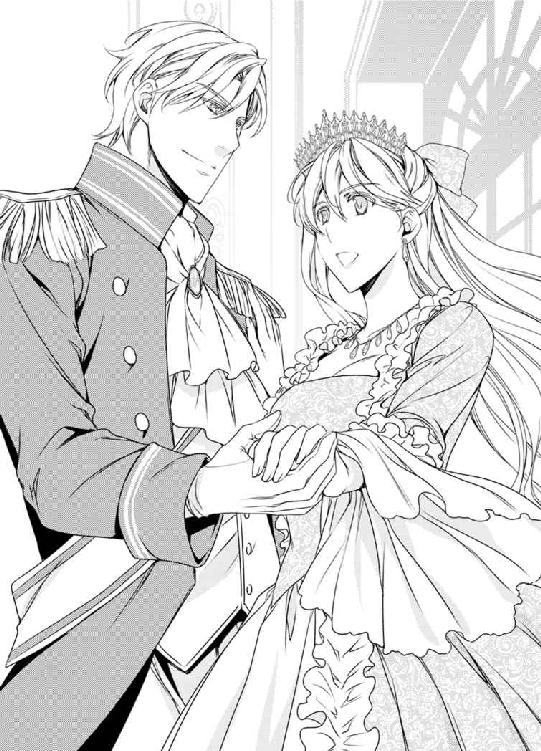
「よかった。笑顔になっているね。最近ずっと、憂鬱そうな顔をしていただろう。心配していたんだ」
「アレクシス。内輪の舞踏会を開催してくれてありがとう。ドロシーまで招待してくださるなんてうれしいわ」
ダンスをしながら会話する。
「どういたしまして。僕のかわいい奥様のためだからね。内輪とはいうものの、僕の騎士ギルドの仲間や、義姉さんの友達や、ルシアンやキャロラインさんの友達とかも呼んでるんだよ。あんまり人がいないとさびしいだろうしね」
「そうなのね」
「今日の君はいつにも増して美しい。もう一度好きになりそうだ」
「ふふっ」
「そんなに笑わないでくれ。私の女神」
ステファニーは吹き出した。
「ルシアンから聞いた。お茶会でイザベラ嬢が、君に暴言を吐いたそうだね」
「えっと、そのう、そうなの......」
「仮面舞踏会で、イザベラ嬢に先にダンスを申しこんだのは、彼女がトラブルを起こしていたからだよ。私がダンスを申しこむと、ヒステリーを起こしてる女性をなだめる効果があるんだ」
「そうだったの......」
「そうだ。ステファニーは、イザベラ嬢をうまくなだめていただろう？ なんて人当たりがよくて頭がよくてかわいい人だと思ったんだ」
スロースロークイッククイック、サイドシャッセ、マンボ、ボックスステップ。
ダンスのステップを踏みながら、ステファニーは夫の顔を見た。
「君に一目惚れをしたんだ。だから君にダンスを申しこんだ。本命に断れて仕方なくというわけではないよ。ステファニーが好きなんだ。僕の女神は君だけだ」
うれしさのあまり泣きそうになった。
なんというキザな王子様だろうと思いながらも、彼は太陽のように光輝いて、ステファニーまでも輝かせる。
「イザベラ嬢は君に嫉妬しているんだ。妃殿下という立場は、女の嫉妬を集めてしまうのだが、君ならうまくかわしてくれると思ったんだ」
「そうだったんですか。なのに私ったら、落ちこんでしまってよくないですね。イザベラさんのような強さがほしいですわ」
「イザベラ嬢は強いのではなくて強引なだけだよ。イザベラ嬢は僕ではなく僕の身分とお金が好きなんだよ」
そうかもしれない。アレクシスが狩人の格好でダンスを申しこんだとき、イザベラはすっとその場を離れた。
「イザベラ嬢のような令嬢はたくさんいたよ」
「まあ。そうなんですか？」
「僕自身を好きになってくれたのは君だけだ。愛しているよ。僕の美しい女性。僕の天使」
飴を転がすような甘い言葉なのに軽薄に響かないのは、触れあっているところから彼の真剣さが伝わってくるからだろう。
──私はほんとうに愛されているのね。
不安になることなどなかった。
胸の奥が熱くなる。
「私も、私も、愛していますわ......」
瞳がうるんだ。
感情があふれてしまいそうになる。
「泣かないで。綺麗にしていて。イザベラ嬢が来たよ」
「えっ!? 内輪の舞踏会のはずじゃ......？」
入口のところで、扉を守る武官と言い争いする声が聞こえてきた。
「お嬢様、招待客しか入れないことになっています」
「私はアジャニー伯爵令嬢イザベラです。道を開けなさい！」
イザベラは派手なドレスを着ていた。
ぱっと目を引く華やかさがあるが、下品さを感じさせられる深紅のドレス。
深紅のルージュを縫った唇の端に、勝ち誇った笑みが浮かんでいる。
イザベラは、ステファニーとは真逆だ。
自分に自信があり、選ばれるのが当然だと思っている。
「舞踏会を聞きつけてやってきたんだろうな。僕の騎士ギルドの仲間を呼んだから、情報が漏れてしまったんだろう。完全な内輪の会にするべきだった」
アレクシスは、踊りながら言った。
踊りは軽快なワルツである。踊りの輪がいくつもできて目に綾だ。ルシアンとキャロラインも、両親も踊っている。
「私がイザベラさんに挨拶しますわ」
「大丈夫かい？」
「エクレールとだって仲良くすることができたのよ。私にまかせてください。妃殿下として、アレクシスを支えますわ」
ステファニーは、困難が起これば立ち向かわずに逃げ出してしまう。
悪い癖だと母にも言われた。
お茶会でアレクシスと再会し、怖くて逃げ出した。
プロポーズされながら、私にはとても無理だと尻込みをしてしまって、修道院に逃げこんだ。
だが、逃げてはいけないのだ。
──私は妃殿下なんだもの。
曲が終わった。
ステファニーは組を解いておじぎをした。
「早く入れなさいよ。無礼者！ 私を誰だと思っているの!? アジャニー伯爵令嬢イザベラなのよ！」
武官は困った表情を浮かべていたが、やがて声を張りあげた。
「アジャニー伯爵イザベラ令嬢、おでましでございます」
皆の視線がイザベラに集中している。
イザベラは、挑むような表情で笑っていた。
ステファニーは、笑みを浮かべると、背筋を伸ばしてイザベラのもとへと歩み寄った。
ふたりの視線が絡み合う。
──私は綺麗。私は妃殿下。私はプリンセス。
──私はアレクシスに愛されている！
──妃殿下としての責任を果たさなくてはならないの!!
みんながステファニーを見ている。
国王夫妻も、アレクシスも、ドロシーも、騎士たちも令嬢たちも、メイドも、宮廷楽師も、両親も、ステファニーを見ている。
──堂々と歩くのよ。
──負けちゃだめ。ひるんじゃだめ。私は美しい。
──私は逃げない！
深呼吸しながらゆっくりと歩くことで、神経が研ぎ澄まされていく。ささやき声が聞こえてきた。
『妃殿下はなんて美しくていらっしゃるのかしら！』
『綺麗な人だよな』
『結婚式のときは、初々しいところがかわいかったけど、今はおちついていらっしゃって、まさにプリンセスって感じだね』
『すてきなドレスね』
『あのドレス、ご自分で作ってらっしゃるそうよ』
『いいわね！ 私も似たようなドレス、作ってもらおうかしら』
『派手じゃないけど清楚で上品なデザインよね』
『何て大きなサファイア。お似合いになるわ』
『さすが我が国の妃殿下だよな』
皆の注目が集まっている。
いつもなら逃げ出していただろう。
だが、今は怖くない。
アレクシスが自信をくれた。光輝く神のような彼が、ステファニーまでも輝かせてくれたから。
ステファニーは、イザベラの前で足を止めた。
イザベラの青い瞳が、ステファニーを見つめている。
イザベラの表情に、ほんのわずかに怯えが走ったのが見て取れた。
お茶会で彼女は言った。勝っているのは私だと。
勝ち負けで判断する彼女は、ステファニーに負けたと思っているのだろうか。
「イザベラさん。来ていただいてうれしいわ！」
ステファニーは、弾んだ声でいい、笑みを浮かべた。
彼女の両手を握って前後に振る。
さっき、メイドのドロシーにしたのと同じように。
「妃殿下におかれましてはご機嫌うるわしく」
イザベラの瞳が気弱そうにさまよったのを、ステファニーは見逃さなかった。
あのイザベラが、ひるんでいる。
ステファニーの堂々としたプリンセスぶりに圧倒されているのだ。
アレクシスが目を細めてステファニーを見て、うんうんとうなずいている様子が見えた。
そうだ。これでいい。妃殿下として、愛想良く、愛らしく、かわいらしく。
「イザベラさんも元気そうでうれしいわ。お茶会以来ね」
「お茶会は楽しかったですね」
イザベラが、笑顔の形に表情を歪ませながら言った。
瞳がギラッと輝いた。
いつものステファニーならひるんで逃げ出しているところだ。
「そうね。あのときは楽しかったわね」
イザベラがビクッとした。
言葉の刃で傷つけてやったつもりなのに、楽しかったと言われて驚いているのだろう。
「今日はたくさん踊ってくださいね。楽しい時間を過ごしていただきたいの」
ステファニーはにっこり笑った。
イザベラが勝ったつもりでいても、アレクシスの妻は私だ。
妃殿下は私だ。
泰然として。
堂々と。
イザベラはステファニーに向かい、貴婦人の礼をした。
わぁっと歓声があがった。びっくりして振り向くと、アレクシスとドロシーが手を取り合って踊っていた。
ドロシーは頬をピンクに染めて、とろけるような表情を浮かべている。
「ふふっ。アレクシスったら。ドロシーは私の実家のブランシュ伯爵家のメイドなの」
「メイドが王子殿下と踊るなんてありえないわ」
「だって内輪の舞踏会ですもの」
あなたは内輪の人間ではない、と聞こえたのだろうか。
イザベラはブルブルと震え始めた。
「伯爵家の令嬢である私をバカになさっているの!?」
王子殿下がドロシーと踊っても、それはイザベラをからかっているわけではないのだが、彼女を怒らせてしまったらしい。
顔が真っ赤になっている。
「バカにしていないわ。せっかくの舞踏会ですもの。楽しんでくださいね」
ステファニーはおだやかに言った。
プライドの高い彼女のことだから、踵を返して帰るものだと思っていたのに、意外にも彼女は壁際に立ち止まった。
いかにも悔しそうにしている。
ステファニーはイザベラに背を向けると、王子殿下に向かって歩いていった。
ドロシーと組を解いたアレクシスが、こちらに歩み寄ってくる。
ステファニーは、ていねいな礼をしてから手をつないだ。
曲に合わせて踊り出す。曲は軽快なワルツで、くるくると回転する。
「楽しいわ！」
「イザベラ嬢が、ダンスを申しこまれているよ」
アレクシスがささやいた。
イザベラが、二枚目の騎士にダンスを申しこまれている。
意外にも、イザベラは、膝を折っておじぎをすると、彼の手を取った。
「よかった。イザベラさんにも舞踏会を楽しんでいただきたいわ」
「楽しそうだよ。イザベラ嬢」
「そのようね」
「彼は優秀な文官でね。イザベラ嬢とお似合いだね。一緒に踊っただけで恋愛に発展するとは限らないんだが」
「あら、私たちは、一緒に踊っただけで恋愛に発展しましたわ」
「そうだね。楽しくすごそう。次の休みはテニスと遠乗りだ」
「楽しみですわ」
ステファニーは、踊りながら話した。
舞踏会はまさにたけなわだった。
☆
「乾杯」
アレクシスのグラスと、ステファニーのグラスを軽く打ちつけると、チンと澄んだ音が響いた。
彼はナイトキャップをかかさない。
アルコールは日によってワインだったりブランデーだったりするが、今日は、アレクシスはウイスキー、ステファニーはオレンジジュースでブランデーを割ったカクテルだ。
「おいしいわ」
甘くて酸っぱい液体が、喉を滑り落ちていく。いくらでも飲めてしまいそうだ。疲れた身体に染みるようだ。
ランプの明かりにグラスを透かせながら軽く揺すると、透明感のあるオレンジがたゆたって美しい。
「今日はありがとう。アレクシス」
「とんでもない。疲れただろう？」
「そうね。疲れたわ。でも、楽しかった。心地良い疲れよ」
「今日の君は立派だったね。イザベラ嬢が怒っていたけど、あれは何だったんだ？」
「アレクシスがドロシーと踊っていたから、バカにしてるって怒っていたの。私、てっきりお帰りになるかと思っていたのに、舞踏会に留まっていらっしゃったわ。強い方ね」
「アジャニー伯爵は、北に中規模の領地があるんだが、燕麦が不作で領地収入がマイナスになっておられるそうだ」
「マイナスですか？ 領地収入がなくなることはあっても、マイナスになることは考えられませんわ」
お茶会で聞いたばかりだ。小麦は豊作だが、燕麦が不作だと。
ブランシュ家は、先々代で領地を手放してしまったため、領地経営の苦労は知らないが、領地収入は変動が激しいと聞く。だが、それでも、マイナスになることはない。
「アジャニー伯爵家はいい領主でね、領民を飢えさせずにおくため、税を取らないばかりか、小麦を買って領民に配給しているそうだ」
「領民全員にですか」
「そうらしい」
「イザベラさんが一生懸命になっていらっしゃったのは、実家を助けようとしてのことだったのですね」
「そうだな。イザベラ嬢には、歳の離れた妹がいるんだが、アジャニー伯爵家は妹に嗣がせて、自分はいいところに嫁に行き、婚家に助けてもらおうとしていたんだろうな」
「ご立派ですね」
「そうだな。でも、僕は、僕の身分や金と結婚したがる令嬢は好きじゃない」
「アジャニー伯爵家はどうなるんですか？」
「北の地方の領地を持つ貴族には、税の免除と補助金の優遇策を施行するよう、文官に働きかけているところだ。これも、君がお茶会で貴族の噂話を聞き出してくれたおかげだよ。それにイザベラ嬢も、舞踏会でお相手を見つけたようだよ」
イザベラは、不満そうな表情を浮かべていたが、間もなくダンスに誘わて踊りだした。はじめはつんとしていたが、よほどお相手と相性があったのか、楽しそうにしていた。
「イザベラさん、ダンスしてらしたけど、あの方ですか？」
「ああ、官吏登用試験で合格して文官になり、貴族の称号を得た平民だが、才気煥発で二枚目だ。彼ならイザベラ嬢にお似合いだ。領地経営もうまくやると思うよ」
「官吏登用試験ですか。すごいですのね。イザベラさんが身分の差を気にしなかったらいいのですが......」
「人のことはもういいじゃないか。ふたりの時間を楽しもう」
アレクシスが手を握ってきた。
ステファニーの手を引き寄せ、重ねた指にキスをする。
「愛しているよ。僕の奥さん。君は、最高の妃殿下だ。美しく、気配りができて、堂々としている」
「あなたのおかげです。アレクシス」
アレクシスが太陽のように光輝いているから、その光がステファニーまでも輝かせる。
ステファニーは逃避癖があった。苦手なことには尻込みし、いやなことには立ち向かわずに逃げ出した。
だが、ステファニーは、うすらぼんやりした、行動力のない人畜無害のお嬢様ではない。
お茶会や舞踏会といった社交界には行かなかったが、工房に入り浸り、掃除の手伝いをしたり、裾を縫わせてもらったりしながら縫製を覚えた。
自己評価より、アレクシスの評価が高くてとまどっていた。愛しているとささやかれながら、ほんとうに私でいいのかと思っていた。
だが、ステファニーは、美しく、気配りができて、堂々としている、最高の妃殿下だ。
私は自信を持っていいのだ。
「僕は何もしていないよ。君は最高だ」
アレクシスはステファニーを抱きあげると、ベッドにそっと仰向けにさせた。
彼が覆いかぶさってきた。唇にチュッとキスをする。
「今日は君を離さない」
「はい」
「朝まで君を寝かさないよ」
「ふふっ」
「あ、笑ったね。どうせ僕は、君の見事な身体に溺れるだけの子羊さ」
「もうやめてください。アレクシス、くすぐったいですわ」
「今日はそのう、一緒に寝てくれるよね？」
「はい」
「よかった。僕には、君だけがいればいい」
「王子殿下がそんなこと言っちゃだめです」
「言い直そう。世界でいちばん君が好きだ」
唇を奪われた。
むさぼるような激しいキス。
甘くてせつない、ディープキス。
「んっ......んっ......」
舌を絡め、お互いに深いところを探り合うようなキスを続けていると、身体がとろり、とろけていく。
彼の手は乳房に当たり、ナイトドレスの上からふくらみを揉んでいる。
息が止まるほどの熱いキス。
痺れるほどに長く口づけをしてから唇を放す。
アレクシスは、首筋から鎖骨へとキスの位置を変えていき、鎖骨のへこみをぺろっと舐めた。
「あぁっ」
思ってもいなかったところに受けた甘い愛撫に思わず声があがってしまう。
「君の身体は温かいミルクを固めたみたいだ。汗の雫さえもかぐわしい」
彼は乳首を舐めるのではなく、ステファニーをうつぶせにさせると、背筋のへこみを舐め始めた。
柔らかくて熱く、それでいて硬い舌が背筋を舐めていくと、身体の芯にぶるぶるっと戦慄が走った。
ムズ痒いような、それでいて気持ちがいいような、不思議な感触だ。
「あぁっ、ああっ、あぁあああぁっ」
「今日の君はずいぶん激しいね。そうか。背中が感じるんだね？」
「い、いや、そんな、恥ずかしい......」
うなじや背中、肩胛骨や腋の下、脇腹やお尻の山を指先でつつーっと撫でさすられる。
「あっ、......んっ、んんっ......はぁっ......」
押さえても押さえても声が漏れる。
ステファニーは、白い肌をピンクに染めて悶えた。乳房や秘部をいじられているわけではないのに、指先だけのペッティングに高まって、身体がとろとろ、溶けていく。
袖を通したままのナイトドレスが中途半端に脱がされて、しどけない格好になっている。いっそ全裸のほうが恥ずかしくないのではないかと思うほどだ。
アレクシスは、何を考えているのか、お尻の山にタッチするとスルスルッと撫でさすった。
「あっ......あぁ......んっ......」
お尻なんてあんまり感覚のないところだと思っていたのに、ゾクゾクするような快感が背筋を伝って脳天から抜けていく。
「ステファニーは、お尻の形まですばらしい。君のような完璧な身体を持つ女の人は、他に知らない」
身体を褒められるのは、うれしいような困ったような気分になる。
彼はお尻を両手で揉んだ。
「僕はなんて幸運なんだ。君のようなすばらしい女性を妻にできるなんて」
うわずった声が、彼の興奮を示していた。
「んっ......はぁ......あぁ......っ」
お尻を揉まれると、腰の奥が熱くなってきて、下腹の奥がきゅんきゅん疼く。蜜液があふれて落ちる感触がわかる。
──ああ、どうしよう。このままじゃ......。
花襞が架空の男根を求めて空しく締まる。
「お尻だけ......なんて、は、早く......して......。アレクシス......お、お願い......あぁ、いや......いやいや、恥ずかしい......っ！」
ステファニーは、挿入をねだってしまったことに気がつき、激しく恥じ入った。
うつぶせになったままで両手で顔を覆ってイヤイヤをすると、彼の手がステファニーの右足首を持った。
「きゃあっ」
ムリヤリに仰向けにされた。ステファニーの膝を腰で割り、彼が覆いかぶさってくる。
いつもなら執拗にペッティングして、ステファニーを疲労させるのに、今日は秘部へのキスもなかった。
秘裂に添って前後しながら秘口を探していた先端が、ずぶっと入りこんでくる。
「んっ......っ」
灼熱の楔が、花襞を掻き分けながら奥へと進み、やがて膣奥に到着した。
アレクシスが腰を前後に動かした。行き止まりをグイグイと先端で押されて、息が止まりそうになる。
「だめ......深い......奥、苦しい......っ」
「うっ、君の身体は、......くっ......最高だっ。絡みついてくるっ」
ステファニーは、意識的に花襞をキュッと締めた。
息苦しさのあまりだった。
「うぅっ」
膣奥がどくんと熱くなった。
「くーっ」
先端が精液を吐き出している。
え？ もう？ と驚くほどの早さだった。
「うっうぅっ......」
身体の奥に、熱いものが染みていく。
「ふーっ」
アレクシスが満足そうなため息をついた。
「すまない。そのう、君と一緒に眠れないものだから、溜まっていたんだ......。あはは。こ、こんなに早く出してしまうなんて......。恥ずかしいな」
照れくさそうに言うところがかわいい。
ステファニーを見下ろしてくる王子殿下の顔は、まるで少年のように恥じらっている。
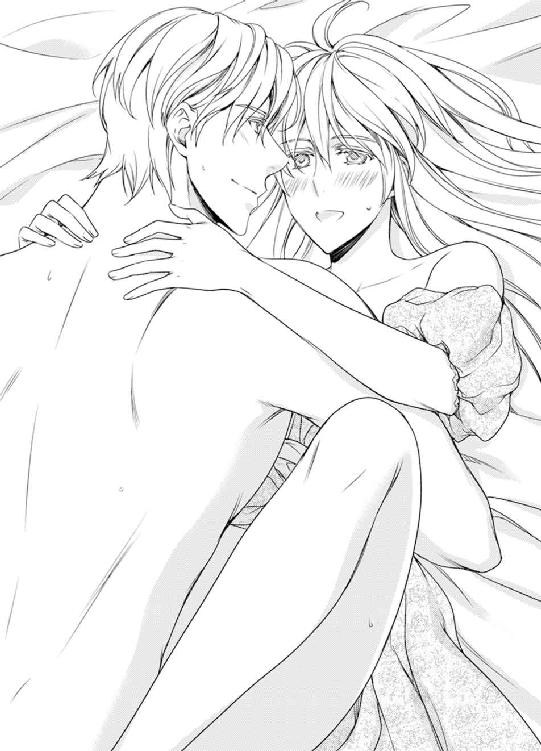
「いいのです。アレクシス。幸せです」
両腕で彼の後頭部を抱き、頬に頬を当てて甘えると、アレクシスが再び腰を動かし始めた。
「つ、次は、君を、もっと......っ、うっ、うぅっ」
彼は、王子殿下らしくもなく、少年のようにムキになっている。
ステファニーが彼を少年にしているとだと思うと、胸の奥に満足感が広がっていく。
「愛しています。愛しています。アレクシス」
「開いているよ。僕の奥さん。僕の美しいひと。僕の女神」
アレクシスは、腰を動かすことをやめて、上半身を倒すと、乳首を舌先でれろっと舐めた。
「あぁっ！」
前戯では、乳房の愛撫はなかったので、乳首の刺激は強烈だった。
身体がぶるっと震えてしまう。
「うっ......うっ......」
アレクシスは、顔を汗まみれにして腰を前後しはじめた。
身体全体がゆさゆさと揺すりあげられて、脳裏で火花がチカチカする。
頭が前後に振られることで、意識があいまいになってくる。
身体の奥で、彼の男根がいっそう大きさを増している。
「うっ......あぁ、だ、だめだ......も、もう、出そうだ......っ」
彼は切羽詰まった声をあげた。
腰の動きが速くなってきた。
アレクシスは早く出してしまうと恥ずかしいと思っているようで、赤く染まった顔を歪めている。
すでに射精されているせいで、精液が潤滑油になり肉茎の動きはなめらかで、奥を突かれるたびに身体にヒクッと痙攣が走る。
フッと意識が途切れては、彼に揺すり起こされている。
「私も......私も......もう、もう......」
「ウッ」
膣奥で熱い液体がしぶいた。
「うっ、うぅっ......くっ」
彼は動きを止めると、ステファニーの身体の奥深くに向けて射精を続けた。
「ぁあっ！」
ステファニーは絶頂を迎えた。身体全体をクッと硬くさせ、背中を弓なりに反らせて硬直する。
視界がブツッと暗くなった。
意識が戻ったのは、彼がステファニーのおでこにキスをして、愛の言葉をささやいたときだ。
「愛しているよ。私の奥さん」
「大好きです。あなた」
身体を離してなお、下腹の奥が熱い。
身だしなみを整えてから、彼と身体を寄せ合って眠りにつく。
「子どもができていたらいいですね」
「君にそっくりな、かわいい女の子が生まれたらいいね」
「私は男でも女でも、どちらでもかいませんわ」
ステファニーは、アレクシスの体温を感じながら眠りについた。
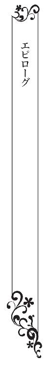
ステファニーはドレスを縫っていた。
コットンレースをふんだんに縫いつけたドレスは、ミニチュアのように小さい。だから縫製は気をつかう。縫い目をなるべく小さくしたい。
ノックの音がした。
「妃殿下。マリアンヌです。入ってもよろしいですか？」
メイドの声だ。
「よくてよ」
「妃殿下に招待状です」
マリアンヌがトレイに乗せて差し出した手紙は開封ずみだ。それはつまり、目下のものからの手紙であることを示している。
王族から送られる手紙はそのままだが、庶民、あるいは貴族からの手紙は文官が開封し、内容を確認し、陳情は外してから王族に渡すからだ。
「何かしら？」
招待状を見たステファニーは驚きのあまり目を見開いた。
「イザベラさんの、結婚式の招待状なのね！」
ステファニーにわざわざ送ってくるところが、イザベラらしい。
「お相手は誰かしら？」
「官吏登用試験に合格し、文官になった騎士ですが、二枚目でメイドのあいだでも人気なんですよ」
──あの方だわ。よかった。
出席したいところだが、身体が許してくれないだろう。
「欠席で返事をしてね」
「はい。そのようにいたします。妃殿下は大事なお身体ですから」
ステファニーは妊娠していた。
まだお腹は目立ってないが、あと半年もすればアレクシスとステファニーの子どもが生まれる。
「でも、お式には、お祝いを贈ってほしいの。プレゼントは何がいいかしら......」
お花を贈りたいところだが、ステファニーは花など喜ばないだろう。
「文官にお任せください。伯爵家の令嬢にふさわしい贈り物を、王弟殿下と妃殿下の名義で贈ります」
「そうね。お任せするわ」
イザベラは友達ではない。文官が選ぶものは儀礼的な贈り物になるが、そのほうがいいだろう。
「妃殿下。お疲れではありませんか。お茶を淹れましょうか？」
「そうね。ミントの葉を浮かせた甘いお茶が飲みたいわ。でも、今日は舞踏会だから、マリアンヌも忙しいでしょう？ 私のことは気にしないで」
王宮は、舞踏会につきものの、華やかな混乱の中にあった。
部屋に籠もって裁縫にいそしんでいるステファニーも、メイドたちが忙しがっていることはわかっている。メイドであるマリアンヌは多忙なはずだ。
「ご心配ありがとうございます。大丈夫ですよ。私は妃殿下付きのメイドです。妃殿下のお世話をするのが私の役割でございます」
「そうなの。ありがとう。だったら、一緒にお茶を飲みましょう」
「私はメイドです。妃殿下とお茶なんてもったいない」
マリアンヌは、ぶるぶると首を振ると、怖いものでもあるかのように後ずさった。
「だったら命令します。私と一緒にお茶を飲んでください」
「光栄です。妃殿下。お茶を用意して参ります。お茶請けは、タルト・オ・シトロンがいいですね」
「そうね。お願い」
妊娠してから味覚がおかしくなっていて、甘酸っぱいものがことのほかおいしく感じられる。
「失礼します」
マリアンヌが下がっていった。
ドアが開いて閉まった一瞬、廊下を忙しそうに行き交うメイドたちが見えた。
ノックの音がした。
「マリアンヌなの。早いのね」
「僕だよ」
アレクシスが入ってきた。
彼は腰に儀礼用宝剣を下げ。腰に帯を巻いた騎士礼装だ。
肩から金のモールがいくつも下がった騎士服は、アレクシスを美しく彩っている。
なんと格好良い青年なのかと、見とれずにはおられない。
「ああ、立たなくていい！ 君は大事な身体なんだからね!!」
「すみません。舞踏会を欠席してしまって」
「僕と兄上がきちんとするから大丈夫だよ。君はゆっくりしてくれたまえ」
「ありがとうございます」
ステファニーは恐縮した。
ロレイン王妃陛下は出産したばかりで、まだ舞踏会には出られない。
ミルクール王国は、王子誕生に沸き立っている。
ステファニーの妊娠は、安定期に入ってから発表する予定になっているが、慶事の連続に王国じゅうが華やぐことだろう。
「だいぶできてきたんだな」
「はい。あと数日でできますわ。赤ちゃんのものは、全部私が作りたいの」
ステファニーは産着を縫っていた。
トーションレースのほうが華やかだが、赤ん坊のものだから、手触りがいいコットンレースにした。布はコットンで、縫い目を内に出さない特殊な縫い方をしている。赤ん坊の柔らかい皮膚を守るために。
ノックの音がして、文官の声が廊下から聞こえてきた。
「王子殿下、そちらにいらっしゃいますか？ そろそろ舞踏会にお出ましを願います」
「わかった。すぐに行くよ」
アレクシスは、つまらなそうにため息をついた。
「そんな顔をなさらないで」
「そんな顔もするよ。僕の奥さんと子どもとの大事な時間を、化粧の厚い、香水のきつい令嬢たちとのダンスに費やすんだから」
「落ち着いたらまた、お茶会と舞踏会に出ます」
「無理をしなくてもいい。社交より、君のほうが大事だ」
アレクシスはステファニーのお腹に手を当てた。
「不思議だな。僕とステファニーの子どもが、この中で育っているなんて。男かな？ 女かな？」
「どちらでもいいですわ。元気に生まれてくれたらそれでいいの」
「そうだね」
ステファニーは、縫いかけの産気をテーブルに置き、彼の手に自分の手を重ねた。
再びノックの音がした。
「殿下。早くお出ましを」
「わかった！」
アレクシスは名残惜しそうに手を離すと、ステファニーに対して、大げさなほどの騎士の礼をしてから、部屋を出て行った。
「ふふっ」
ステファニーはくすくすと笑った。
ドアが締まる一瞬、彼が表情を改めたのが見て取れたからだ。
ほんとうのアレクシスは、お酒が好きでエッチなところもある普通の青年なのだが、すましていると凛とした王子殿下に見える。
舞踏会に出席する令嬢たちは、アレクシスに憧れの視線を向けることだろう。彼は見事な王子様ぶりで令嬢のため息を誘うのだ。
「マリアンヌです。入ります」
「どうぞ」
マリアンヌがワゴンを押して入ってきた。
ワゴンの上には茶器の用意がしてあるが、ウエッジウッドはワンセットで、マグカップが伏せてある。マリアンヌ用のカップだ。
マリアンヌは慣れた手つきでステファニーのぶんの茶器をセットした。
そして、流れるような手つきでお茶を淹れていく。
ティーサービスはメイドの必須要素だが、彼女はさすがに上手だった。
「どうぞ。妃殿下」
カップに注がれた紅茶からは、香しい匂いが漂っている。
「ありがとう。いただきます。マリアンヌも飲んでよ。タルトは私のぶんしかないのね。だったら半分こしましょう」
「もったいない。おかわりをもらってきます」
「あら、私がたくさん食べてると思われるわ」
「妃殿下は妊娠されているんだから、たくさん食べていいんですわ」
部屋を出たマリアンヌは、光の速さで戻ってきた。
「早いわね」
「妃殿下をお待たせするわけにはいきませんから」
彼女は息を荒げている。
同じテーブルにつき、お茶を飲む。
「ぬるくなっていますね」
「でも、おいしいわね」
「自分で淹れたお茶を飲むことはめったにないので、味がわかってよかったです。同席の栄誉に預かり光栄です」
「ふふっ。そんなに大げさに言わないで」
ステファニーはタルト・オ・シトロンを食べた。
レモンカートの酸っぱさが、今のステファニーには格別においしかった。
「おいしいわ」
「ほんとですね」
「妃殿下はつわりがそれほどなくてよかったですね」
「そうね。でも、遠乗りやテニスができなくて残念だわ」
「お休みごとに遠乗りをされていましたものね」
「そうなの。私、乗馬もテニスも得意なのよ」
「それはようございました。そういえば妃殿下。私、さっき、舞踏会場の前を通ったのですけど、妃殿下の水色のドレスと同じデザインのものを着てらっしゃるお嬢様が、たくさんいらっしゃいました」
「まあ！ ほんとなの？ 私が、舞踏会で着たドレス？ あのドレスを、みなさんが着てらっしゃるというの？」
「ええ。ほんとうです。見に行きますか？」
「それは......ちょっとはしたないわ。みなさんに見つかったら、どうしていいかわからないし。私の妊娠はまだ秘密にしているのだし」
「二階の窓からだったら、舞踏会場を見下ろせますよ。ここからなら、五分も歩けば到着します」
「ほんとう！ 行きたいわっ」
ステファニーはお茶を飲み干すと、いそいそと席を立った。
「妃殿下、気をつけてくださいね」
心配そうなマリアンヌに先導され、廊下を歩く。
メイドたちが道の脇に立って先を譲る。
「こちらなんです」
マリアンヌは、カーテンを少しだけ開けた。
いつもカーテンが閉まっていたので気がつかなかったが、なるほど舞踏会場を見下ろせる。
ステファニーのドレスと同じようなデザインが散見される。ざっと見た感じ、二十人ほどはいるだろうか。
「ほんとだわ......」
「みんな妃殿下に憧れていらっしゃるのですよ」
妃殿下はファッションリーダー。
その美しさやドレスのセンスにおいて、令嬢や国民の憧れの存在でなくてはならない。
結婚する前は、とてもできないと思っていた妃殿下の役割を、ステファニーは十二分にこなしている。
お針子になりたいと思っていた。ステファニーが作ったドレスで、女性をかわいく彩りたいと思っていた。
ステファニーのドレスを着た令嬢がこんなにいる。
──私は夢をかなえられたんだわ。
感動とうれしさで、頭の芯がぼうっとなる。
「アレクシスがいるわ」
令嬢をエスコートしてダンスする彼は、我が夫ながら格好良かった。
舞踏会場のほとんど全ての女性が、アレクシスに憧れの視線を送っている。
「みなさん、王子殿下を見てますね」
「そうね」
メイドは給仕のあいだにちらちらとアレクシスを見ているし、令嬢は頬を染めてアレクシスを見つめている。
ため息が聞こえてくるようだった。
舞踏会場での主賓は夫だった。
アレクシスは、会場の視線を集めながらも、涼しげな表情で踊っている。肩から下がっている金のモールと金髪が揺れて、彼の全身が光輝いているように見える。
アレクシスは、女性のあこがれを誘ってやまない王子殿下だった。
女なら全て、老いも若きも、身分高きものも低きものも、王子殿下に夢中にならずにはおられない。
ふと、アレクシスと目が合った。
彼は「愛しているよ」というふうに、目配せを交わしてきた。
ステファニーは顔の横で手を振って「わかってるわ」と合図した。
彼はうなずくと、再び、パートナーの女性を見つめながらダンスをはじめた。
舞踏会場にいられなくても、彼を夢中にさせているのはステファニーだけだ。
ステファニーは、妃殿下の私室に向かって歩き出した。
あとがき
はじめまして。わかつきひかるです。
この小説は、手芸が好きなヒロインが、王子殿下に見初められて結婚してラブラブ新婚生活を送るという内容です。
ヒロインは妃殿下になるわけですが、結婚相手は王の弟なので、妃殿下の責任もそんなに多くありません。
王弟殿下って、キャラ属性としては悪巧みしそうでマイナスイメージがあるのですが、結婚相手としては立場も軽いし、それでいて王子様だし、理想的だよなぁ、と思っています。
手芸をしながら書きました。
最近、手芸が好きになって、ミシン買ったりしたんですよ。
最後になりましたが、麗しいイラストで私のつたない小説を飾って頂けましたＯＤＥＫＯ先生、編集部のみなさん、校正の先生、流通のみなさん、書店員さん、この本の出版に携わって頂きました全ての方にお礼を申し上げます。
そして、この本を買ってくださったあなた。あなたにお礼を申し上げます。
楽しいひとときを過ごして頂けましたら幸いです。
それではまた、どこかでお逢いしましょう。
わかつきひかる拝
二〇一六年八月一二日
「工房のお針子令嬢」
ステファニー・ブランシュは、カウンターに肘をつき、工房の様子に見とれていた。たくさんのお針子が、いっせいに針を動かす様子は壮観だ。
大きなテーブルでは、布に型紙を置いてチャコペンシルで型を写している人がいるし、鋏を動かしている人もいる。仮縫いができたドレスを人体に着せかけている人もいる。
「お客さん。何かお求めですか？」
ドレス工房のマダムが聞いた。
「今は欲しいものはないの。邪魔はしないから見せて頂くことはできないかしら？ みなさんがドレスを縫うところを見たいんです。丁寧だし、早いし、みなさんの手が美しいから」
マダムは迷うように目を泳がせた。
「いいよ。お嬢さん。手が美しいなんて言われちゃ、断れないよ。マダム、見るぐらいいいだろう？ 許してあげておくれな」
布を裁断しているお針子が言った。
「仕方ないね。いいよ。許可しよう」
「ありがとう！ 見せて頂くわね」
ステファニーは、工房の隅の椅子にちょこんと座った。
「あんた毎日見に来てるだろう？ ドレスが好きなんだね？ 貴族のお嬢さん」
「ええ。大好きよ。私もお針子になりたいわ」
「あはは。令嬢がお針子なんてなれないよ」
「そうね。あなたがたがうらやましいわ。......あ、掃除ね。私にさせて」
ステファニーは、若いお針子がほうきを持ったのを見て、さっと立ち上がった。
「助かるよ。貴族のお嬢さん」
「雑用なら私もできるわ。私に手伝わせて」
「だったら裾をまつってみるかい？」
お針子のひとりが言った。
「させて頂けるの!? うれしいわ」
「売り物だよ！」
マダムがすかさず注意をする。
「だったら、私、買います。私が買うドレスを、私に縫わせてください」
「それはいいね。それなら商売だ。ただしドレス代は金貨二十枚だ」
「マダム、それはドレス二枚分だ。がめついよ」
お針子のひとりが言った。
「何ががめついものか。お嬢様の気まぐれで、うちのお針子の手が止まるんだよ。指導料は前払いだよ。いいね」
ステファニーは頭の中で計算をはじめた。ブランシュ家は伯爵だが、先々代に領地を手放しているため、父の年金と、弟が文官として働く給与しか収入がない。
ステファニーが自由に使えるお金はわずかで、金貨十枚ドレス一枚分ぐらい。
母はステファニーがおしゃれすることに寛容だから、頼めば出してくれるだろう。
「わかったわ。マダム。明日持ってくるわ」
「よかったね。お嬢さん。日参したかいがあったね」
☆
──翌日。
ステファニーは、マダムに金貨を差し出していた。
「マダム。金貨よ」
「まいどあり。確かに二十枚だ」
「それからこちら、ビスキュイなの。我が家のコックが焼いたのよ。たくさんあるから、休憩時間にみなさんで食べてくださいね」
「ありがとう！」
工房のお針子たちが口々にお礼を言った。
「キャリー、教えてあげな。キャリーはお針子頭だから、一通り教えられるよ」
「はい」
「キャリーさん。お願いします」
「まずサイズを図るところからはじめるんだ。バストトップとウエスト、それにヒップ、私で図ってごらん。ああ、だめだめ、メジャーが緩んでいるじゃないか。これだときちんとした型紙は取れないよ」
「サイズに合わせて型紙を起こすのね？」
「ほんとうはね。でも、ウチみたいな、安い早いをウリにしているドレス工房では、サイズに合っている型紙を選び出すんだ」
「だったら、ドレスのデザインを決めて、サイズに合わせて型紙を作るところから教えてくれない？」
「デザインはマダムがしてるんだ。型紙はパタンナーのエリサに教えてもらうほうがいいね。マダム、エリサ、いいよね？」
「いいよ。お嬢さんからは金を貰っている。これは商売だ。お嬢さん、これに、着たい服のイメージを書いてごらん」
「こんな感じかしら？」
「ダメだ。デザイン画は、デザインがわかるように描くんだ。これじゃ、ドレープがどこからできてるかわからないだろう？ こんな感じで......」
「マダム。すごいわ。工房のドレスのデザインはマダムがしているのね？」
「私は流行りそうなデザイン画を書いてるだけさね」
「流行を作る人になりたいわ。流行って誰が決めるの？」
☆
「ふふっ」
ステファニーは、ドレスの裾をまつりながら思い出し笑いをした。
「どうなさったのですか？ 妃殿下」
王弟殿下夫婦付きのメイドのマリアンヌが、お茶を淹れながら聞く。
ここは王宮の一室だ。
「ドレス工房で、マダムやお針子さんたちにドレスの縫い方を教わったときのことを思い出したの」
「まぁ。貴族の令嬢が工房で縫い方を教えてもらったのですか？ 妃殿下は積極的でいらっしゃいますね」
「流行は誰が決めるの？ ってマダムに聞いたのよ」
「妃殿下でいらっしゃいます」
王族はファッションリーダー。ステファニーがパーティで着るドレスは噛み砕かれて流行を作っていく。
「そうね。私って夢を叶えたんだわ」
おしまい♥
王子殿下の花嫁 ～貧乏お嬢様の甘いちゃ新婚生活～
電子第１版発行 ２０１６年11月30日
著 者 わかつきひかる
発行所 株式会社ジュリアンパブリッシング
東京都千代田区九段北１‐５‐９‐３Ｆ
０３‐３２６１‐２７３５
(c)Hikaru Wakatsuki 2016
※本書の一部、あるいは全部を無断で複製複写（コピー）、転載、上演、放送することは法律で認められた場合を除き、著作権の侵害となるため、禁止します。